| 歎きの獅子と眠れる花嫁 ボーダーブレイク スコードロン・マンティコア 歎きの獅子と眠れる花嫁 ボーダーブレイク スコードロン・マンティコアシリーズ (レベルアップノベルズ) | |
| 株式会社セガ・インタラクティブ & すずきあきら & るろお & 岩間芯 | |
| (2016) | |
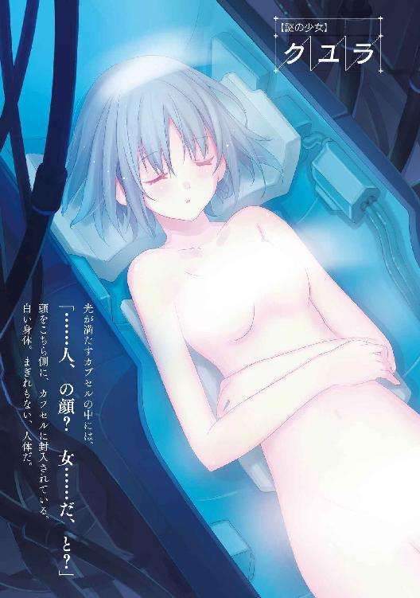
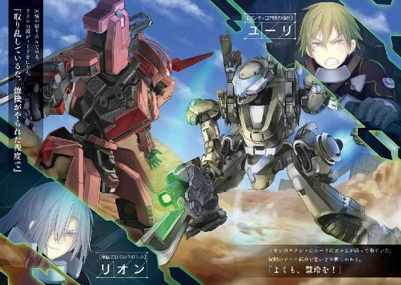
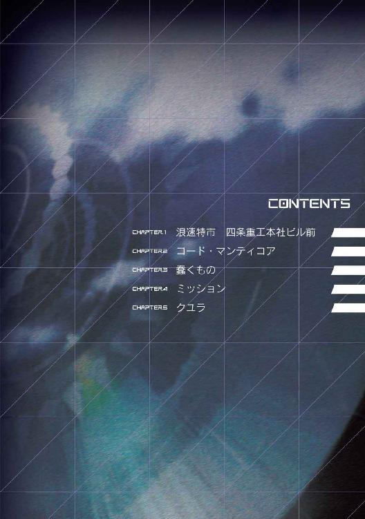
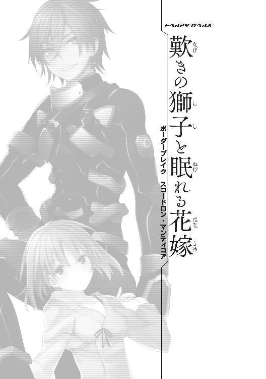
小説：すずきあきら
挿絵：るろお、岩間芯
原作：株式会社セガ・インタラクティブ ボーダーブレイク開発チーム
※本作品の全部あるいは一部を無断で複製・転載・配信・送信したり、ホームページ上に転載することを禁止します。本作品の内容を無断で改変、改ざん等行うことも禁止します。また、有償・無償にかかわらず本作品を第三者に譲渡することはできません。
※本作品は電子書籍配信用に再編集しております。
１
『I want for Christmas～last Christmas I wish～thank God～Jingle Bells......』
立体音響システムが奏でる歌声は、さまざまに混じり合い、反響し合って、まるで雑音のようにかまびすしい。
けれどどこか、わずかに身じろぎする以外かなわない、この狭小の空間には似合っている。
人がかろうじて全身を詰め込む以外、すべてが操作系と計器で満たされたコクピット。
そんな居場所を満たすのは、コンソールのプラスチックとゴム、各種複合素材、加えて鼻孔に張り付くようなシリコンオイルの匂い。
それに、
「もしかしたら、こいつを動かしてる女神の匂い、かもな」
誰にともなく、ユーライア......ユーリがつぶやく。
半ば持ち上げたＨＭＤ【ヘッドマウントディスプレイ】から垂れ落ちた前髪を、無造作にかきあげる。
女神、と自分で言って気に入らなかったのか、
「......悪霊かもしれねえがな」
唇をキュッ、と結んで言い直した。
しかしユーリは知っている。
このクーガーの狭いコクピットシェルを中心に、人型を形作るこの搭乗型兵器......ＢＲ【ブラストランナー】を動かすのは、そこに宿った女神でも悪霊でもない。
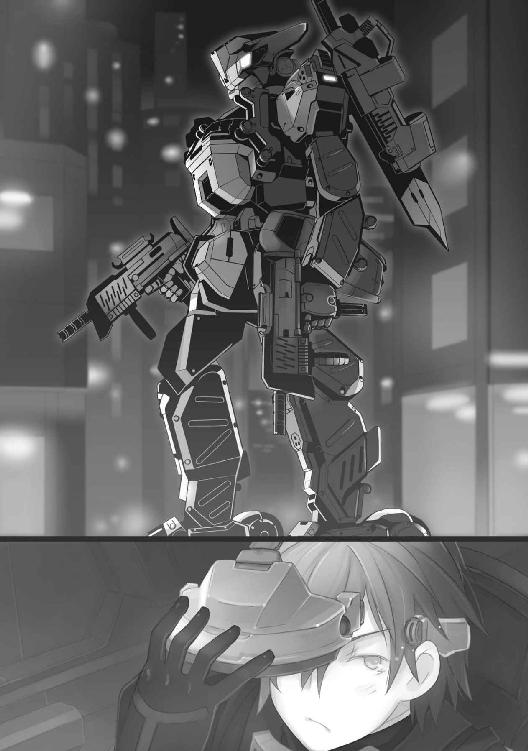
ニュード。
膨大なエネルギーを包摂し、その代償に人間を侵す。
宇宙で発見され、空から落ちて来た、その物質であることを。
「こいつだけじゃない。オレも......！」
そのニュードが、わが身にも宿っている。
そうでなければ、このブラストランナーは動かせない。
「まったく......」
つぶやきながらユーリは、ディスプレイに再び目をやる。
斜めにずらしたＨＭＤのモニターに映る、ぼんやりとした赤と緑の影。雑踏から立ち上る浮ついた空気は、寒さを感じさせない。
ひっきりなしのクリスマスソングは、外部集音マイクに拾われた街の音だ。
十二月中旬。
ここ浪速特市でも、街は近づいたクリスマス一色に染まっている。
浪速特市は、かつての大阪府や大阪市を再編して新たに誕生した特別行政区だ。西日本にあって、破壊とニュード汚染を受けつつも、近年再建著しい。
「......ホームパーティー、プレゼント、ターキー、クリスマスってやつは」
（復興暦になっても、変わらねえ）
『よぉユーリボーイ！ どんな具合だ！』
コクピットに突然、声が割り込んで来る。
ユーリは浮かせていた腰をシートに沈め直した。ずらしていたＨＭＤを顔に装着する。
視界を覆うモニターに映る外部映像。約二十メートル先、僚機の姿がある。同じタイプのＢＲ、クーガー。
こっちがカメラを向けたのに気付いたのか、機体は手にした中距離武器のＶＯＬＴ―ＲＸをわずかに振ってみせた。
「なにもないさ、ジェイコブ。わかってるんだろ。あと、ボーイはやめろって、言ったはずだ」
ユーリが答える。
『悪ぃ悪ぃ！ ボーイは失礼こいたよな。閃光の獅子吼のユーリ、いや巨大要塞墜としって言ったほうがよかったか！ なぁ！』
ジェイコブの軽口にユーリの、ＨＭＤで覆われていない顔の半分が苦虫を噛み潰したようになった。
「それもナシだ。世間の付けたふたつ名なんて、居心地が悪くて尻がムズムズする」
『なんだ、謙遜はらしくないぞぉ！ 若いうちはこう、楽しまないとな！ あの巨大要塞墜としのＢＲ乗りって聞いたら、街の娘がほうっておかないってなぁ！』
まただ、と思う。
かつてミッションで、多脚戦艦アルドシャウラを撃破した、と記録されたことから付いた呼び名が、巨大要塞墜とし。
機体のパーソナルマークの吠えるライオンで、閃光の獅子吼、などとも呼ばれる。
（まったく、お呼びじゃないぜ。派手なあだ名で冷やかされる、こっちの身にもなれってんだ）
一方、傭兵ランクの上昇とともに、ギャラが上がったのは、いいことだが。
そんなユーリの気分を察したか、ジェイコブが話を変える。いや、そっちの方が振りたかった話題なのだろう。
『まあな！ 街はクリスマス間近でこんな具合だし、警備ったって形だけって噂だし。だいいちナーバス過ぎるんだよ』
案の定、退屈して話し相手を求めているのだ。声からそんな空気が伝わって来る。
ユーリはサブディスプレイに視線を落とし、無意識に自機の装備、二丁サブマシンガンのＤ１０２アシュヴィンと強化型グレネードランチャーの装弾数を確かめた。
「わかってるさ。だがテロ予告があったんだ。浪速には四条重工もＴＳＵＭＯＩもある。悪魔のニュードで儲けてるって、ニュードやブラストの関連企業を嫌ってる連中は、どっからでも湧いてくるのさ」
四条重工もＴＳＵＭＯＩも、ＢＲ開発・生産メーカーの最大手だ。
日本発の多国籍企業で、この浪速に本社を置いている。
軍事だけでなく、機械・ロボット技術は建設、研究、医療といった分野にも高い汎用性とシェアを持つ。
しかしやり玉に挙げられるのはいつもＢＲ、いまこうしてユーリたちが操る搭乗型人型兵器だ。
ニュード耐性者に対する抜きがたい偏見も憎しみとなって、反対運動がテロに変わる。
『おかげでお決まりの市民団体とやらが、毎週土曜になるとここ四条本社ビルの前で、「四条重工は紛争の責任を取って解体しろ！」だの「経営陣は辞任しろ！」とか、果ては「戦争反対！」とか、まぁ声をそろえて定期デモやってんだよな。もう一年近く続いてる。ご苦労なこった』
「オレなんか「資本主義、反た～い！」ってのを聞いたぜ。どうなってるんだよ」
（「ニュード汚染を広げる耐性者は出て行け！」てのもな......）
ユーリが言うと、スピーカーから爆笑が聞こえて来た。
『あっはははは！ そりゃ傑作だな、おい！』
大笑いするジェイコブの顔が映る。
わざわざユーリのＨＭＤのモニターに、自機のコクピット映像をカットインさせて来る。
いわゆる自撮り画像だ。
カメラはコクピット内モニター用に設置されているものだが。
モニターに映る三十代前半の男の顔。そろそろ前髪の密度が怪しい。
（奥さんとは離婚。養育してるまだ小さい女の子がふたり......だったか）
思い出してユーリは、頭を振る。
「そんなの、知りたくないねー、ってんだよ！」
つい声に出して言うと、
『ああ？ どうした』
ジェイコブの声が言う。カットインの自撮り映像はもう消えていた。
「なんでもない。視認操作に戻る」
それだけ言うと、ユーリはＨＭＤを改めてしっかりと装着し直した。
補助スピーカーも切る。
雑音交じりのMerry Christmasも、Jingle Bellsもぷっつりと切れた。
コクピットに静寂が戻ると、中の匂いが強くなった錯覚に陥る。
わずかに聞こえるニュードモーターのアイドリングのうなり。腰部、脚部油圧サスペンションのシリンダー内で圧縮されるフルードの音。
ブラストランナーが戦闘状態で動き出せば、さらに各関節モーターが咆哮を上げ、装甲各部がきしむ。
ある程度遮音されているコクピットにも侵入して来る。加えて地面から突き上げてくる歩行、走行振動。
「早くそうなればいい。監視だけなんてまっぴらだ。おかげで知らなくていいことをどんどん聞かされちまう」
ユーリから見れば、倍かそれ以上に歳の違うジェイコブがバディーだというのも、ちょっとしたアクシデントだ。
そのうえしゃべりたがりで、おかげでこの二日あまり、ユーリはジェイコブの生い立ちやら故郷やら家庭環境にやたら詳しくなってしまった。
このミッションで初めて会ったブラストランナーパイロット。
同じ傭兵。
このミッションでは仲間だし、こうしてツーマンセルのバディーも組んでいる。
しかしミッションが終われば解散、さよならだ。連絡を取り合うこともない。
「ない、よな」
人懐こいジェイコブが、連絡先を教えろとしきりに言っていたのを思い出して、ユーリは肩をすくめる。
願い下げだ。傭兵どうしは一匹狼。同じ部隊を組むなら協力し合う。ミッションをやり遂げる。
けれど、その後は......。
「次は敵かもしれないんだ」
敵に多くを教えるバカはいない。
（殺してしまうかもしれない敵には、な）
だからユーリも聞かないし、知りたくもない。戦い方も、得意ワザも、ましてプライベートなぞ。
（明日で解散。あと一日）
実質、今夜で終わりだ。朝になれば交代。そして機外待機でミッションも夕方には終了する。
「じき、クリスマスも終わっちまうぜ」
言いながら、ユーリはメインカメラを動かす。
繁華街のストリートが大写しになった。
行き交う人の群れ。ズームインしなくとも着飾って、浮き立った、華やかで上付いた空気が伝わって来る。
この街、少なくともこの一角はほぼ耐性者の住民ばかりなのだろう。
四条やＴＳＵＭＯＩの関係者も多く住んでいるはず。
耐性者はその特性を活かして生活する。もしかすると人生のすべてにも。
にじむネオンのビビッドな色調に思わずカメラを振ると、ストリートに面したショーウインドーに画面がパンする。
「ぅん？」
オートでフォーカスが合い、赤外線補正で夜でも色調は自然に整えられる。
映し出されたのは、
「クリスマスプレゼント、か」
子どもに買ってやるためのキラキラした包装を前に、ベースボールグローブやバット、ファッション人形が並んでいる。
中にはゲームも通信もできる携帯用コンピューター端末もあって、子どものおもちゃとは一概に言いきれない高価な商品も少なくない。
そのひとつひとつを画像越しに眺めながら、
「......」
ユーリはカメラの動きを止めた。
そこに映っていたもの。
ハーモニカ。
スポット照明を浴びたそれは、かなり高級なもののようだ。金属の光沢が美しく、吹き口も三列はある。
（あんないいもんじゃなくてよかったんだ）
ユーリの脳裏に浮かぶのは、もっとシンプルな入門者向け、子供向けのものだった。
いまなら一度に何十個だって買えるが、あのころは、
「その一個が」
買えなかった。
ショーウインドーにへばりつく真似はしなかった。
ただ、店の前を通るたび横目で眺めた。
クリスマスが過ぎたころ、いつのまにかハーモニカはなくなり、別の商品、セーターとかショールとかになっていた。
（は！ せめてもっとあるだろ、ギターとかサックスとか。ハーモニカ程度で......）
自嘲気味の笑いが唇をゆがめる。
しかし十六歳のユーリには、それほど遠い記憶でもない。
街の仲間とさまざまに行動をともにするようになると、ハーモニカなどは簡単に手に入るようになった。
そのころには、もうハーモニカへの興味など、どこかへ失っていたが。
『......なぁ、俺が小さいころには、スロットカーレーシングが流行っててな。あれ、欲しかったんだよなぁ！』
まだジェイコブがしゃべっていた。そのうえ自撮り画像までまた割り込んで来る。
「おっさん、いいかげんに......」
ユーリが言おうとしたときだ。
視界を覆うＨＭＤのモニターに一瞬、光跡が流れた。
「！」
と思うと、ドン！ 音と衝撃がコクピット内まで届く。
正確には着弾の光のあと、わずかに遅れて音が来た。
「コンマ二、三秒ってとこか、弾着は......！」
数百メートル先の駐車車両が燃えている。直撃だったか。
『おい！ なんだいまの！ まさか』
「まさかじゃない！ 敵襲だ！」
すでにユーリは警戒モードから臨戦モードへＢＲの戦闘マッピングを切り替えている。
これだけで、各種の反応・即応性、モーター出力が二十パーセントは跳ねあがる。
「エネルギーはバカ食いだけどな！」
だが心配はない。
ブラストランナーを駆動するのは化石燃料でもバッテリーでもない。
（ニュードが赤々と燃え盛ってるのがわかるぜ！ オレの血管の中まで巡ってきやがる！）
あくまで、ユーリの「感覚」がそう告げてくる。
その感覚に従って、ユーリは機体をダッシュ、突出させていく。
『お、おい！ 待てよ、ユーリ！ まだ......』
ジェイコブの声が、後方へかすむようだ。
２
「......ゲームが始まった、か」
四条本社ビルを見下ろす小高い丘の頂上。
林の中にあって、さらに偽装ネットで念入りにカモフラージュされたＢＲがあった。
取り囲むように、近くの地面にはジャマーが打ち込まれており、レーダーからも機体を隠している。
コクピット内。
男はＨＭＤのモニターを超望遠モードで見つめている。
漆黒のパイロットスーツに身を包んでいた。
倍率を上げる。
夜でもあり、数キロメートル先の目標は性能いっぱいのデジタル補正をしてもザラザラと画質の粗い、ぎこちない画像でしかない。
しかしそこに、通常では考えられない速さを見せるＢＲの一機を見つけて、
「あれは」
驚きを口にする。
メインカメラの倍率を下げながら、しばらく目で追っていたが、
「なるほど、そうか」
表情が動いた。なんとも楽しそうな、楽しみを見つけた、という顔になる。
しばらくして、モニターを切り替える。
四条本社の全景になった。
「思ったより楽しい夜になりそうだ」
コンソールに手を伸ばす。
サブモニターのメニュー画面からいくつかタッチパネルを操作すると、ＢＲが立ち上がった。
外から見ると、偽装が急に盛り上がり、中からＢＲの姿が現れたようだ。手にしたレールガンを振って、偽装を引きちぎると、
「行くぞ」
ブースターを吹かせ、さらにアサルトチャージャーをオンに。
ブースター内のスラスターに燃料噴射することで瞬間的に推力を大幅に増強する、一種のアフターバーナーだ。
森の木々を眼下に、軽々と飛び越えて行く。
街はもうパニックに陥っていた。
爆発音は繁華街までも届き、破壊された車両から炎が上がるに至って、人々は差し迫る危機の深刻さを理解した。
ほとんどが耐性者の街とはいえ、戦闘やテロには慣れるということがない。
「うぉあ!?」
沸き起こる驚嘆の声。
メインストリートにＢＲが現れたのだ。
突然の人型兵器の突入に、今度こそ人々は逃げ惑う。
ＢＲは全部で四機。しかし全高約五メートルというその大きさ以上の威圧感、恐怖感は街を、絵に描いたような恐怖の坩堝へと陥れるのに十分だった。
「どこだ！ くそっ！ 人が邪魔で見えねえ！」
ユーリもまた、クーガーでメインストリートへ出るが、逃げる人々の列でまともに身動きが取れない。
「敵は......」
赤外線暗視モードとデジタル補正のおかげで、モニターの視界は昼間のように明瞭だ。しかし映っているのはパニックだけ。
熱量感知モードに切り替える。
だが熱量のほとんどは人間と車道の車両からで、これも使えない。
「こいつは！」
モードをニュード感知に。
空気中に漂う微細なニュード粒子を検出するためのものだ。しかしこれだと視界は、ニュード粒子を示す赤い霧のような光点だけになってしまう。
「リアルタイムで通常画像と合成できないのかよ。ち！ かまうか......ぅ、ん？」
モニターの視界が青い闇に閉ざされる。
が、すぐに、右後方から赤い光点が染み出して来る。
「っ！」
ユーリがサブマシンガンを向けると、
『ちょっ！ おおおおっと、待て！ オレだ！ ユーリ、オレだ、ジェイコブだ！』
スピーカーから声。
とっさにユーリは右手を離した。コクピット右手のコンソール、武装系のコントロールグリップだ。
ユーリのＢＲのサブマシンガンは、正確にジェイコブ機を至近から照準している。
一瞬遅ければ、たっぷりと二十ミリ弾を浴びせていただろう。近距離制圧用の弱装弾とはいえ、ダメージが中のパイロットまで及ぶことも十分ありうる。
「危ないぞ！ 味方識別ビーコン、どうした！」
思わずユーリが怒鳴る。ジェイコブは、
『悪ぃ、いつのまにか勝手に切れてた』
「なわけ......！」
あるか！ 言いかけて止める。
いまさら非難したところでどうなるものでもない。さっきまで気にしていなかったのはユーリも同じだ。
すぐに意識を切り替える。
『だいたいよ、バディーを置いていくヤツがあるかよ。だから追いかけて来たんじゃないか。勝手に持ち場を離れたらペナルティーだぞ。ま、そのへんはオレの証言でなんとかしてやるよ。敵を目視で発見、追跡した、とかな』
ジェイコブ流の親切心らしい。
そんなウソ、街中に監視カメラがあって、その映像を常時モニター、録画しているのが常識のいま、通用するとは思えないが。
「ああ、サンクス、恩に着る。感謝のついでに、バックアップを頼んでいいか。次の通りまで出たいんだ」
『ああいいぞ。オレはおまえのバディーなんだからな。バックアップはお手のもんだが、四条のビルからこれ以上離れると、今度こそ命令違反、契約違反ってことにならないかな』
「そこが狙いだ」
『狙い？』
ジェイコブが戸惑うのが伝わって来る。
いちいち説明するのは時間が惜しい。しかし人は納得しなければ動かないし、動きも鈍る。
「敵がそう思ってる。オレたちが防御対象から離れないってな。だから好き勝手に襲って来る。向こうのフリーハンドだ。それじゃ半分以上もう負けてるのと同じだ。こっちからイニシアチブを取って攻撃しない限り」
ユーリの言葉に、
『そういうもんか、ほお。さすがは、閃光の獅子吼！ 巨大要塞墜としのユーリだな、ボーイ！』
のんきなジェイコブの声が癇にさわる。
舌打ちしそうになるのを抑えて、
「だからそのボーイはやめろって。オレが次の街区へ......」
ユーリが言おうとしたときだ。ニュード検知センサーに感ありの警告が灯る。急いでモニターを切り替えると、
「前だ！ 二時の方向！」
ビルの向こうに赤いニュードの霧が示される。
ユーリは無意識にＢＲのサブマシンガンを構えると、ビルの向こうへ回り込むべく脚底部ラッシングホイールによるダッシュをかけた。
アスファルトをＢＲの脚部ホイールが踏みにじりながら、機体を瞬時に時速六十キロ以上にまで加速する。
最高二百キロまで達する加速に、ユーリの身体がコクピットシートに押しつけられる。
まだ人はいたが、あらかた歩道に収まってたし、車はよけながら追い越せばいい。
（ゼロ―四百、四秒切ってるんじゃねえか！）
思う間もなく、交差点の向こうへ飛び出した。
「いたぞ！」
夜間用カモフラージュ塗装のせいで、一瞬見間違いそうになる。が、ビルを背にしていたせいで、逆に浮かび上がって見える角度があった。
「食らえっ！」
叫んだときには、サブマシンガンのトリガーを引いていた。
ドゥドゥゥッ！
低く鈍い発射音は、市街戦用にサプレッサーをマズルに装着しているせいだ。しかし反動は機体に伝わって、コクピットを振動させる。
（これだ......！）
心地よい振動がユーリを包む。
暗視モードに戻したモニターの明るい画面の中、正体不明のＢＲの機体表面に次々弾着していく二十ミリ弾。
その光景が、心をざわつかせる。
（オレの中のニュードが、沸騰するっ！）
ユーリが心の中でいつもそう表現する、この感覚。
同時に、自分の身体が膨張して、ＢＲと一体になったかのような錯覚が襲ってくる。
皮膚感覚が拡大し、ＢＲの装甲に張り付き、それが自分の肌であり、機械のマニュピレーターが自分の手で、指になる。
この瞬間、
（オレが！）
「オレが、ＢＲだ！ オレが、クーガー......！」
ユーリは確信する。
確信が、機体をよりコントローラブルにする。各部の操作、反応は速く、正確に......いや、もっと、強くする！
ドンッ！ ドンッ！ ドッ！
ユーリの耳には、発射音もその間隔も、長く間延びしたように聞こえる。
音だけでなく、モニターに映る発砲炎も、相手のＢＲがダメージで擱座していく様までも、まるでスローモーションのようだ。
入り込んでいる。
ユーリがＢＲに乗り、戦闘を行っているとき、必ず起こるとは限らない。
しかし、より「戦えている」と思えたときには、つねにこうなっていた。
ＢＲとの比類なき一体感、同質感。
血管の中を血が流れるように、ＢＲの各部をニュードの粒子が巡るのがわかる。
そう、錯覚するほどに、ひとつとなっていた。
だからいまも、
（勝った！）
「これで終わり、だ！」
サブマシンガンを連射。全弾が弱点の頭部に集中して着弾すれば、大ダメージのはず。
ユーリが、目の前の敵を倒した、と思ったのもゆえに無理はない。慢心でもない。しかし、
『もう一機いるぞ、ユーリ！ 十時方向！』
ジェイコブが叫ぶと同時に、アサルトライフルを発射する。
敵もツーマンセルだったのだ。だが、そこまでは想定内だ。
「待って、ろよ！ おぉおおっ！」
自分越しに飛んでいく曳光弾の光跡が、敵の周囲で弾け散るのを見ながらユーリは機体を回り込ませる。
たったいま倒したばかりの敵の一機を乗り越え、残った一機に残りのサブマシンガンの弾丸を撃ち込む。
それだけ。ただそれだけ。そこには思考などない。
鍛え抜かれ、削ぎ落とされた無駄のない動きが反射的に生じて、結果、敵は粉砕される。
粉砕、されねばならない。
ドンッ、ドンッ！
弾着の音。正確にＢＲの装甲を叩き、破砕していく。
逃げようとする方向には、ジェイコブがライフル弾を撃ち込んでいる。
そっちの雨に飛び込んでいくのを留まるなら、ユーリのピストル弾の餌食になるほかない。
ドンッ、ドッ！
飛び散ったのはメインカメラのレンズか、防弾カバーか。一瞬、きらめきながら、色とりどりのネオンを映す。
（獲った！）
まただ。あっけない。
敵ＢＲ二機撃破。
ジェイコブのヘルプもあった。しかし倒したのはユーリの、自分の弾丸だ。
（オレの、ＢＲだ！ オレ......だ！）
吹き飛んだ敵ＢＲの前面装甲が、スローモーションでこちらに向かって落ちて来る。
一瞬気を取られた。そのとき、
『上だ！ ユーリ！』
ジェイコブの叫び声。
（上だと......!?）
ニュード感知器にも感なしだ。センサーの感度を最大にしているのに、気づかないはずがな、い......!?
ユーリは外部メインカメラを反射的に上へ向ける。
そこに映る影。急激に大きくなる。
降って、来る。
「バカ、な！」
ヤクシャ型のＢＲだとわかった。
真っ赤に塗られていた。
全身に血を浴びて、乾きかけた、そんな暗い赤。
違和感に、身体が反応する。もとより、ジェイコブの声を聞いてから、ユーリは反射的に回避行動をとっていた。
しかしそれでも、
（ロックされた？ 間に合わない......！）
３
電磁加速砲か。敵ＢＲの武器の砲口がユーリをまっすぐ捉えて離さない。
迸る光を目にした瞬間、すべてが終わる。
覚悟、という言葉が浮かんだ刹那、
バンッ！ バッ！ 光ったのはニュードライフルの発射光だった。もちろんジェイコブの射撃だ。
「！」
敵ＢＲが空中で姿勢を変えた。ブースターを噴かしたのか。弾丸を回避する。
それにしても速い。が、姿勢が乱れたことでユーリ機への発砲はなくなる。ところが、
（こっちも......！）
ユーリのほうも緊急回避で機体を横跳びに倒している。駐車車両にぶつかり、押し潰してしまっていた。
ガッ、ン！ 地響きとともに敵の赤いＢＲが着地する。そこから射撃姿勢へ移るのも瞬時だ。
だがまだユーリ機は体勢を立て直していない。
ＢＲは歩く、走る、跳ぶ、といった基本動作は素早い。
操縦も、じつにシンプルだ。
だが倒れた機体を起こす、それも潰れた車両から引き離しながら、といった複雑な動作は、姿勢制御コンピューターがシミュレーションしながらになるため、どうしても遅くなる。
危機はまだ過ぎ去っていなかったのだ。
そのうえユーリと敵ＢＲが射線上に重なって、ジェイコブがアサルトライフルを撃てない。
ふたたび敵ＢＲの砲口がユーリのコクピットに向けられる。
こんどこそ、逃れる術はない。あと一瞬の、時間がない。
「く、そ......！」
ユーリの意識に、ざわっ、と後頭部を逆なでされるような感触が走る。それが恐怖というなら、初めての感覚だった。
『とぁぁぁああああありゃぁ！』
尻上がりに大きくなる声がスピーカーから響くのに気付いたときには、目の前の敵ＢＲが大きく傾いで、弾き飛ばされていた。
ゴンッ！ 金属と金属が激しくぶつかり合う音と衝撃。ジェイコブのＢＲが敵に体当たりしたのだとわかるのに、少しかかった。
「おっさん！」
とっさに出たのは、名前ではなかった。
『ひどいぞ、ユーリ！ オレはジェイコブ・ラーディッシュって名前が......』
そこまでだった。
ビッ......ル！ 敵ＢＲが発砲した。
弾き飛ばされても、敵は電磁加速砲を握る手【マニピュレーター】を離さなかった。
ニュード粒子が光る。空間をゆがめるような奇妙な音と圧迫感が過ぎたあとには、ジェイコブの機体はコクピットから頭部までを真っ黒に焼かれていた。
「ジェイ......！」
こんどは名前が口をついて出た。
ユーリは、もう機体を完全に立ち上がらせている。
「おまえ、がぁぁああ！」
すかさずサブマシンガンを連射する。
起き上がりざま、もう銃口は向けていた。
ふんっ！
しかし敵ＢＲは、そんなふうにかぶりを振ると、一気にホイールダッシュをかけると逃走に移った。
「......待てっ！」
ユーリが追う。
本社ビルを横目に、二機のＢＲの逃走と追跡が始まった。と、その瞬間、
「な、に!?」
目の前から、敵影が消える。
一瞬、遮蔽物に隠れたか、と疑ったが、違う。
ユーリは素早くモニターを熱量検知モードに、さらにニュード検知センサーに切り替えたが、敵は発見できない。
「......そうか！」
空を見上げるユーリ。クーガーのメインカメラをパンするだけでは、真上に近い仰角は得られない。
補助カメラに切り替えると、
「やっぱり、だ」
モニターが、真っ赤に染まった。
敵ＢＲではない。
「エイオース！」
上空約千八百キロメートルのかなたにある中軌道大型ステーション。
人類の進歩と希望のシンボルのように建設され、いまも空にある。ただし、半ば廃墟と化して。
ニュードの発見と開発のフロンティアでありオーソリティーでもあったエイオースは、いまでもその内部に莫大なニュードを宿している。
「だから、だ。くっ！ こんな単純なことが」
ＢＲ自体、ニュードドライブによって駆動している。
機体のニュードドライブは厳重にシーリングされているし、外部へ漏れるニュード粒子も、「自然環境に存在する」ニュードの数値以下で、人体、周囲に「ただちに影響はない」レベルだ。
しかしそれゆえ、限界まで感度を上げたニュード検知システムは、容易に自機のニュードを捉える。
モニターはつねに赤く染まり、用をなさなくなる。
そのため、ニュード感知センサーは非常に指向性を強められているし、自然界に存在する地表からのニュード粒子は設定された処理で除外されるが、
「空は、無理だな」
ニュードの塊たるエイオースは、ＢＲのセンサーを引き付け、飽和、無効化してしまう。
（それを狙ったのか。その時間を使って）
空からアタックすれば、センサーでは敵の機体を見つけることも、追うこともできなくなる。
だとすると......。
「まずいぜ！」
ユーリは機体を返した。
たったいままで戦っていた敵ＢＲは、ユーリが見たこともないバックパックを装着していた。
それが大型のアサルトチャージャーで、単機で短時間の飛行（にも似た跳躍）が可能なのかもしれない、とは推測できる。
ならば、そうしたＢＲが多数、一気に四条重工本社を襲ったら......。
ユーリは無線の回線を開く。
「聞いてるか！ おい！ こちらはゼロ・ゼロ・５機、アンダンテだ！」
機体に名づけられたコードネームをコールする。続けて、
「警戒しろ！ 上だ......空を」
そこまで言ったときだ。
向かっていた四条重工本社ビルが炎に包まれた。
「っ!!」
正確には、本社ビルの巨大なシルエットを浮かび上がらせるように、背後で大きな炎と爆発が起こった。
（なにが起きてる!?）
「応答しろ！ おい！ こちらアンダンテ！」
しかしユーリのコールにも返答はない。
本社ビルの警備にはユーリとジェイコブを除いても、あと八機ものＢＲがついている。
（まさか全滅......全滅なのか!?）
ビルもかなりのダメージを負っているはず。
四条重工本社の広大な敷地へユーリ機が飛び込むころには、爆発炎上の現場もはっきりとわかって来た。
ところが、
「ビルが攻撃されたんじゃない？」
燃えているのは、ビルの裏手、百メートル近くも離れた場所だ。敷地内だが路上と言っていい。
カメラをズームする。
赤い焔をバックに浮かび上がるのは、輸送車両の車列だった。いまは停止している。十輌はいるだろうか。
ほとんどが大型のパネルトラックだ。先頭と最後尾に位置する装甲車両が完全に破壊されていた。
奇妙だ、とユーリは思う。
人がいない。
これだけの車両だ。運転していた者はどうなった？ カメラをパンしてもそれらしい人影はない。トラックの運転席は、特殊なフィルムでも貼られているのか、中をうかがい知ることはできない。
考えられるのは、自動操縦、ロボット車だが。
注意深く近づきながら、ユーリは停止した車列を監視した。
しかし周囲を一周しても、とくに動きはない。
ところどころ、破壊され擱座したＢＲの残骸がまだ一部、煙を上げている。すべてがコクピットを潰されているから、急ぎ生存者を確認しても徒労に終わるだろう。
意を決してユーリは、クーガーを車列に近づける。しかし破壊された装甲車両よりも、目を引くものがある。
「なんだ、光ってる......」
ちょうど中央のトラックだ。
パネルの一部が損傷したのか、めくれあがって中が覗いていた。その内部から光が漏れているのだ。
罠の可能性も考え、さらに細心の注意を払いながら近づく。
喉のあたりがヒリヒリする、引き攣るような感覚がこみ上げる。
この兆候。ユーリの経験では、かなりの危険度だ。いつもならば近づかず、監視に留める。せめて僚機が現れるまで待つ。
なのに、
（なんでだ。なんでオレは近づいてる。いや、引き寄せられてる......？）
撃たれるか、仕掛け爆弾か......感覚の警告はさらに高まる。心臓の鼓動が耳を塞ぐ。冷たい汗がパイロットスーツの下を流れ落ちた。
「これ、が......！」
最後の一歩を踏み越え、トラックにクーガーの身を寄せる。
ちょうど、頭部メインカメラから見下ろす位置に、破孔があった。
パネルトラックといっても、既成のアルミパネルなどではなく、それ自体が複雑で専用のユニットの一部のようだ。
破孔をのぞき込む。
カメラの焦点が合う。が、内部はわずかしか見えない。
手を伸ばした。クーガーのマニピュレーターが、めくれたパネル外板をつかむ。
なぜ、そんなことをしたのかわからない。
契約ミッションにはもちろんないし、アクシデントにしても現場保存が最優先のはず。
それはわかっている。
なのに、止められない。
「オレは......」
バリッ、メリメリメリ......、一部装甲化されたパネルが引き剥がされていく。内部が大きく露出した。
４
「カプセル、なのか」
青白い光は、この透明カプセルを照らすもののようだ。カプセルの周りは、いくつもの補器類が整然と取り付けられている。
本来ならば、ハッチを開けてアクセスするはずのカプセル。
だから全部は見えない。わかるのは、カプセル自体は二メートルほどの長さ、直径は一メートルほど。
それはちょうど、人ひとりを収納するのに適した大きさ......。
ユーリがそう気づくのと、カプセル内部の曇りが急に晴れてくるのが同時だった。
光が満たすカプセルの中には、
「......人、の顔？ 女......だ、と？」
頭をこちら側に、カプセルに封入されている。
白い身体。
まぎれもない、人体だ。
真っ白く、ミルクのような、と形容したくなる肌。死体や人工物ではない。青い光の中でも、確かな生気を感じる。
「生きてる。女、の子、なのか」
吸い寄せられるように見つめるユーリ。
ミドルショートの髪。伏せられた眼差し、かすかに開いた唇。呼吸しているのを確かめようと、視線を少女の身体へと移す。と、
「......ぅあ!?」
変な声が出た。
顔ばかり見ていて気付かなかった。
少女の身体は覆うものも何ひとつなく、青白い光の中、生まれたままの裸体をカプセルの中に曝していたのだ。
（お、お、おい！ おいおい、おいっ！）
最後はなぜか、怒ったような調子になる。それも自分に向けて、だ。
思わず無意識にカメラを逸らしてしまったユーリだが、
「何やってる！ こいつの正体を......この『積み荷』が何なのかを調べるのが先決だろう。オレたちは、こいつのために四条のビルを守ってたのか？」
それならば、話が違う。
こんなトラックや装甲車が来るなど、聞かされていなかった。敵が襲ったのも、ビルではなくてこの車列の方ではないか。
となると、
「陽動......オレたちは囮にされたってのか」
つぶやくユーリ。
テロを予告して来た「犯人」側からすれば、浪速特市全域に警戒域を広げさせ、警備の密度を下げることができる。
四条、ＴＳＵＭＯＩといったＢＲ、ニュード関連の企業がターゲットになると予想されてもなお、特市の警察、機動部隊などが市街の警備を怠ることはできない。
考えながらユーリはいつのまにか、クーガーのカメラをカプセルの少女に、少女の顔にズームアップさせていた。
（眠ってるのか）
生きているなら、眠らされているのかもしれない。それとももっと、仮死状態に......。
気が付くとユーリは、コクピットハッチ解放ノブを操作していた。
ズワッ......。コクピットが開く。密閉されていたごく狭い空間の中の空気がいっせいに漏れ出る。
代わりに、夜の湿度を含んだ大気がコクピット内を満たす。ムッ、とする火薬や炎の煤の臭いが瞬間、鼻をつく。
けれどすぐに目前の清浄な景色に目を奪われる。
そこだけ空気も、時間の流れも変わってしまっているようだ。
コクピットという限定された空間と、コンテナの中、カプセルの中という、こちらも限定された空間が、かろうじて繋がった。
「死んではいないよな。やっぱり、眠ってる」
確かめるように言うと、ユーリはＨＭＤを脇へ押しやり、シートから身を起こす。
直に自分の目でカプセルを見つめた。
戦場と言えるほどの現場で、ミッションが終わってもいないのにこうしてコクピットを開くこと自体が異常だ。
ハンガーに帰投するまではコクピットを開けない。開けるとしたら、緊急脱出の際だけだ。
そんなことはＢＲ乗りでなくとも常識と言える。
なのに、
（今日のオレは、どうなってる）
中の少女の正体もわからないまま、ユーリはカプセルに向かって身を乗り出した。かろうじて、顔を寄せる。
少女の顔に向き合う。
「よかった。生きてる......！」
わずかに開いた唇が震えている。
小さくだが、自立呼吸しているのがわかる。
ふっくらと蕾のような裸の胸も、かすかに上下していた。
込み上げる安堵感に、ユーリは息を吐き出した。そのときだ。
少女の閉じられた目蓋、そのまつ毛がかすかに動いたような気がした。
（ん？）
覗き込むように顔を近づけたユーリの目の前で、
「......」
少女の目が開いた。
「ぉ、あ......！」
真に驚いたとき、大きな声は上がらないらしい。代わりに漏れたのは、うめきのようなもの。
それも、喉の奥に張り付いて、まともな言葉にもならない。
ただあるのは、まっすぐに見上げてくる少女の目の、ルビーレッドの虹彩に吸い込まれそうになる、味わったことのない感覚。
「え、と」
ユーリの口から出たのはその程度の声。しかし関係なく、少女は変わらずユーリを見つめている。
瞬きすると、表情がわずかに変わった。
人形のように硬質だった表情が、少しだけやわらかく。
（やっぱり、生きてるんだな）
思いながら無意識に、カプセルに向かって手を伸ばしていた。
カプセルに触れる。透明の硬質アクリル越しに、少女の頬に触れた気がした。
「ぁ」
唇が、動いた。
それは確かに、微笑んでいるような形に、動いて......、
（......!!）
瞬間、危険が横殴りに襲って来た。
一瞬早く察知すると、弾かれたように身体をコクピット内へ押し込む。
同時に、レールガンの光軸が目の前を通り過ぎた。たったいままで、ユーリの身体があった空間を貫く。
（ヤツか！）
見失った、街で戦った血の色のＢＲを思い浮かべたとき、
「ぅうっ!!」
すさまじい圧力が襲って来た。
憤怒が、感情がそのまま兵器となって、ユーリのクーガーを包み込む。奔流を叩きつけてくる。
そんなふうに錯覚するほど、かろうじてセットしたＨＭＤのモニターに映る敵ＢＲの姿には恐怖が宿っていた。
『離れろ!!』
こっちは錯覚ではなかった。
はっきりと聞こえる。スピーカーが叫んでいる。回線を割り込まれたのか。敵の直接通信が入って来るなど、
「ありえねえ......いや！」
無意識に回避行動をとって後退しながら、ユーリはコクピットを閉じる。いっきに数十メートルも下がった。
ドンドン、ドッ！ 実体弾が飛んでくる。数で面をカバーするミサイルだから、精密な照準はない。
が、それだけ広く捉えられているので、回避も大きくなり、攻撃はできない。それを見越したように、レールガンの光軸が襲う。
「うううっ......！」
歯を食いしばって耐える。機体を操る。
機動性の限界、ときにそれを超える速度と動き、急激なロール、停止、急発進、加速、機体を横滑りさせてのターン。
どれも通常では考えられない、ＢＲの全メカニズムを酷使した操作だ。
機体各部の関節が悲鳴を上げ、モーターが焼き付く寸前の高温に灼熱する。
その間にも、なんとか手持ち武器のサブマシンガンを二度、三度とユーリは放った。照準などできない、しかし牽制にはなる。
「まだか！ まだ来るのかよ！」
思わず吐き出す。ユーリの視界がかすむ。
こんな全力の機動など、ふだん一分だって連続して行うことはない。ＢＲのマニュアルでだって、出力はピークパワーの八割に抑えるよう指導されている。
それをもう、五分、
（もっと、だ！）
やっている。永遠とも思える回避軌道の中、ユーリの全身もまた体力の限界に喘いでいた。
気づくと、すっかりコンテナからは離れていた。
そこは四条重工本社の広大な裏庭だ。正体不明のＢＲと一騎打ちになる。
「離れろ、ヤツと距離を、取るんだ！」
自分に言い聞かせながら、ユーリはＢＲを高速で後退。エッジを切るように反転。続けざまに、サブマシンガンを連射。
ようやく至近弾を与えられた。敵がわずかに進路を変える。一瞬の余裕がユーリに生まれた。
ユーリのＢＲが離れたことから敵の注意がコンテナへ向き、結果的に隙が生じたのかもしれない。
ここでユーリは、
「もう逃げ回るのは終わりだ！」
それまでの、距離をとる機動から一転、敵ＢＲへ向かってアサルトチャージャーでダッシュをかける。
サブマシンガンから、デュエルソードへ持ち替えていた。
「どうした！ 近すぎて撃てないか！ ならこっちの番、だ！」
デュエルソードを袈裟がけに振るう。
こんなとき、機体の性能や状況以上に、気圧されない者はいない。だが敵もまた、タフだった。
『そんなものではない！』
クーガーのサブマシンガンの射撃から逃げるどころか、レールガンを捨て、ロングスピアを構える。
結果、両機ともゆずらず、敵弾の回避も行わず、まっすぐに向かい合う。お互いに突っ込んだ。
ゴゥッ、ガガッ！ 真正面からぶつかり合う二機。
装甲が破れそうな衝撃がコクピットを襲う。
押しつぶされるような音とショック。身体ごと投げ出されそうになるのを、食い込むハーネスが押しとどめる。
「がはっ！ うぁあ！」
けんめいにこらえながら、いっぽうで機体の操作もまた怠らない。デュエルソードを振りかぶる。が、寸前、押さえられた。反対に、敵のロングスピアもまた、ユーリのクーガーが押さえる。
前面装甲を密着させたまま、がっぷりと四つに組む形になった。
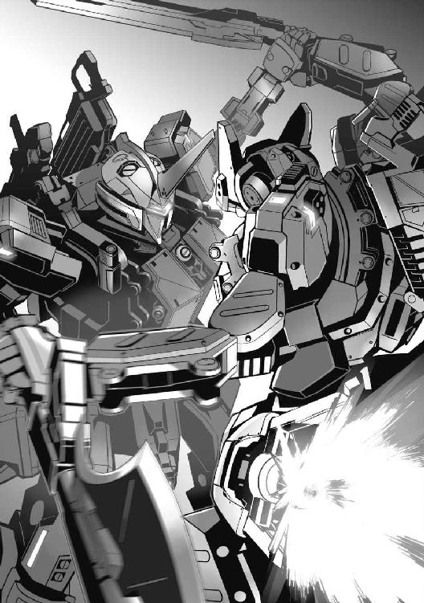
ＨＭＤの前面モニターに、敵ＢＲの「顔」が大写しになる。
「く、そぉお！ 離せ、離せ、ぉらああ！」
こうなると、ゾッとする恐怖にかられる。剥き出しの恐怖に鷲づかみにされる。
やみくもに機体を動かし、揺するユーリに、
『よい動きだ。閃光の獅子吼と名高い傭兵だけはある。貴様だったとはな』
また敵の割り込み無線の声。
「何だって。これだから、その呼び名はイヤだってんだ！」
『よく聞け。そちらの回線をとらえている』
「最初から？ じゃあ」
（無線は盗聴されてたのか？ くそっ！ 暗号化通信じゃなかったのかよ！）
いまごろわかっても仕方がない。
ユーリたち以外の部隊が、おそらくは全滅したのも、そうした無線を把握されていたことも関係しているはずだ。
その相手がおそらくは目の前の、
（こいつだ......こいつが！）
さっき見た、警護のＢＲの残骸が浮かぶ。コクピットを潰され、皆殺しにされたパイロットたち。
『何をした』
こんどは敵が訊いて来る。
「あぁ？ 何の話だ！」
『答えてもらうぞ』
モニターの一部にカットイン。敵コクピット内部が映る。
「声だけじゃないのか。こんなことまで！」
（こいつが敵の......パイロット！）
ユーリと同じく、ＨＭＤを装着しているため、口元から上は見えない。
だがそれだけでも、端正な顔つきが想像できた。
かなり若い。
加えて、青ざめたように白い肌。
それが何かを思い起こさせる。だが答えが浮かぶまえに、男の次の言葉が、ユーリを真に驚かせた。
５
『コンテナの中を、クユラを見たのだろう！』
「クユ......？」
（クユラ、あの、女のことか。名前......）
ユーリの脳裏に、ついさっき見た少女の姿が強烈に蘇って来る。まっすぐにユーリを見つめていた顔。ルビーレッドの瞳。
かすかに開いて、ほころんだ唇。
「クユラっていうのか」
『......』
「こっちが聞いてんだよ！ あれはなんだ!? ただの女のわけがねえ！ おまえらの狙いはあれか。あの女なのか！ それとももっと、別のコンテナにいるのか！ ほかの女が......もっと！」
一気にまくしたてる。
だが熱くなるユーリと対照的に、冷静、冷徹な男の言葉が返って来る。
『おまえに質問する権利はない。わたしに答える義務もない』
「は！ 権利とかそんなんじゃねえ。オレが知りたいんだ。クユラのこと、あれはいったい......」
ふつうではない。
ただのミドルティーンの女子などではない。まして搬送されて来た患者などでもありえなかった。
（あれは）
ユーリにはわかる。
いや、正体はわからないが感じる。
内なるニュードが告げている。
同じもの。同じ者。おそらくユーリと同じ何かを持った......、
「まさ、か......」
瞬間、ユーリの心の奥底が口を開けた。傷口のような亀裂の中の、深い記憶の断片がフラッシュバックする。
『何を考えている』
モニターの男が問う。しかし、
「おおっと！ 動くなよ。いや、動けないか。さっきから、トルクくらべをしてたんだ。どうやらマニピュレーターのパワーはこっちが上のようだな！」
ユーリは言うと、コントロールスティックをぐっ、とねじり上げた。
お互い組み合って身動き取れないようでいて、ユーリはずっと敵のマニピュレーター出力を推し量っていた。
会話しながら、相手の言葉や自分の記憶のイメージにショックを受けながらも、戦うのをやめていなかったのだ。
「どうだ！ こっちの動きを止められるか！」
ギリギリとユーリは敵ＢＲの腕部を締め上げる。逆に、自機の腕部は自由になりつつあった。
「思ったとおりだ！ こいつは滞空できるほどブースターが強力らしいが、逆に言えばパワーや装甲を犠牲にしてウェイトを軽くしてるってことだ！」
それを探って、突き止めた。
あとは、パワーで押し切るのみ。
『ほう、なかなかやるものだな』
「ほらほらどうした。余裕ぶってる場合じゃないぜ！ クーガーのソードがおまえの胸を貫くぞ！ おっ、と！ 特製のブースターを吹かして空へ逃げようたって、そうはさせねぇ！」
がっちりと組み合っている、つかんでいるから、敵ＢＲは逃れられない。
「答えるならいまのうちだ。あの女......クユラは何だ！ おまえたちの目的はあの女だったのか。だいたいおまえらは、何者だ！」
が、矢継ぎ早のユーリの問いにも、モニターの向こうの顔は動じる気配がない。
『やれると思うのか』
「斬れないと思ってるのか。別におまえが口を割らなくても、あとでゆっくりあの女に直接訊けばいい......」
『そんなことはさせない』
「させなきゃどうした！ かまわねぇ、斬る！ ソードだって、じっくりおまえごとコクピットを貫けるんだぜ！」
ユーリがクーガーの腕部マニピュレーターを操作する。
『くっ！』
モニターの中の男の口元が、初めてわずかに歪んだように見えた。
ユーリにいつもの感じがこみ上げる。
勝利の感覚。少しも晴れがましいものではない。あるとしたら、目の前の死地を脱した、それゆえの高揚感かもしれない。
「じゃあな」
最後の動作を入力する。
あとは、デュエルソードがすべてを決定づけてくる。
はずだった。が、
「......どうした？」
動かない。
それどころか、ギュギュギュ......キュルルル、モーター音がおかしい。機体各部から急速にトルクが失われていく。
「どうなってる、くそっ！」
ユーリが声を上げる。しかしコントロールスティックの反応は鈍い。
サブモニターから直接動作メニューを呼び出してコマンドする。が、これもダメだ。
『どうした。やらないのか』
ＨＭＤモニターの男が言う。すでに表情は平静を取り戻していた。それとも、さっきの余裕を失ったように見えたのも、間違いだったのか。
「てめぇ、何をした！」
『何をした？ 自分に言うのだな。そしてもうこっちのほうが、パワーも上だ！』
男の言うとおりだった。
さっきまで優っていたクーガーの関節各部モーターからパワーが急激に失われ、敵ＢＲに、逆転される。
ユーリのデュエルソードは背けられ、代わりに敵のロングスピアの切っ先がぴったりとクーガーのコクピットに押し付けられた。
間髪を容れず、クーガーのコクピット前面装甲が、たやすく貫かれる。
スピア系の侵徹力は高いとはいえ、桁外れの威力。独自の改造が施されているのか、このままではユーリの身体はバラバラになる。
けんめいにクーガーのパワーを取り戻そうとあがきながら、ユーリは悟った。
（そうか、あのときだ）
目の前の敵ＢＲの攻撃から逃れるべく、距離をとるべく、必死の機動を続けたこと。
それが機体に大きな負担となった。さらにがっぷり組み合ってのパワーくらべが決定的な悪影響を及ぼす。
過負荷にモーターが焼け始めていた。
密閉されたコクピット内にも臭いが届き始める。
ＨＭＤモニターに映る男はそれを知っていた。いずれクーガーの各関節モーターに限界が来るのを待っていたのだ。
結局、敵の思うまま、戦術にはまったということか。
『残念だったな。クユラに近づく者は排除する。悪く思わないことだ』
男が言う。
「だからそのクユラって、あの女は何なんだ。オレはあいつの目覚めに付き合わされたのか！」
ユーリの言葉に、男の表情が変わる。
『クユラが目を覚ましたのか』
「そんなこともわかってなかったのか。オレを見たぜ。なにか言いたそうに口を開いて......」
『貴様、何と言うことを！』
「こっちのセリフだ！ そんなに大事なもんなら、しっかりしまっておけって、な！」
男の口元が怒りに震えるのまでがわかった。それまでの冷静さをかなぐり捨てるように感情が剥き出しになる。
『許さん！』
叫ぶのと、ロングスピアが突き込まれるのとが同時だった。
ユーリは自分の身が貫かれ、焼かれる瞬間を覚悟する。だが、
ドッ！ ドン、ドンッ、ボッ！ 不意に爆発音と衝撃が襲った。二機のＢＲを包み込む。
すぐにユーリは理解した。
（中距離ロケット弾！ ＭＬＲＳか？）
ミサイルはクーガーの至近に容赦なく着弾する。
機体が容赦なく揺すられ、振られ、爆風と断片だけで、クーガーはたちまちズタズタになる。
「ぐぅ、ぅ！ 別の敵か！ どこ、から......！」
それだけ発するのが精一杯だ。最大限守られているコクピットシェルといえど、ＭＬＲＳ弾をまともにくらえば粉々になる。
そしてそれは敵も、同じだった。
『攻撃だと！ このわたしのブラストとわかっているのか......！』
口走る。そこには今度こそあきらかな動揺が見えた。
このＭＬＲＳ弾の雨の中では、ロングスピアはおろかレールガンさえ正確に撃つこともできない。
しかも、それだけにとどまらなかった。
ドゥッ！ ＭＬＲＳ弾のひとつが、敵ＢＲに着弾。片腕を吹き飛ばした。
『何っ！』
衝撃でコクピットが激しく揺さぶられる。
ＨＭＤが頭から弾けとんだ。敵パイロットの顔が露わになる。
「こいつ、が」
ユーリもまた、弾着のすさまじさに翻弄されながら、モニター内に男の顔を見ていた。
思ったとおり若い。
ユーリとさほど歳恰好の違わない、少年にも見える。
違うのは、青ざめたように白い肌。赤い瞳。そして対照的に、氷のような銀色の髪だ。
その暗い赤色の瞳、青白い肌に、
（......あれは）
何かを思い出しそうになる。しかしすぐに次の弾着が襲い、
「ぅぅぅぁあああ！」
腹の底から突き上げられる衝撃に、ユーリは呻いていた。
実際に、クーガーの機体ごと持ち上げられ、叩きつけられる。それは組み合っていた敵ＢＲも同じこと。
もはや引き離され、別々に落ちる。
いや、バックパックの大型ファンを駆動し、姿勢を保つ。
一旦着地するが、
『......ダメか』
ＭＬＲＳ弾にさんざん痛めつけられている。撃破こそ免れたが、すでに機体は戦える状態ではなかった。
モニターに映る男は、
『これで終わりではない。いずれおまえも理解するときが来る！』
それだけ言うと、消えた。
カットインしていたウィンドウも閉じる。
「へっ！ 勝手に入って来やがって、出て行くときも勝手だな！」
言いながらユーリは、男の顔が消えたモニターから、ＢＲが避退して行くのを見つめていた。
（さて、どうするかよ）
ひとまず、男のＢＲにコクピットを貫かれることはなくなったようだ。しかし、
「ロケットを撃って来たのが、どうなんだ」
味方とは限らない。
ましてユーリのクーガーは、もうほとんど動けない。歩くことはもちろん、立ち上がることもできなかった。
腰部ブースターも不調。
といっても、手足も満足に動かせない状態では、ブースターだけ噴射してもまともにジャンプすることは不可能だ。
悪いことに、
「緊急脱出装置も応答ナシ、とはな」
ＭＬＲＳ弾の断片を浴びたコクピット前面のダメージで、ハッチ開閉機構がダメになったようだ。
救難ビーコンは発信している。
が、救助も救援も、来るとは思えない。
（ここで、待つだけだ。生きるか死ぬか、おそらくはあと数分で......）
そう思っていたユーリだが、
「いや、何分も生かしておいちゃくれないようだぜ」
モニターに、新たなＢＲが映っていた。
ユーリのクーガーを見下ろすように、ごく間近に立っている。
「......へヴィガードか。しかしこいつは」
シルエットから、ＭＬＲＳを装備しているようには見えない。
（もっと、別にもいるってのか。今度こそ完全に、終わったな）
モニターの中、へヴィガードが手持ちの武器をこっちへ向けるのが見えた。
サワード・コングだ。ほとんどバズーカ砲、といった形状をしている。
「おいおい、そんなので撃つつもりか。破片も残らないぜ」
ロングスピアで貫かれ、バラバラになって蒸発するか。ＭＬＲＳのロケット弾で粉々になるか。
サワード・コングで擂り潰されるか。
いずれにしろ、死体は残りそうにない。
（そういうのも、いいかもな......）
もはや完全にモーターやアクチュエーターがダウンして、クーガーの指一本動かすことができない。
モニターまでが消えた。
最後に見たのは、サワード・コングの砲口。
（オレらしいぜ）
ユーリは目蓋を閉じていた。口元だけが、不敵に笑う。
あとは、重火器の発射音が葬送曲となるか。
そう思っていたところへ、
『......聞こえるか』
聞こえて来たのは、低く落ち着いた、しかしどこか凛とした気品を感じさせる女の声だった。
「また、女、かよ」
つぶやくユーリは、しかし装甲ハッチを無理やりこじ開ける、鉄の悲鳴のようなきしみ音の中、ゆっくりと意識を失っていった。
１
復興暦と呼ばれる、この時代。
ニュードの発見と、そのエネルギー化という夢のような未来は、地球のエネルギー問題を一気に解決した。
ニュードは確かに人類の新しい時代を切り開いた。
しかしそれは、一歩間違えば地球全体が死滅しかねないカタストロフを伴った。
宇宙で発見された未知の物質・ニュードは、それゆえ地球への導入、拡散を厳しく制限されていた。
ニュードは反応によって莫大なエネルギーを放出する。が、その代わりに、人類にとって最悪の毒性もまた有していたからだ。
それゆえニュードは衛星軌道上に建設された巨大研究施設・エイオースに留め置かれ、集積された。
しかし西暦２０８３年。
エイオースで謎の大爆発事故が起こった。
大破したエイオースの破片は、地球全域に降り注いだ。
衛星軌道からの大質量物質の落下。
その衝撃によって多くの大都市が灰燼に帰し、残った地域も大きな打撃を受けた。
だが悲劇はそれだけにとどまらない。
地球全域に、ニュードが降り注いだのだ。
たちまち多くの地域が汚染され、人の住めない土地となった。
エイオースの破片落下という物理的被害に加え、ニュード汚染という惨禍にもみまわれた地球。
多くの人々が命を失った。
骨の一片も残らず蒸発した。超高層ビルの崩壊に巻き込まれ、死体を回収することもできなかった。そしてニュード汚染がとどめを刺し、人々は声もなく倒れていった。
全地球表面の半分が被災し、深刻なニュード汚染は、居住可能な地域の二割にも及んだ。
死亡総数は億単位にも達するという。
経済的損失に至っては、計り知れない。
この未曽有の災厄に、世界的な行政・統治機構の再編が起こった。そして懸命の復興が始まった。
国家の枠組みはまだ残っていたが、その機構と規模は細分化され、大きく力を失ったと言える。
エネルギー危機による国内経済の不安定化。グローバリズムの反動としての民族問題や宗教問題。頻発する暴動、内戦。
結果、各国政府は従来の意味での国家形態の維持をあきらめ、ゆるやかに結合した地域単位の諸国家連合として生き残りを模索するに至った。
凋落した国家に代わって台頭して来たのが、ＧＲＦ、ＥＵＳＴといった超国家的、多国籍巨大組織体だった。
エネルギーとしてのニュードを巡って対立、あるいは競い合い、その存在感をますます高めていくこととなる。
破壊の瓦礫と汚濁の中から、新たな生命もまた生まれ始めていた。
その中には、従来の地球人類と異なる者がいた。
ニュード耐性者【ボーダー】の出現である。
人類にとって猛毒であり、致死に至る物質ニュード。
しかしニュードに決定的に身体をむしばまれながらも、ごく一部の者たちは細胞を変化させ、逆にニュードに対する耐性を自らのものとした。
それは同時に、耐性者と非耐性者との間に深い溝を刻み、ときに激しい対立を生みだしていく......。
エイオースは、いまも上空にある。
地球上空千八百キロメートルの静止衛星軌道にあって、無人のまま漂い続けている。
大破し、あまりにもニュード濃度が高く、現在までのところ誰も近づけない。復旧の見込みも、まったくなかった。
「......ついてないぜ」
ユーリはつぶやくと、たったいま出て来たマグメルの極東本社ビルを振り返った。
雲を衝くような、そんな古臭い形容をつい、したくなるほどの高層ビル。
といっても、そのあたりは摩天楼街と呼ばれる高層ビル群の林立する超ビジネス地区だから、他のビルと重なりあって空を狭めている、そんな鬱陶しさが先に立つ。
だだっ広いアプローチは、ビルのエントランスから通りへ出るだけでもたっぷり五分はかかった。
「ったく、無駄に豪華な造りしやがって。その分ギャランティーを上げやがれってんだ」
悪態が自然に口からこぼれ出る。
しかしユーリは、ただ文句を言うだけでなく、握りしめた紙片に意識が向かってしまうのを抑えられなかった。
紙片はふたつあった。
ひとつは、
「契約違反の確定。罰金、二億シード......」
がっくりとうなだれたくもなる。
二億シードといえば、いまの傭兵稼業をあと百年続けたって返済しきれる額ではない。ユーリのようなトップボーダーにしても、そうだ。かといって、こうして身体に別状がなければ、自己破産もできない。
借金という巨大な枷を嵌められ、一生奴隷のように働き続ける......戦い続けるしかない。
契約違反の詳細。
それはユーリが指示なく持ち場を離れ、結果それがミッションの失敗に繋がった、というもの。
もちろん、ミッションとは四条重工本社ビル警護のこと。
襲って来た敵ＢＲのテロ部隊に、ユーリは先手を取るべく打って出た。持ち場に張り付いて、行動の制約を課せられる愚を犯したくなかったからだ。
事実、あのときユーリとジェイコブがガードエリアに固執していたら、もっと早く守備部隊もろとも全滅していただろう。
あとでわかったことと推理を組み合わせると、テロ部隊の正面攻撃は陽動で、狙いは後方からの輸送車列襲撃だったからだ。
つまりユーリが飛び出さなくても、結果は変わらなかった。敵ＢＲ二機の撃破もおそらくはなかった。
敷地外で戦ったことで、本社ビルへの被害も軽微だった。
「その代わり......」
街に被害が出た。
人的被害はケガ人程度だったが、ライフラインが一部寸断されるなどの金銭的損害が大きい。
それもユーリの過失とされ、賠償額が罰金に加算される。
だがあの感じでは、最初からテロ部隊は街で暴れて人目を惹く腹づもりだったはずだ。
すべては、ユーリの指示違反、契約違反ということにされてしまった感がある。
（まぁいい。ジェイコブもケガだけで済んだことだ）
早々に撃破されたバディーのジェイコブだが、そのおかげでコクピット内での負傷だけにとどまった。
両脚骨折は、決して軽傷ではないが。
そしてもう一枚の、ユーリの手の中の紙片は。
「配属、命令......だと？」
改めて見るまでもない。
しかしユーリは手のひらの中でくしゃくしゃになった紙片をわざわざもう一度広げて眺めた。
それほどに信じられず、最初口頭で言い渡されたときも何度も確かめたほどだ。
加えて、この「配属命令」の条件。
『ユーライア・ヒース。この新しい契約書を、マグメルは提示します』
担当官数名とユーリが話し合っていた部屋。ちょっとした裁判所の法廷めいたその部屋に、不意に入って来た女性が言った。
（あれが、フィオナさまってヤツかよ）
一瞬、ユーリは目を奪われた。
ブラスト乗りの傭兵には有名な、「モニターの恋人」。
裏を返せば「死の天使」とも。
何のことはない。オペレーターとしてミッションを告げたり、武器のオプション要求などにも対応してくれる、マグメルの「顔」だ。
その容貌とともに、あまりにも完璧な物腰、能力から、ひょっとしたらモニター内だけのバーチャルな存在なのではとまことしやかに語られてきた。
「本当に、いやがった。......いたんだ」
モニター内さながら、いや、その数倍の輝くような美貌。
容姿だけじゃない。全身から醸し出される圧倒的な存在感。
小さなモニターのウィンドウだからよく見えるんじゃないか、本人は小じわだらけのそこそこ美人ってところでは。
なにしろ、初めてフィオナを見たというボーダーは、もうほとんど引退しているのだ。年齢からの衰えによって！
ところが、
「ぜんっぜん！ 違ってた。モニターなんて問題じゃねえぞ。あれは......あの胸は、反則だろ！」
つい口調を強めながら、首元のスカーフに隠されているようで隠されていない、フィオナの胸元、深く刻まれた剥き出しの胸の谷間がよみがえって、
「は！ オレは何を考えてんだ」
なぜか顔が赤らむ。それがわかって自分でもイラつく。ユーリは何もない地面をけり上げた。
ようするに、そのフィオナが持って来たのが、二枚目の紙片。
新たな契約書、という名の、一種の命令書だった。
なぜ命令書なのかといえば、
「拒否しようがないからな」
莫大な違約金と損害賠償請求。
しかもすでに、連邦裁判所の執行許可証付きの決定だ。この決定を跳ね返すことなど誰にもできない。
金を返すまでは一生奴隷のように働かされる上、公的監視対象にまでなる。
つまりは犯罪者と同じだ。
逃亡すれば、公的機関は当然のこと、それ以上に優秀と言われるマグメルの法務執行部が地の果てまでも追って来るだろう。
逃げ場なし。
人生のジエンド。
唯一の救いと言えば、
『よぉユーリボーイ、また組もうぜ！ 今度はオレも、もっとうまくやるからよ。な！』
ジェイコブがそう言ってくれたことくらいか。
病室からのビデオメールだったが。
口を開くのも忘れていたユーリへ、フィオナが言った。
『いいですか。この新しい契約を受け入れるなら、違約金ならびに損害賠償の件は当面保留になります』
そう言ったときのフィオナの表情。
天使と女神と菩薩を合わせたうえ、ミスワールドをトッピングしたような、つまりは最高の笑顔だった。
だが同時に、完璧すぎるゆえどこか冷たく、背後に氷の冷たさを隠したような「死天使」の微笑でもあった。
とはいえ、ユーリは受け入れるしかない。
契約書は渡されもしなかった。
ドラフトを読んで検討する、なんて余裕も当然ない。
分厚いテキストの束をチラ見することも許されず、ただ、
『ユーライア・ヒース、あなたには新たに、ある部隊......チームに所属していただきます。大まかに言って契約はそれだけ。そのチームにあって、傭兵として活動していただくのはこれまでと同じです。......様々な仕事を、ね』
どうです、簡単でしょう、しかもすごく有利でお得ですよ。フィオナの目がそう語っていた。
「待てよ！ そのチームってのはなんなんだ。いつまでそのチームに所属すればいいんだ、オレは。どんなミッションをこなせばいいんだ？」
ユーリの質問は最小限、最低限でもっともなものだった。が、
『では、ここに指を。ユーライア・ヒース』
タブレット端末に表示された電子契約書を開いて見せるフィオナ。
フィオナの側に侍る黒スーツにミラーグラスの、これまた絵に描いたような不気味な執行官のひとりが、上着の胸の合わせの間に手を差し込んでいる。
いつでもショルダーホルスターの超小型ＳＭＧを抜けるぞ、という脅しにしか見えない。
（まぁ、テーザーガンだったかもしれねえな）
ユーリに言えるのはそこまで。
腕を取られ、無理やり押捺させられるまえに、自分から親指を画面に押し付けた。
前かがみになったせいかフィオナとの距離が近づき、不意に甘い匂いがくゆった。
それがフィオナの匂いだったのかもしれない。
どんな香水よりもかぐわしく完璧な、そんな匂いだった。そしておそらくは二度と、かぐことはない。
登録された拇印との照合、契約書への押捺の終了、不備がないことを示して、画面が一瞬ブリンクする。
そして完了。
奴隷契約の完了だ。
そんな、約十分まえの出来事が、もう何年も昔のことのように思える。
まだアプローチを抜けることさえできない、マグメル極東本社ビルを背に、ユーリは、
「だいたいオレは、どこへ行こうとしてるんだ。この......」
もう一度紙片を見つめる。
古めかしいカーボンコピーの、契約書の写し。
いちおうデジタルデータはユーリのパーソナルクラウドへと転送されている。
契約書には細かい条文や注釈すら書かれていない。
ただ、
〝わたし、ユーライア・ヒースは、以降、変更あるまで第１１１独立ＢＲ中隊に所属するものとし、ここに確認する〟
との文言と、ユーリ自身の拇印が捺されていることを示すアイコンだけ。
「はぁー」
ついため息が出る。
考えること、気がかりなこと、思うことが多すぎて、ユーリは逆にすべてを頭から追い出すことにした。
「とりあえず、今日の寝床を探さないとな。だいたいその『チーム』ってのはどこにあってどうなってるんだ。追って連絡でも来るのか」
そんな重要なことまでが未知数の「契約」、「命令」があっていいんだろうかと、やはり気持ちは滅入ったりざわついたり、そっちのほうへ引っ張られる。
そこへ、
「ぁあ？」
ビビビ！ ビービー！ けたたましいクラクションの音。ユーリの直後から、追いかけるように聞こえて来る。
（今度は街の暴走族にインネンでもつけられるのかよ）
うんざりして振り返ると、歩道ギリギリにぴったりと、大型のピックアップトラックが横付けして止まった。
２
ようやくマグメル本社の敷地から広い通りへ出たばかりのユーリの行き先を阻むように、威圧感たっぷりの車体が塞ぐ。
「なん......だよ、おい」
と、ユーリの顔よりも高い車のウインドウが開いた。中から、
「ヒースさんですね。お乗りください」
顔が覗くと、ユーリを見つめてにっこりと、笑った。
もちろん、見たことのない顔、それも女性だ。
そのうえ、
「どこの......人だよ」
無国籍、グローバリズム全盛のこの時代、この街でもなかなかに見かけないファッション。
頭には、ゆったりとスカーフ。
額まで垂れ落ちた金の髪飾り。その額の中央に、黒子のように小粒の宝石が張りつけられている。
やや浅黒いエスニックな肌。
まとっているのはサリーか。首元から胸元へも金のアクセが。ゴージャスなのに、どこか神秘的に見える。
歳のころは、二十代初めから半ば、といったところだろうか。
（インド人、か）
すでにインドという国はない。行政の単位としての地方があるだけだ。それはこの日本でも同じだが。
とりあえずはインド人女性だとして、問題はなぜ大型ピックアップトラックを運転し、よりによってユーリを誘うのか。
そもそもユーリの名を知っているところから、変だ。
「確かにヒース......ユーリでいい、だけど、オレに何の用だ。だいたいあんた、誰なんだよ、名乗りもせずに」
聞き返さずにはいられない。
すると女性は、
「申し遅れました。わたくし、カイラシュ・ヴァルンプリと申します。歳は二十四歳。お気づきの通り、カシミール地方の出身でして、十二歳からイングランド行政区へ移り住みまして、ケンブリッジ大学を卒業......」
「え？ あ、あの」
確かに名乗れ、とは言ったものの、これほど詳細に経歴やプライベートを聞きたいわけではない。
しかしカイラシュ、と名乗る女性は、まだとうとうとしゃべり続けている。にっこりと微笑んだまま。
「......スリーサイズですか？ 上から、九十五、六十三、八十......」
「お、おいおい！ え？ 九十......」
そこまでは聞いてない、初対面で聞きたくもない！ とばかりにユーリが声を上げる。が、途中、そのバストサイズに驚嘆し、思わずウインドウ越しに覗いている胸元に視線が降りてしまう。
「五。......バストは九十五になります」
ポッ、と頬を染めて、目を伏せてうつむくカイラシュ。
「だから！ 聞いてないって、そんなこと！ お、オレが聞きたいのはぁ」
（すげえ......九十五、マジすごい、です......）
どうしても胸元へ行きそうになる視線を無理やり戻して、ユーリが言う。なぜか自分の頬も熱いのがイヤだ。
「まぁ......」
ユーリの反応に、カイラシュは困ったように眉を下げる。みるみる泣きそうな表情になって、
「あ、いや！ そうじゃなくて......てかなんで！」
逆にあわてるユーリ。
しかしもっと驚くことが起こった。
突然、背後からギュッ、と抱きしめられたのだ。
「ほぁっ!?」
身体ごと持ち上げられる。足が歩道から離れて、思わず宙を掻いた。と思うと、背後から声。
「カイラを泣かせるんじゃないよ！」
女の声だ。
しかしユーリをまるごとつかみあげている身体は、男のように大きく、たくましく引き締まった筋肉に覆われている。
......いや、
（あれ......背中に当たってる）
そこだけが、柔らかい。とユーリが気付くのと同じく、
「こぉら！ 何考えてる！」
声とともに、羽交い絞め改め、背後から襟首をつかまれた。
首根っこをつかまれるとは、このこと。そのままクルン、と反対側を向かされる。まだユーリの身体は空中だ。
そして目の前に現れた顔。そして身体は、
「ぅああ！ お、女？」
間違いない。
バンダナを額に巻いて、ぼさぼさの長い前髪が顔を半ばほども覆っている。
黒いタンクトップはサイズが合っていないのでは、というほど小さく身体に張り付いていて、たっぷりとしたバストを、胸の谷間も横乳も覗かせてしまっていた。
しかしそれよりも目を引くのは、女の肩から二の腕にかけてくっきりと盛り上がった筋肉だ。
ユーリを持ち上げているせいでパンプアップし、固く張りきっている。
「ああ、そうさ。あたしは女だ！ 何だと思ったのさ、ボーイ！」
女が言う。ワイルドに見えて、意外と顔立ちは端正だ。ニヤッ、と笑うと、きれいな歯並びの真っ白な歯が光った。
日焼けしているが、もとは白人の肌に見える。
（ＷＡＳＰ人か？）
それはかつてアメリカ、カナダと呼ばれた地域の連合体だ。
女の身長は百七十六センチのユーリよりも高い。だがそれ以上に大きく見えるのは、筋肉のせいだろう。
下半身など、ピチピチのジーンズの太ももが破れそうだ。
「あいにくだが、ボーイじゃない。ユーライアって名前があるんでな」
まだ吊り下げられたまま、ユーリが女の顔を注視する。女もまた、ユーリを見つめて視線を離さない。
鼻先が触れ合うほどの間近で、見つめ合う。
「フフン！ おもしろいじゃないか。その顔、あたしとやり合おうってんだね！」
「やり合う......どういう意味かわからねえが、ストリートファイトなら少しは腕に覚えもあるんでね」
真っ向から言い放つユーリ。挑発には挑発で対抗する。
「ぁあ！ いけません、アビー！ ユーライア、ケンカはダメですぅぅう！」
あわてたのはカイラシュだ。
しかし彼女が車を降りるまえに、もうバトルは始まってしまっていた。
「アビー？」
カイラシュが口にした名前をつぶやくユーリに、
「アビゲイル。あたしの名前さ。いいのかい、いくよ！」
片手でユーリを持ち上げていた女【アビゲイル】が、もう片方の手で軽いジャブを放とうとする。
予備動作もない、至近距離からのジャブ。
ふつうならば、まず避けられない。しかしユーリは、
「ぅんっ！」
素早く身体を丸め、つまり膝を抱え込むようにガード。
さらに片脚でアビゲイルの腕を払いのけると、そのままひねるように、もう片脚の蹴りを放つ。
「ホォゥ！」
今度はアビゲイルが声を上げるところだった。
ユーリの蹴りはアビゲイルの肩口にヒット。
しかしアビゲイルが素早くユーリの襟元を離したうえ、自身も飛びすさったせいで、ダメージは浅い。
分厚い筋肉の鎧のせいもある。
結果、ユーリは投げ出されるが、しっかりと着地。すぐに次の動作へ移れるよう、膝と腰をたわめて待つ。
一方のアビゲイルも、ファイティングポーズをとっていた。
お互いに視線を逸らすことなく見つめ合う。
「あたしのジャブをかわすとはね、なかなかやるじゃないか」
アビゲイルが言えば、
「あんたは片腕しか使えなかった。膝を入れて来る可能性もあったが、緊張は上半身だけにあった。あんたのジャブは素早いが、左ジャブが必ず来るとなれば避けられるさ。それよりオレの蹴りをよくいなしたな」
とユーリも。これにアビゲイルが返す。
「ふんっ、わかってるよ。おまえ、わざと顔を外したね。あの位置からなら、あたしの顔を狙うのが定石で、効果も高い。きっちり入らなくても、一瞬の目つぶし、目くらましにもなるから次へ繋がる。けどおまえはやらなかった。喉も狙わない。当たっても一番ダメージの小さい肩を蹴った」
「さあな、肩が外れるのを狙ったんだよ」
「そんな蹴りじゃなかった。それにあの位置じゃ、あたしがとっさに下がらなくたって蹴りの圧力は背中へ逃げる」
そう言うとアビゲイルの口元がキュッ、と笑いの形になった。
つられてユーリも小さく笑う。
そこへ、
「もぉー！ ケンカはダメですったらぁあ！ ヒースさん、アビーも、やめてくださぁい！」
ようやく車を降りて、割って入って来たカイラシュ。
それまでふたりの技の応酬と緊張した空気に、側で見ているしかなかったのが、意を決してついに飛び込んで来たのだ。
が、意気込み過ぎて、
「ぁ！ きゃっ！ ぁあああっ！」
歩道の敷石の、ごくわずかな段差につまずく。勢い余って倒れた先は、
「おっ、ぉおわ!?」
ユーリのもと。
覆いかぶさるように迫るカイラシュに、ユーリも逃げようがない。支えようとするが、
「きゃぁんっ！」
「ほわぁ！」
結果、折り重なるように倒れた。
もっと言えば、完全に押しつぶされる状態。もちろん、とっさに受け身をとっているから頭を敷石にぶつけたりすることはない。
ぶつかってきたものも、拳や肘ではなかった。
もっとやわらかい、エアバッグのような......、
「はっ！ ヒースさん、ヒースさん！ 大丈夫ですか！ どうしましょう！ いけません、ヒースさんがっ！」
あわててカイラシュがユーリを抱き起こす。
しかしそれは、ますます自身のエアバッグ的な部位にユーリの顔を押し付けることになった。
もっと言えば、
「ぅ......くっ......ぷ、ぷはぁ！」
サリーをかきわけるように、胸の谷間から顔を上げるユーリ。心地よい窒息寸前といった面持ちだ。
「ほいっ！」
いつのまにか歩み寄ったアビゲイルが、ふたたび襟首をつかんでユーリを引っ張り上げる。
今度はやさしく歩道に降ろされて、
「はぁ、はぁ、はぁ......な、何なんだ、あんたたちは。いいかげんに正体と目当てを、明かしてくれよ。まさかオレとストリートファイトごっこや、ボディーアタックをかまして来るのが目的じゃないだろう」
ようやくユーリが言う。
その顔が赤いのは呼吸が荒いせいだけではなさそうだ。
ユーリの顔と態度を見てふたり、カイラシュとアビゲイルは顔を見合わせると、
「......ぷっ、うふふふっ」
「くっ！ くくくっ！」
笑い出してしまう。
「いや、おい！ ちょっと、笑いごとじゃないんだぜ」
ユーリは抗議するが、どうやらツボに入ってしまったふたりの笑いは止まらない。
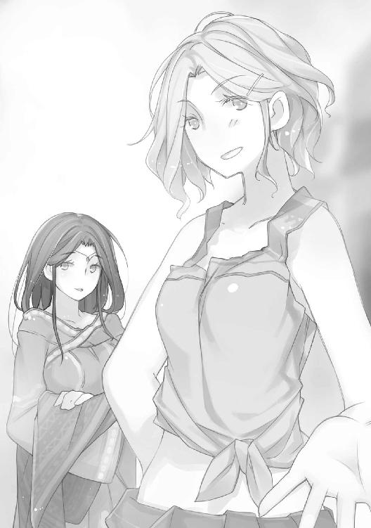
「なん......だよ」
うんざり顔のユーリを後目に、さんざん笑い、道行く人も振り返るほどだったのが、ようやく収まると、
「はぁぁ......ご、ごめんなさい。ヒースさん」
カイラシュが真顔でユーリに向き合う。
「オレのことは、ユーリでいいって、言ったはずだ」
「ああ、ユーリ。ちょっと挨拶がわりのいたずらが過ぎたかもだ。なんたって、閃光の獅子吼、巨大要塞墜としのユーライアだ、試してみたくもなるじゃないか」
「なんだって、それじゃあ」
ユーリのふたつ名を知っている。ユーリの表情が一瞬険しくなる。が、
「じゃあ正式に、だ。言うぜ。......ようこそ、我が独立ＢＲ第１１１中隊へ！」
かまわず、アビゲイルが言い放った。
３
「ここが......」
「ああそうだ。今日からここで暮らしてもらう。当然、あたしたちといっしょ、ってことだ。はははっ！」
浪速特市から車で約一時間の、ここは新神戸市。
ユーリたちを乗せた車が滑り込んでいくのは、その郊外に位置する大型複合レジャー地区だ。
ショッピングモール、スポーツセンター、スタジアム、ムービーシアターや劇場、果ては図書館やテーマパークまでが併設された、
「ここだけで、ちょっとした街って規模だな」
ニューポート・アイランドシティ。
車の窓から、次々と通り過ぎるビルを仰ぎ見てユーリが漏らす。
ある程度ゆったりと間隔を置いて作られた各施設は、移動のために「動く歩道」や、アビゲイルが「お猿の電車」と呼ぶちょっとしたローカル電車、それに自動操縦のＥＶが多数備えられている。
この施設のことはまえからユーリも知っていた。来たことはなかったが。
「なんでここに」
それほど、遊びのための施設、地区、といった印象が強かったからだ。
利用者は主にニュード耐性者に限られるとしても。
ようやく着いた地下駐車場は、一般用とは違う特殊なゲートをくぐった先にあった。
ただの駐車場でないことは、天井の高さでもわかる。
十メートルはあるだろうか。奥の壁は巨大な鉄の扉になっていて、その先にまだ何かがあることを示唆している。
「ここが、第１１１独立ＢＲ中隊の......」
「あたしたちは『マンティコア』って呼んでるけどな」
「マンティコア......」
「はい。その中隊本部であり、宿舎であり、格納庫、整備ハンガー、とにかくそういったもののすべてがここにあるんです」
アビゲイル、それにカイラシュが言い、ユーリはまたも驚く。
「何だって。こんなところにブラストの!!」
複合娯楽施設の真ん中に、ＢＲを多数擁する部隊が駐屯しているという。いや、駐屯というよりも、
（もろ、秘密基地って感じだぜ......）
小さいころに見た、アニメや特撮、とくにスーパーマリオネーションのものなどに、こんなふうに人目に付くレジャー施設の地下深く、秘密裡に建設された基地なんかがあったと思う。
まさかそれを地でいくとは。
「あー、えっと、こう、最初から説明してくれないか」
ユーリがつい言いたくなるのも無理はない。
だいたいが、四条重工本社での戦闘からこちら、わけのわからないことの連続なのだ。
そのうえまともな説明は何ひとつない。
（マンティコアだって？ ライオンの身体にコウモリの羽、サソリの尾をもつ幻獣じゃないか）
伝説によっては、人の顔を持つ、とも。
「ぁあ？ ユーリ、おまえが新しい契約でもって『配属』されたのが、あたしたちのチームってことだろ」
「わたくしたちも、知らされたのは今日なんです。急いで迎えに行ってくれ、って」
広い地下駐車場を歩きながらアビゲイルが、カイラシュも言う。
足音が、金属の壁に重く反響した。
「そこまではわかる。わかるが......」
（知らないのか。オレが違約金がわりにこの契約を強制されたってことを）
そしてその先も。
いつのまにか期待していたのかもしれない。
（そんなもん、か。じゃあ、あの女のことも......）
クユラの存在、正体、それもまたわからないまま、ということだ。赤いＢＲの男も。答えが得られるのでは、答えに近づくのでは、と。
「オレはいったい、このチームでなにを......」
そんなことをつぶやいて、頑丈な駐車場の自動スチールドアをくぐったときだ。そこから続く廊下を塞ぐように、人が立っていた。
「ぇ、っと」
思わず立ち止まると、
「へーえ、あんたね。今度入る新入りっていうのは！」
腕組みしながらこっちをにらむように見つめて来る少女。歳かっこうはユーリと同じくらいか。
「キミは」
「思ったより冴えないわねぇ。閃光の獅子吼、巨大要塞墜とし......ブラストを扱ったら、けっこういい線いってるって聞いたから、ちょっと期待してたのに、損しちゃった！」
言いたい放題の少女。
ふんっ、とかぶりを振ると、頭の高い位置で結んだ長い髪が、ふるんっ、と揺れ踊った。
髪は黒に近い栗色だし、顔も東洋人のそれだ。
つん、と尖った小さな鼻。キュッ、と結ばれた唇。気の強そうな、ややつり上がった大きな目も虹彩は茶色い。
（日本人か？）
ユーリが思ったのには、わけがある。
ユーリ自身、日本人の血が入っているからだ。
母方の祖母が日本人のクォーター。ただし、ユーリが物心ついたときにはもう、母からして姿を消していた。
「あのさ」
「な、な、なによ、やる気!? 言っておくけど、ブラストでかなわないからって、生身で来ようったって無駄よ！ 慧玲は少林寺だって極めてるんだから、ね！」
そう言うと、軽く片脚を上げ、どうやら少林寺拳法の型を取る少女。
「ユェリン？ 日本人じゃないのか」
「はぁ!? なんで日本人なのよ。慧玲はれっきとした台湾の出身なんだから、これ見てわからない？」
そういえば慧玲の姿。
身体にぴっちりしたチャイナ服だ。
「確かにオレはブラスト乗りだ。閃光の......なんてのはオレがつけたわけじゃないがな。だがなぜわかる？ まだおまえの前で、ブラストに乗って見せたわけでもなんでもないぜ」
ユーリが言うと慧玲はとたん、答えに窮したように口ごもりながらも、
「そ、それは！ なんとなく、っていうか......だ、だいだい、見ればわかるのよ！ もっとたくましくて、シブくて、いい感じの......」
「ようするに見た目、タイプじゃなかったってことだろ」
「あら。でもほんとうに関心がないのでしたら、こんなふうにわざわざ出ては来ませんよね。何だかんだ言っても、慧玲はユーリさんに興味津々、といったところなのでは？」
虚勢を張るが、アビゲイルとカイラシュに的確につっこまれて、
「な！ なに言ってるのよ。そ、そんなわけ！ あるわけ、ないって......え、えっと、ある、ない？ どっちよぉ！」
ますます墓穴を掘る慧玲。
みるみる顔が赤くなる。
「何でそんなにテンション高いんだよ。オレはただ......」
ユーリはむしろ頭を抱えるほうだ。
そうするうちにも、
「はいはい、わかりましたから、そこをどいてくださいね、慧玲。ユーリさんが廊下を通れません」
「あたしも通れねえよ。ったく、迎えに来たんじゃないのか。邪魔だから退いてろ」
カイラシュとアビゲイルが言ってくれる。
「な、なによ！ ......わ、わかったわよぉ！」
当然、慧玲はアビゲイルに腕をつかんで引き寄せられる。ところがユーリは、
「ちょっと待ってくれ」
「ぇ、なに？ ほぉらやっぱり、あんたのほうが慧玲に興味があるんじゃない！ 聞きたいことがあったら、答えてあげないこともないわよ！」
くるっと振り向くと得意げな慧玲。
「いや、そうじゃないんだ。......アビゲイル」
「アビーでいいって、ユーリ」
「じゃあアビー、その、さっきからオレはアビーにしても、カイラシュ」
「ではわたくしはカイラで」
「ありがとう。カイラ、それに慧玲も」
「慧玲のこと、いつ呼び捨てにしていいって言ったのよ！ ......いいわよ、慧玲で」
さまざまな反応ののち、
「で、なんなんだ、ユーリ」
「ああ。オレの勘違いかもしれないが、このチーム、マンティコアか、その一員だというアビー、カイラ、それに慧玲、三人しかまだ会っていないが、三人とも女だ。失礼、女性なんだが」
「言い直さなくてもけっこうですよ。そのとおり、わたくしもアビーも慧玲も、みな女ですから」
「ああ、うん。それで、ちょっと不思議に思ったんだ。しかも慧玲はブラスト乗りだっていうじゃないか」
「何よ、あたしがブラストに乗ってちゃ悪いわけ。あんたなんかより、ずっと優秀なパイロットだって証明して......」
「あたしもだ。あたしもブラスト乗りだよ。カイラもな」
「えっ、カイラもなのか。アビーはもしかして、って思ってたが。じゃあ三人ともＢＲパイロットで......」
ＢＲ中隊の一員だとしても、必ずしもパイロットとは限らない。しかし、
「男性は、男はいないのか、ということでしょうか？」
カイラシュはそう言うと、微笑んだ。
アビゲイルも笑って、
「そうだな。そこんところはじゃあ、ウチの中隊長......あたしはヘッドって呼んでるが、聞いてみたらどうだ」
「ヘッド......このチームの、中隊長か」
「それがいいと思います。いま、お連れしようと思っていたところですから」
カイラシュと顔を見合わせる。
「あんた！ 何考えてるか知らないけど、ヘッドって言ったら......むぐぐっ！」
さらに何か言おうとする慧玲を、アビゲイルが口を塞ぐ。カイラシュも、
「こちらです」
コンクリート打ちっぱなしの無機質な廊下を、先へ案内しようとした。
「ああ、うん。頼む」
（まぁ、ヘッドに会ってみないことには、詳しい話もないだろう）
続こうとするユーリ。
しかしそれを待たずに、
「どうした。何を騒いでいる」
背後から声がした。
振り返るユーリ。そこに立っていたのは、褐色の肌の女性士官だった。
アビゲイルたちと異なり、きっちりと軍服を身に着けている。
肌と鮮やかにコントラストを魅せる銀色の髪。鋭い眼差しはユーリを見つめて微動だにしない。
だがユーリが気づき、驚いたのはその声だった。
「あんた、は......」
４
ほとんど何の装飾もないその部屋が、中隊長室だった。
窓のない、剥き出しのコンクリートの壁。意外と低い天井が、地下室である圧迫感を強調する。
いま、この部屋にふたりだけ。
やはり味気ない、けれどやたらに大きなスチール製のデスクの向こうに、中隊長、シャフィーラ・アドゥル＝ンネナは腰を下ろしていた。
そのデスクを挟んで向かい合うユーリに、
「座ったらどうだ」
言うその声。ユーリは確信する。
「あんた......中隊長どの、って言ったらいいのかな、ここでは。とにかく、あのときのブラストのパイロットだったなんてな」
あのとき。
もちろん、四条重工本社での戦闘で、血の色のＢＲに追いつめられ、死をも意識せねばならなかったとき、だ。
突然のＭＬＲＳの連射。続いて現れたへヴィガードが、ユーリのクーガーにサワード・コングの砲口を突きつける。
『......聞こえるか、応答しろ』
ＨＭＤのイヤホン越しに響く、低く、冷たい声。
しかしなぜかひどく落ち着く。
心地よく、ずっと聞いていたいと思った。
返事をしようと声を絞り出すよりまえに、ユーリは底なしの白い闇に引き込まれていった。
「シャフィーラでいい。ここではみんなファーストネームで呼び合う」
シャフィーラはまっすぐにユーリを見つめながら言った。
褐色の肌に、驚くほど澄んだ青い瞳の虹彩が美しい。吸い込んでしまいそうな......そんな陳腐な形容を、見る者は否定できない。
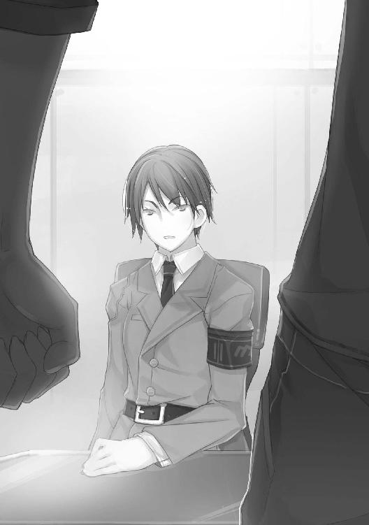
「じゃあ、シャフィーラ。オレの言ってることは間違ってないはずだ。あのとき、四条の本社に現れたへヴィガードはあんたのブラストだな」
ユーリもまた目を逸らさず、瞳の力に負けずに返した。
「そうだ」
あっさりと認めるシャフィーラ。続けて、
「わたしだけではない。カイラ、アビー、慧玲もだ」
「何？ じゃあ、この部隊の全員がブラストで」
確かに装備からして、ＭＬＲＳを放ったのはシャフィーラのへヴィガードではありえなかった。
「カイラだ。中距離攻撃で面を制圧する。慧玲もな。そのあと、わたしとアビーで突入する」
「ああ、ブラスト戦術の定石ってやつだな」
（だがあれほど鮮やかなのは、なかなかない）
それだけで、シャフィーラたちの実力、戦力はもはや疑いようのないものと言っていい。
「何が聞きたい」
「あ？」
「聞きたいことがあったのだろう。いい機会だ。全部聞いておくといい」
そんなシャフィーラの言葉はユーリにとっても渡りに船だ。
「なら、出し惜しみなしで頼むぜ。まず、あんたらは何者だ。なぜこんなチームがある。どうしてオレはここへ配属の契約になった？」
ユーリは言いながら、どんどん違和感が広がっていくのをおぼえた。
（違う。そんなことじゃない。いや、それも知りたいが、オレは......）
「......クユラのことか」
ユーリよりまえに、シャフィーラが口にした。その名を。
「知ってるのか！ あの女......クユラを！」
つい大声になる。
「やはり、見たのだな。あれを」
逆にシャフィーラは、声を落とした。
「あれは、何なんだ。教えてくれ！ 生きてるのか。生きているとしたら、眠っているのか、それとももっと、別の状態なのか。なぜあんな姿でカプセルに入ってる。オレたちは、オレたちのミッションが、あれを四条に運び入れるために利用されていたのか!?」
一気に、あふれ出た。
質問、疑問を浴びせかけるユーリに、しかしシャフィーラは、
「わたしも、知らない」
「は、ぁ!?」
「ユーリ、いまおまえが問いかけたことの大半、いや、全部か、わたしは知らない。知る立場にもない。あれがその後、どうなったのかも、な」
「じゃあなんで！ クユラの名前を知ってたんだ！ なぜあの場にこの部隊が介入して、オレを助けた......」
（いや、待て。もしかして、オレを助けたのじゃないのか。オレが助かったのは、たまたまで）
ユーリの考えが読めるのか、シャフィーラはうなずく。
「そうだ。わたしたちが契約したミッションは、あの場に進出して、四条重工本社、及びその付属物に危害を加えるテロ部隊を排除すること、だ」
「契約したミッション。じゃあ、それ以外は」
「知らない」
「ならなぜ、クユラの名を」
「あの赤いブラストと、ユーリ、おまえの無線を傍受した。内容からして、どうやら中破したコンテナと、その積載物に関するものだとわかった。積荷に関しても知らされてはいない。が、おそらくは、生身の人間。それも女......少女だと、な」
「なん、だ......」
ユーリは愕然とした。拍子抜けした、が正しいかもしれない。
シャフィーラもまた、何も知らなかった。
「がっかり、か、残念。そんなところのようだな」
「ぁあ、そうだ。だが、もういい。聞いたオレが悪かったんだ」
「なぜだ。なぜ諦める」
「なぜって」
「満足いく答えが得られず失望したか。聞きさえすれば、謎がすらすら解けるとでも思ったか」
「そうじゃない。そこまでは......だけど」
「知ろうとは思わないのか。ともに、謎を解こう、とは」
「......何？」
シャフィーラの口から出た意外な言葉に、ユーリは驚きを隠せない。
（謎を、解く......ともに、だと）
それに応えるように、
「もちろん、我が中隊はミステリーごっこをするためにあるわけではない」
シャフィーラはふと視線を外すと、どこか自嘲気味に言った。
「知りたい、のはわたしも同じ。この中隊の誰もが同じ、ということだ。知る権利、などとしたり顔で主張する気はないが、誰しも知りたいことはある。わからないまま、誰かに利用されるのは気分のいいものではない......まして、見てしまったのであれば、な」
再びユーリを見つめるシャフィーラのディープブルーの瞳。その艶やかな唇は、かすかに笑みの形をしていた。
「いいのか。この部隊、チームは」
「ああ、そうだな、最初の質問に戻ろうか。我が中隊のパイロットは、おまえももう会った三人、カイラシュ、アビゲイル、洪慧玲、それにわたしだ」
ユーリも、ひとまずシャフィーラに合わせる。そっちも聞いておきたいことに変わりはない。
「このチームは、なぜ、あるんだ。何をするために」
「表向きは、マグメルからの要請と契約によって成り立っている。私的な軍事組織ということだ。マグメルからミッションを受注し、達成することで報酬を得る」
「そうか、なら理屈は合う」
「理屈は、な。マグメルは傭兵の募集、管理、編制などを行い、依頼先とのマッチングをビジネスとしている。我々はいわば、マグメルが斡旋するミッションをグロス受けすることのできるチームとしての傭兵単位ということだ」
「表向きは、か」
「ああ、表向きはな。おまえは考えているはずだ。これほどの設備、秘匿されたベース、ブラストなどの機械類、重火器類、まだまだおまえが目にしていないものもある。我がチームの規模は、ざっと一個旅団に匹敵するだろう」
「一個旅団！ たった四人のブラストパイロットで」
「五人だ。ユーリ、おまえを入れて、な。わかるだろう。この時代、エース級のボーダーを何人も有していることの意味、価値が」
シャフィーラの言葉に、ユーリは何とも言えない違和感のようなものをおぼえる。
（チームだと。オレを入れて五人の）
これまで、ずっとひとりの傭兵としてやって来た。
傭兵は誰もが基本、一匹狼だ。
私的なパートナーとしてデュオ、トリオなどを組むことはあるし、マグメルもそれらを加味したマッチングをしてくれる場合もある。
だが往々にしてそれは、一時の夢に終わる。
実際の戦場の厳しさが、理想を叩きのめすからだ。
迫り来る危機。
砲弾、ミサイル、空襲、敵のＢＲ、拠点。それらを前に、単なる友情や仲間意識だけで立ち向かえるほど状況は甘くない。
むしろそれらが邪魔になることもある。
逆に、相手を信頼して裏切られることだって、ユーリは何度も見て来た。
持ち場を放棄して逃げる者。
賞金目当てや功名心に走って勝手な行動を取り、自滅する者。その者だけならいいが、たいていはパートナーも被害をこうむる。
当たりが悪ければ、死ぬ。
ミッションに参加している全員がダメージを受けることもある。
それどころか、昨日までのバディーが次の戦闘では敵となっていることだって少なくない。
バディーとして、チームとして密接であればあるほど、手の内を曝し、タイミングや戦術思考までも知られているから、敵に回ったときは最悪の相手となる。
「考えているか。傭兵に固定チームは似合わない、と」
またもシャフィーラ。
「あんたは......シャフィーラは、オレの頭の中でも読める才能があるのか。まぁいい。いまのところ、オレの経験がそう言ってるんでね。いや、契約には従う。一度決めたことだ。生体サインもした。逆らうつもりはない」
ユーリが返す。
シャフィーラはそんな答えも予期していたように、
「自分しか信じない。傭兵の心得、初歩の初歩だな。それでいい。それでいいが......」
「なんだ」
「そこまでだ。パートナーを信頼し、チームを信頼できなければ、傭兵としてはそこまでということだ。むろん、それがおまえの考える傭兵ならば、そこに異議を差し挟む気はない」
「何が言いたいんだ」
「歎きのライオン......」
「何？」
「知っているか。歎きのライオンを」
「歎きの......いや」
ユーリが言うと、シャフィーラは初めて視線を外した。どこか遠くを見る表情になる。
５
「昔のことだ。フランス革命のころだな」
「そりゃまたずいぶん昔だな......ざっと、三百年はまえだぜ」
「ああ。このころフランス軍の主力と言えばスイス傭兵だった。もともとはハプスブルク家の神聖ローマ帝国からスイスの原初三州が独立を果たす原動力となった現地の戦力だ。その精強ぶりが評判となると、やがて各国から請われて戦いを請け負う兵士、傭兵となっていった。スイスは国土の大半が険しい山で、農業も振るわない。傭兵は国家の重要な輸出産業となったわけだ」
シャフィーラの話は興味深い。
ことに、傭兵、と聞いて、ユーリの関心は高まる。
しかし、なぜそうした話をするのか。まさか傭兵のルーツを紐解き、聞かせたいわけではあるまい。まして、
（歎きの、ライオン......だと）
ライオン、獅子。ユーリのパーソナルマークとも共通する。
閃光の獅子吼、のふたつ名とも。
何も見ずに、シャフィーラは続けた。
「そうしていわば、ヨーロッパ最強の傭兵団となったスイス傭兵だが、十八世紀のフランス革命でもフランス軍の一部だった。知っているだろう、フランス革命の中身は」
「ああ。そのくらいはな。王様がギロチンで処刑されたんだっけか」
「そうだ。そしてスイス傭兵は、王を守る衛兵でもあった。西暦一七九二年八月、王とその一家を捕らえようとする群衆が、パリのチュイルリー宮殿に殺到した。守るスイス傭兵九百五十人は果敢に反撃したが、最終的に二万を超える群衆軍に呑み込まれ、ほとんどが戦死、虐殺された。戦いの直前、フランス衛兵隊は群衆側へと寝返ったし、肝心の王と一家は脱出。貴族の子弟たちはこっそり逃げ出していたのに、だ」
衝撃的な話だった。
「そいつは......ショッキングだな。フランス人どうしの内戦で、当のフランス人部隊が王様を守らずに逃げ出したり裏切ったりしたってのに」
なぜ、スイス人傭兵は逃げ出さなかったのだろう。
契約のためか。契約とはなんだ。金か、名誉か。信用、なのか。
「その後、四半世紀ほども経った一八一九年、このスイス人傭兵の悲劇を悼んで造られたのが、歎きのライオンの像だ。壁に掘り刻まれたライオンは、背中に矢を受け、倒れ伏している。ライオンの側や足元、身体の下には盾や鑓がある。戦いの末、盾や鑓の上へ倒れ込んだのか、それとも鑓や盾を最後まで抱くように離さなかったのか......」
シャフィーラの目が再びユーリを見つめる。
トップライトで陰になったうえ、肌の色も手伝って、その瞳だけがひどく印象的に浮かび上がって見えた。
「......なぜ、そんな話をする。オレに」
ユーリが問うと、
「さあ。思い出したのかもしれない」
「思い出した、だって」
「おまえを見ているうちに、な。考えてみることだ。傭兵とは何か。ユーリ、おまえにとっての傭兵とは」
「オレにとっての傭兵、そんなもんはとっくに」
「歎きのライオン......歎きの獅子となるか。あるいはそうではない何かに......」
シャフィーラの瞳が海のように青く、潤んでいた。
ユーリはまだ混乱しながらも尋ねる。
「そうではないってのは何だ。逆に聞くぜ。じゃあこのチームは違うってのか。歎きのライオンとは」
それに対するシャフィーラの答えは、
「わからないな。......ただひとつだけ言えるとしたら、わたしは、我々は、ただの傭兵で終わる気はない。だからこの、誰が真のスポンサーかもわからない、エリート傭兵チームのテストケース、というプロジェクトにもあえて乗りかかっている。その先を決めるのはあくまでも自分自身、わたし自身だからだ」
「その先を......自分自身で」
思いもかけない考えだった。
傭兵稼業に未来などない。
正式な軍でなければ昇進もないし、社会的な保障や、ケアなどもあるはずがない。つまりは将来がない。
だから賞金という、唯一確かなものに価値を託す。
それを勝ち取るのは、自分自身の技術だ。
なのに、
（傭兵としての高み、次のレベル、そんなものがあるっていうのか。目指す、だと？ バカバカしい。どぶさらいに高みも超越もあるかって......）
そもそも耐性者には未来がない。
本質的な意味での希望も、自由もまたほど遠い。
この世界で、耐性者が甘んじなければならない境遇。
結局、ニュード関連の事業・企業にしか実質、仕事はない。
傭兵、ニュード採掘工から、ブラスト開発やニュードエネルギープラントのエリート技師まで。象徴的な高低差こそあるものの、どれもニュード関連に限られている。
居住地も制限を受け、社会的差別もまた根強い。
「だからこそ、クユラとの再会もありえる」
シャフィーラのひと言が、ユーリの胸を刺した。
「何、だって......再会、だと」
否定で凝り固まっていた脳内を、あざやかに一蹴された。見透かされ、軽々と切り札のストレートを放たれた。
「保障はない。どれほど信頼し、信頼で結ばれ、どれほどの戦果をあげようと、それはただのミッションと達成度の結果でしかないかもしれない。だがな」
青い瞳が、ゆらめいた。
「それなしには、真理には近づけない」
「真理......だと」
「笑うか。この世に真理など、まして傭兵稼業に真理などないか。たしかに、たどり着けないかもしれない。どれほどを注ぎ込み、擲っても真理には到達することはないかもしれない。けれど、一メートルでも、一センチでも、一分でも一秒でも、近づくことで見えてくるものがある。逆に言えば、近づかなくては決して見えない。知ることも理解することもできないだろう、そういうことだ」
シャフィーラの話は終わった。
それ以上、もう語ることはない。瞳の青がそう言っていた。
「そう、か」
ユーリは自分でも戸惑うほど、ショックを受けていた。
これほどのことを真顔で、それも真正面から言われたことはない。
傭兵に未来などない。
現在、いまがあるだけだ。
それを厳しく自身に課していたし、それしかないという思いだった。
ニュード耐性者は子孫を残すこともまた、ごく稀である。
だがどこか、言い訳めいた臭いを感じていなかったわけではない。
それをここまであざやかに逆を衝かれると、それはもう、
（反論する気にもならないぜ）
気持ちは不思議とすっきりとシンプルに紡がれて行く。確実にユーリは、この部屋に入って来たときよりも、迷いを消し去っていた。
唇には、皮肉とは違う笑みが浮かぶ。
「なぁ、最後にひとつ、聞いていいか」
「なんだ」
シャフィーラが問う。
ユーリは、いまだから聞けるような気がした。
「このチーム、なんで男はオレだけなんだ？」
１
煌々と照明の灯る地下駐車場。しかしどこか暗さは残る。
その車寄せに一台の高級車がするすると横付けされる。
大型ホテルのような広い車寄せには、ひと気がほとんどない。なぜならここは、Ｈ・Ｖケミカル本社の役員専用駐車場で、一般車は入ることもできない。
そのうえ、いま入って来たのは取締役ＣＥＯの、ザヘル・ブロンシュティン・ジュガシヴィリの車だった。
人は、いないわけではない。
ビル側に四人、車道側に四人、見えているだけで八人もの私設ＳＰがいる。情報端末にもなっているミラーグラスと、襟元に取り付けられた指向性超小型マイクでつねにやり取りを交わしていた。
その上着の下には、確実に拳銃以上のウェポンが忍ばされているはずだが、これまで幸いにもそれがベールを脱ぐことはなかった。
運転手も当然、それももっとも優秀なＳＰだ。
やがて、エレベーターからして防弾扉となっている、いくつかの扉が開き、ザヘルその人が姿を現した。
ザヘルの容貌は、異様というほかない。
驚くほど長身で、呆れるほどに痩身である。
噂には、水と栄養カプセル以外のものを摂らないというその身体は、予想されるよりはずっと肌つやもよい。
最小限の筋肉以外、すべての脂肪層がごっそり落ちて、皮膚がそのまま骨に張り付いたようでもある。
とくに顔は、腫瘍を取り除いたあとの空洞をメカで塞いでおり、顔半分が金属で覆われているという異相だ。
現在の技術ならば、顔面の形成手術なども容易であるのに、あえてそのようにしているのではと、ときに批判の対象となるともいう。
しかも武器が仕込まれているのでは、と噂もある顔半分の金属部分を、癖のように手のひらで撫でるとき、生身のほうのもう片方の顔はなんともいえない満足そうな表情をするのだとか。
そんなだから、五十代半ばという壮年といっていい年齢は、ザヘルの場合、記号程度にしか機能しないようだ。
若く見えるとも、老けて見える、とも違う。人間離れしている、のがいちばん正鵠を得ていると言えようか。
車のドアが開かれる。
「......」
周囲を見張るＳＰの間を抜け、無言で乗り込むザヘル。開いたドアの厚さから、この車の耐弾性能が推測できる。
歩兵携行用ロケットランチャーの直撃にも耐えるという噂は、あながちウソではないようだ。
残りのＳＰが後続の車に分乗する。
それを確認したかのようにザヘルを乗せた車が発進する。
今どきの流行りか、リムジンなどではなくＳＵＶを豪華に仕立て直した特別車は、背の高い巨体をするすると音もなく走らせる。
地下を出ると、待機していた別の車が前を走る周到さだ。もちろんそちらにもＳＰが乗っている。
車体に特別な武器が装備されているのだという。
これほどの厳重な警備。
かつての大国の国家予算を上回る年間売り上げを誇る、バイオケミカルの世界的最大手企業の総帥といえど、どこか不自然さが伴う。
しかし、本体のバイオケミカル事業以外にも、タコの足のように多方面に伸ばした企業体のコングロマリットが、もはや毛細血管のような広がりを見せて、防衛産業にも多く食い込んでいるとすれば、テロを警戒するのも無理からぬことかもしれない。
しかしそれ以上に、ザヘルには身辺を警戒し、それをアピールする理由があった。
「......居場所は、わかったのですか」
灯りのない車内、ザヘルがつぶやくように言う。
「いや、まだ」
答えるのは、隣のシートに身を沈めた男。
まだ若い。少年と言ってもいい。
銀色の髪。紺に灰色を溶かしたような瞳の色。ユーリが四条重工本社で戦った、あの血の色のＢＲのパイロットだ。
「らしくないですね、リオン。襲撃にも失敗した。ターゲットもまだ回収できていない、とは。あなたらしくない」
倍どころか三倍は歳の違いそうな少年に、ザヘルはていねいな言葉使いで話す。誰と話すときも同じなのだ。
「確かに、ターゲットは未回収だ。しかし、興味深い事実を発見した。追跡した結果、さらに興味をそそられるものも」
逆にリオンは、いつもと同じ言葉使いを変えない。
ザヘルもそこに関心はないようだ。
「ほお。どういうことですか」
「特定のＢＲチームが存在する。傭兵でも固定したチームはあるが、それらとはさまざまな意味でレベルが異なる。マグメルが深く関わっているとも考えられる」
「マグメルが。それはおもしろいですね。あのマグメルが価値を認めるとすると......」
「例の機関とマグメル、公には無関係でも、どうやら秘密裡に繋がりを持っているとなれば、マグメルにとって例の部隊は、格好のテストベッドとなりうる......」
「その確証は、すでにつかんでいるのですか」
「いや、あえて言うなら......わたしのカン、とでも。ただし、根拠のない話ではない。なぜなら、同じものが流れている。わたしと......ターゲットには」
「カン、ですか。おもしろい。とてもおもしろいですよ」
ザヘルが初めて笑った。
並び合っていると言っても、広い車内はふたりのシートの間に三十センチ近い肘掛けとコンソールのスペースを設けている。
また、運転席との間は、分厚い防弾ガラスで仕切られていた。
毒ガスやＮＰＣ兵器にも対応できるよう、完全な気密性を保ち、いざというときは三十時間酸素システムを持続することもできる。
ザヘルは手を伸ばすと、コンソールのスイッチを操作する。ザヘルの側のウインドウが降りて、全開になった。
車内に入り込んで来た風が、ザヘルとリオンの間で逆巻く。
それよりも、音のほうが顕著だ。ちょうど繁華街を走っていたこともあり、街の雑踏がいっせいに流れ込んで来る。
これほどにセキュリティーを厳重にしながら窓を開けるとは、まったく逆行する行為だ。危険を呼び込んでいる。
だがそれほどに、ザヘルの感情が動いたのだとも言える。
「ひとつ問題が」
「言ってください」
リオンの言葉に、ザヘル。
「回収ミッション中に偶然、流れ弾が至近弾となってコンテナ車が破損。中の積み荷にも被害があった」
「被害とは」
「積荷に物理的被害があったわけではない。ただ、着弾のショックでカプセルの一部にひびが入ったか、循環システムのパイプかチューブに亀裂が生じたのか......」
「カプセルの気密性が損なわれた、そういうことですか」
「その結果、四条重工本社を警護していたブラストのパイロットが、ターゲットと接触した」
「何、ですって」
ザヘルが初めて顔をリオンに向けた。
ちょうど壁一面にネオンを光らせたビルの側を通り過ぎるところだった。
色とりどりのネオンがザヘルのメタルの半面に反射して、異様な面相がさらに異様に歪曲される。
「物理的接触ではない。どうやら封入ガスの流出によってターゲットが覚醒し、例のパイロットを『見た』。パイロットもターゲットを見た。そうして何らかの反応があった、と」
リオンの報告をザヘルは聞いていたが、表情はもはや動かない。
しばらく間があった。
街の騒音も消え、郊外を走る車のロードノイズと風だけが窓から入って来る。ザヘルはもう一度コンソールを操作して窓を閉めると、
「もう一度......」
「はい」
「もう一度、試みるほかありません。ターゲットの受けたショックがどれほどのものか、それによって初期状態がどれほど損なわれたのか。確かめるべくはターゲットの......クユラのコンディションです」
そこまで言うと、ザヘルは言葉を切った。クユラ、と初めて口に出し、まるでその存在を噛みしめているようでもある。
やがて、
「彼女は......クユラは必要です。やがて来る世界。我らが創り上げる世界の、その夢のために彼女は必要なのです」
「わかっている。取り戻す。必ずクユラを。クユラはわたしにとっても......」
リオンもまた、言葉を途切れさせる。
その先の、リオンらしくない焦りや後悔を見て取ったのか、ザヘルが手を伸ばす。
「リオン、あなたも、私にとって必要な存在ですよ」
いたわるように、コンソールを超え、リオンの手に触れるとそのまま包み込むように握った。
ウインドウが閉じ、密閉された車内は音もなく進む。
やがて吐息が呼吸音に混じり始める。
２
「......ここが、オレの部屋」
ほとんど何もない、ガランと殺風景な部屋を見回してユーリはつぶやく。
シャフィーラの中隊長室がそうだったように、天井、壁、床ともにコンクリートむき出しの無機質な部屋だ。
天井には鋼材のフレームが組まれて、そこから照明が下がる。
六十平米ほどはあるだろうか。
そこそこ広いのが、よけいにうすら寒さを強調する。
壁際にスチール製の机と椅子、それにやはりスチールパイプのシングルベッドが備え付けられていた。
「まぁ、問題ないぜ」
唯一の荷物のバックパックを足元に放り出すように落とすと、ユーリは靴のままベッドに寝転がる。
ほぼ真上に、ＬＥＤ電球が揺れていた。
無意識に見つめていると、シャフィーラの顔が浮かんでくる。
『このチーム、なんで男はオレだけなんだ？』
問うたユーリに対して、
『わからん。聞いていない』
シャフィーラはそっけなく答える。が、しばらくして、
『一種の実験、かもしれないな』
『実験だって』
『ああ。このマンティコア自体が、ひとつの実験のようなものだ。我々はモルモットなんだよ』
『モルモット......誰の』
『さあな。そういうのを研究したがる連中は多いんじゃないのか。学者も技術者も、政治家もな』
女ばかりのＢＲ中隊に、男はユーリひとり。少なくとも、
「女だけのブラストチームを実験しようとしてた、んじゃないってことかよ」
（それともそっちの実験は終わったか）
横になると、とたん眠気がこみ上げてくる。
腕時計を見ると、すっかり夜と言える時間だ。
この時間ならば、もう呼び出されるようなこともあるまい。夕食がまだだが、
「このまま......」
寝てしまってもいいか。そう思って目を閉じる。
すぐに眠りに引き込まれていくのは、ここ数日の疲労が自分で思っていた以上のものだったことを物語る。
とくに今日の、契約違反とその違約金等通知から、新たな契約、この部隊へ配属までの流れと来たら。
（一週間分のアップダウンとドタバタをいっぺんに経験したみたいだぜ......）
それも今日から始まるのだ。
ユーリの呼吸がたちまち寝息に変わる、その刹那だった。
ガチャ、と金属のドアが開けられる。
「!!」
跳ね起きるユーリ。
こんなとき、なんだかんだ言って傭兵の基礎ができているのはありがたい。頭はまだ眠っていても、物音とともに身体が反応する。
が、ドカドカ部屋へ入って来たのは、
「よぉ！ いるんだろユーリ、入るぞ！」
「はぁ!? アビー？」
無意識に枕の下に突っ込んだユーリの手は、何もつかめずにシーツを掻いた。
（ちっ、オレってヤツは......）
舌打ちしたくなる。
が、すぐに騒々しいアビゲイルにかき消されてしまう。
「冷たいじゃないかユーリ。入隊して早々、もうおねんねか？ それとも何か、あたしら美女にあてられて、さっそくシコシコしようって魂胆か？ ァッハハハ！」
さっそく強烈な下ネタのパンチだ。
そのうえ、
「何で慧玲まで！ ちょ、っと、離してってば！」
慧玲までが、アビゲイルに連れて来られていた。
あたしたち、と複数形だったのはそのせいだ。
「おいおい、シコシコって何だ！ シコシコしていいのは麺類だけだってーの！」
ユーリは閉口しながら、
「だいたい何でここにいる。勝手にひとの部屋に入って来るなよ。どういうことだ。鍵もないのか、ここの部屋は」
言うと、
「鍵なんて、シャフィーラの中隊長室くらいしかないさ。それとも、ここが上品なホテルの部屋でないのが残念だ、ってお坊ちゃんかい、巨大要塞墜としは。傭兵の宿舎の部屋に鍵があるなんて、あたしは聞いたことがないね」
「慧玲は、自分で鍵、つけてるけどね！ でもおまえはダメ！ 新入りなんだから、勝手に部屋をカスタマイズとかしたら、ＮＧよ、ＮＧ！」
たちまちふたりのツッコミ。
慧玲など、自分は良くて、ユーリはＮＧなどと勝手もいいところだし、それがチームの規定とも思えないが、言われてみればふたりの言葉には一理ある。
傭兵のキャンプや宿舎に鍵があったためしなどない。
シングル、つまり一人部屋なだけで、一流ホテルのスイートを引き当てたような異例の事態だ。
二人部屋はおろか、六人、十人、二十人部屋もざら。ベッドはひとつをふたり交代で使う、なんていうのも珍しくないのだ。
「わかったわかった。で、何の用だ」
観念してユーリが言う。
とにかくふたりの用事に応えて、とっとと横になりたい。
「うん？ 決まってるだろ？ 新入りが来たんだ。先輩としちゃあやることはひとつってな、慧玲」
「はぁ？ なんで慧玲がつきあわなくちゃならないのよ！ でもまぁ、落ち着いたら新入りは改めて先輩に挨拶に来るものよね。まったく、なってないわね！」
「つまり、どういうことだよ。まさか、オレの......」
「そのまさかさ！ 歓迎会だ！ 一杯行くぞ新入り。十秒で支度しろよ！」
「あんたの奢りなら、しかたない、行ってあげるわ！ 慧玲はフレンチ希望よ！ なんなら、イタリアンでがまんしてあげる！」
なんのことはない。ユーリをだしに、騒ごうというのだ。
無理に引っ張り出されたはずの慧玲も、なぜかその気になっている。
それもかなり。
「オレの奢りとかどういう......。先輩の奢りだろ、ふつう！」
「あー？ 何か言ったか」
「ほら、早くなさい！ グズね！」
奢りが決定で、なおかつさんざんな物言い、言われ方だ。
「あのな、言っておくけどな。オレは十六で未成年だ。勝手に呑ませるな。そっちの、慧玲もそうなんじゃないのかよ」
別に順法精神からではない。ほとんど形骸化した旧時代の法律を盾に、この場を逃げようとしただけだ。だが、
「そんなの、かまうもんかよ！ なぁ、慧玲！」
「そうよ、だいたいこのチームで、成人なんてカイラしかいないんだから」
「ああそうかい。ふぅ......って、え？」
もはや応じるしかない、と決めたユーリは、ベッドから身を起こしながら気づく。
「じゃあ、シャフィーラも......ヘッドも未成年だっていうのか」
「そうさ。鼻も恥じらう十九歳、ってね。これ、日本のことわざだろ？ うまく使えただろ、あたし！」
「そっちの鼻じゃなくて、花よ！ フラワー！ もお！ そんなのどうでもいいから、行くわよ、早く！」
「おい、ちょっ......！ 引っ張るな、っての！」
「面倒だね、ぃよっ！ っと！」
「のわっ！」
いきなりアビゲイルにベルトをつかまれた、と思ったら、肩に担ぎ上げられていた。
ユーリを軽々と肩に担ぎながら、
「さぁー、朝まで飲み明かすよ！ ハハハハッ！」
「美容に悪いから、慧玲は日付が変わるまえに帰るけどね！」
笑うアビゲイル。早くも手にしたスマート端末で、店の予約をしているらしい慧玲。
「お、おい！ だから未成年は飲むなって、の......うぁあ！」
地下の廊下は天井が低い。
結局アビゲイルに横抱きにされたまま搬送されるようにユーリは運ばれて、テーマパークに併設されたドリーミーなフレンチレストランへ。
「わかったから、もうオレを降ろせ！」
「えっ！ Ｗｅｂでさっき予約したはずよ。席がない？ どうして！」
ところがどうやら慧玲がスマート端末の操作をミスしたらしく、フレンチはあえなく惨敗。
結果。
「何よ！ 何なの、この焼き鳥って！ ......けど、おいしいかも。あ、こっち、マンゴージュースね！」
「ハッハハハッ！ 飲め飲め！ 今日はフリードリンクだ！ こういうの、日本じゃBreak All! て言うんだろ！」
「それを言うなら無礼講だろ！ てか、なんでノンアルコールジュースしか飲んでないのに、そんなにハイなんだ！ 顔も赤いし、おかしいだろ！ ......うぐぐ！」
五時間もの耐久居酒屋飲み（しかもずっと全員ジュース）になった。
「アハハ！ ハッハハハハ！」
「ちょっと、聞いてる！ ほら、慧玲のグラスが空になってるわよ、新人！ 両手で注ぎなさいよね！」
「はいはい......まだかよ」
ようやくお開きになったと思うと、
「ハハハハ......グゥ～、グォ～！」
「キリキリキリキリ、キリキリキリ......！」
「なんでオレの部屋で寝るんだよ！ オレのベッド、ふたりでもう一杯じゃねえか！ オレはどこで寝るんだよ。てか、イビキと歯ぎしり、どうにかしろぉおお！」
「なかなかいい、みたいですね」
「......ああ」
剥き出しのＬＥＤ照明が作る陰影の強い室内は、シャフィーラの中隊長室だ。
まだ仕事が終わらないのか、デスクについたままのシャフィーラ。その机の上に軽く腰を掛け、見下ろすのはカイラシュだ。
カイラシュが手に持つグラスには琥珀色の液体が満たされている。シャフィーラのデスクの上にあるのは、マグカップのコーヒーだ。
氷も、水やソーダも入れないストレート。
カイラシュはグラスの中の液体を飲み干す。
「ぅんっ......このアッサムはまだ少し若いみたいですね。渋みがあります。嫌いではありませんけれど」
なんのことはない、アッサムティーだ。宗教上の理由から、成人だがカイラシュも酒は飲まない。
「あいつ......ユーリのことか」
シャフィーラがつぶやく。視線は、目の前のモニターに注がれたままだ。
「ええ。シャフィーラもそう思っているの、わかっていました。さっそくアビーや慧玲のいい刺激になっているようですし」
「アビーたちには......まぁ、いいおもちゃができたというところだな」
シャフィーラの口の端に、かすかな笑みが宿る。それを逃したくない、というように、カイラシュが手を伸ばし、シャフィーラの頬をなでる。
そんなふうにされても、シャフィーラはさらに表情を変えたりはしない。振り払う、こともない。
「おもちゃ、なのですね。それもいいかも。でもいつ、おもちゃから変わらないとも限りません。なにしろ、男の子ですから」
いかにも楽しい、というふうにカイラシュが笑う。シャフィーラの頬をなでる手が、指で微妙に唇に触れてくる。
「男の子......男、ということは、わたしたちは女、か」
「もちろん、そうです」
「女であることなど、ずいぶん忘れてしまっていたような気がする。ここにいて、こんな仕事をしていれば、それは当然なのかもしれないが」
シャフィーラの言葉には自嘲気味の空気がある。
カイラシュの指がその唇をなぞって、
「あら。シャフィーラが女で、わたくしも女であることは、いつだってお互いによく思い知っていることではないかしら」
いたずらっぽく言うと、
「そういうことではない。......同質の者どうし、どれほど交わろうと何かが変わるわけではない」
シャフィーラはそう言って、カイラシュの手に自らの手を重ねる。
「むなしい、のですか。これまでのことも？」
「そうではない。同質ならばその分、純粋さは保つことができる。何度も繰り返すうちに、質的な向上も、な」
「でも、いつも同じではたしかに飽きてしまう。わたくしもシャフィーラの古女房のようになってしまっては残念ですもの」
「だから、そうではないと言っている」
シャフィーラの口調に、かすかに怒気が混ざる。
それもまた計算ずみ、とばかり、カイラシュはシャフィーラの頬から顎のラインに手をやり、顔を仰向かせる。
自分のほうへ向けると、
「ごめんなさい。......やっぱり、ニュードの新種、新しい耐性者、ということになるのかしら」
これまでとは口調も、声も違った言葉で言った。
「......わからない。どこまでが実験で、どこからが実践なのか。そもそもわたしたちは、どう位置付けられ、なにを期待され、なんの諦めの対象なのか、すらもな」
「そこまで......そうね。それが傭兵。どこまでもただのコマ。切り捨てて、失っても、いつでも補充できる。そんな、取り替え可能の兵隊」
「さあな。これまではそうだった。これからも、そうなのかもしれない。あいつが、ユーリがそれを......いや」
そこまで言うと、シャフィーラは言葉を切った。
まるで、それ以上は言うべきではない、そう己に課しているふうに。
そんなシャフィーラに、カイラシュは机から降りると床に膝をつき、シャフィーラの目線に顔を合わせる。
「そう。あなたらしいですね、シャフィーラ。職務に自分をすっぽり押し込めて、それ以上は考えない。まるで、そのオリジナルの軍服をいつも身にまとうことで、見る人への印象を規定してしまっている。それが自分自身も縛っているのに、ううん、望んでそうしている」
「それが軍人だ。傭兵もまた軍人。軍人は任務のことだけを考えればいい。それ以上の、大きな戦略などを考えても無駄だ」
「でも正規軍ではありません。契約によって戦う私兵よ。ワッサール条約で、正規軍の兵士に準じる身分は保障されているけれど」
「十分だ。ミッション中は目の前の戦いにだけ集中すればいい。わたしはわたしと、わたしの中隊を守る」
「守る、だけ？」
「守るだけだ。ただし、敵を倒すことによって、な。わたしは......わたしの身体はそのためにある」
シャフィーラの答えにカイラシュは小さく微笑む。
けれどその表情は、どこか悲しげだ。
予想していた答え。予想どおりの、予想を一歩もはみ出していない解答だ。いつもの模範解答。そしていつも繰り返される問い。
「傭兵は......」
シャフィーラが自分から口を開いた。
「自由だ、などと言う者もいる。マグメルの斡旋するミッションに組み込まれ、気ままに戦い、報酬を得る。ミッションが終われば解散。組んだ同僚と二度と会うこともない。ミッションに失敗しようと、報酬が減るというだけ。......自分の身の安全にも関わるがな」
「コンビやチームを組んで、ずっと戦う人だって」
「いずれ、ひとりが欠け、またひとりが......補充してももとのようには機能しない。一年も経てば、すっかりメンバーが入れ替わっているのも珍しくない」
「それは、そうだけれど」
「傭兵とはそういうものだ。それが自由というなら、それでいい。だがわたしは」
「見て来た、のですね。さんざん、そういうものを。そしてそうではない、もっと別のものを求め、わたしたちを集めた」
「......自由を求めたのではない。むしろ逆だ。不自由に、拘束され、ひとところに押し込められ、制約される。だがわたしは、それがいい。この中隊だけに集中できる。ほかに何もいらない」
「ほんとうに？」
「ああ、ほんとうだ」
シャフィーラの言葉にカイラシュは満足したようにうなずいた。けれど、そうすることでこの出口のない会話を終わらせたかったのかもしれない。
カイラシュは手を伸ばすと、壁のスイッチを切る。
ただ明るいだけの白色ＬＥＤ照明が落ちる。
しかしすぐに、青白く暗い非常照明が点灯した。地下室だけに、完全に照明を消すことはできない仕様になっている。
まるで月明かりのような光の下で、シャフィーラの肌もまた青く染まって見える。銀色の髪はそこだけ濡れているようにも見えた。
「そんなあなたの中隊が、ひとりの男の子で変わるかもしれません」
カイラシュが顔を近づける。
もうシャフィーラと鼻先が触れ合うほどだ。
「変わらないかもしれない。これほどにしても単に傭兵という......ただの傭兵なだけ、なのかもな。いまのわたしたちも」
シャフィーラもまた、カイラシュの吐息を感じながら吐き出す。いままで逸らしていた目を、向ける。
お互いの瞳に、青白い相手の顔を認めたころ、
「......んっ」
「っ」
その唇が触れ合って、どこまでも混じり合っていく。
３
「......経過は？」
技師のひとりが訊ねる。
全身どころか、頭部までも防疫スーツにすっぽりと包み込んだ姿は、その真っ白い色とは裏腹に、どこか禍々しいものを感じさせる。
無菌室。
陰圧に保たれた部屋は、かすかな通風ファンの音だけが響く。
医師とも技師ともつかない数人の白い影に取り囲まれて、中央に透明カプセルが鎮座していた。
「蘇生プロセスは順調です。まったくなんの障害もありません」
「現在、免疫プログラムを順次施している最中です。経過は良好。明日にでも無菌状態を解除することもできるかと」
白い男のふたりが答える。それを聞いて、
「そこは最初から問題視しておらん。憂慮すべきは、脳内マッピングの損傷。その補完状況だが......」
発言する最初の男。
よく見るとチーフと思われるその男の防疫スーツには、ひとりだけブルーのラインが入っていた。
「はい。現在、治療中......いえ、再構築中でありますが、ある特定の因子が混入してしまっています」
「因子......」
「具体的には、脳内シナプスの約二十パーセントが、なんらかの影響を受けていると考えられます」
「除去できないのか」
「すでに感情ベースの一部として定着してしまっています。無理に引き剥がせば、脳の前頭部が致命的ダメージを受ける可能性が」
「再初期化は」
「不可能です。すでに意識エリアのシナプスが活性化しており、その情報を完全に消去することはできません」
「強制ＥＭＳ注入法は？ 物理的除去も排除するな」
「どちらも、このプロセスに至ってしまっては、もはや......」
「ここまで作り上げた素体の物理的組成を破壊することにしか、ならないかと」
ふたりの技師の口からは、チーフの問いに対してことごとく否定する答えしか返って来ない。
それも、ごく微小な細菌も通すことのない、特殊フィルター付きマスクの下からの、くぐもった声だ。
「なんということだ」
苛立ったように、青いラインの男がカプセルを覗き込んだ。
ごく薄い不織布の衣を着せられた少女の身体がそこにある。規則的に小さな呼吸を繰り返す胸は、なだらかな隆起を上下させている。
眠るように閉じたまぶたが、時折かすかに震えるのは生理的反射のせいだ。
「素体ＱＹＲ―Ａ０００１―６４０７―０１４４......コードネーム：クユラ」
呼びかけるようにつぶやく。
その声がカプセル内まで聞こえているのかどうか、わからない。ただ、中の少女、クユラに反応はなかった。
「このままでは......」
「言わせる気か。計画は失敗、中止。素体は廃棄するほかない」
「廃棄！ それは!?」
抗議、あるいは不安を露わにした技師のひとりがチーフの男に尋ねる。
「言わなければわからないか。酸素チューブを閉じ、各種神経器官へのパルス伝導を断てば、素体は生命活動を停止する。その間、十分もかかるまい」
「すでに......クユラは心肺ともに自律活動を始めています。もうこれは......生きている、としか」
別の技師もまた、納得できないという態度を表した。
対して、
「生きている？ たとえ生きているように見えたとしても、その『生』はＮＫＰＤ機関が与えたもの。作り出したのは『創造主』たるわれわれだ。従ってその生命活動を停止することもまた、われわれの意志、機関の決定による」
チーフの指示は覆らない。
「しかし、クユラは生きている。命が......」
「命、か。もっと簡単な方法がある。神経へのパルスに自壊信号を混入してやればいい。自律的な呼吸が停止して、自ずと死に至る。死......生があるとしての死、だがね」
改めて、ふたりの技師にかわるがわる視線を送った。
「こ、このような事態になったのは」
一方的な廃棄指示を取り消させるためか、議論の方向性を変えるためか、技師のひとりが切り出す。
「ぅん？」
「事故、でした。輸送中に襲われ、テロリストたちに素体が奪われそうになった。阻止できたのは警護の傭兵部隊の一部の奮戦で......」
「しかしそのために、クユラはイレギュラーな覚醒に見舞われた」
「そうです。戦闘中にコンテナ車が破壊され、カプセルも損傷した。封入されていたガスが二十パーセント以上抜けて、クユラを低体温の人工冬眠状態に保っておくことができなくなったためです」
「その結果、何が起こった」
「偶然、傭兵のひとりが、クユラと接触を果たすことになってしまった......」
「それが、初期値の意識野マップに致命的な影響をもたらした。まっさらだった脳に刷り込みが生じたのだ。前頭葉のシナプス形成にまで及んでいる。つまりもう、クユラにプロセスどおりのプログラミングを施すことは不可能ということだ」
「たしかに、そうです。そう、ですが......！」
「ひな鳥は最初に見たものを親鳥と思い込む。そんなプリミティブで単純なことが、これほど高価で精緻な、生命工学の結晶ともいえる素体で起こるとはな。まったく笑うほかない事態だ！」
チーフがそこで笑い飛ばせば、空気は少しは変わったのだろう。
しかし頭巾とマスクに隠されて目元しか見えないその表情は、相変わらず強張っている。少しも場の空気を変えはしなかった。
「なら......いかがでしょう」
それまでしばらく口をつぐんでいたもうひとりの技師が進み出るように発言した。
「なんだ」
「ひな鳥はもう元には戻りません。まっさらな元の状態には。たしかに失敗作を廃棄するのは簡単です」
「なにが言いたい」
「つまり......」
コクッ、と喉が鳴る音がした。
静かな無菌室だからよけいに響く。チーフは何も言わずに見つめる。意を決して、技師が続けた。
「残りの脳意識野に、プログラムを組み込みます」
「それでは、クユラはとうてい初期の性能を発揮しない。目標の性能値に届くことはないのだぞ......」
チーフは頭から否定するが、言いながらなにかに気づいたようだった。技師もまた、それに同調するようにうなずく。
「そうです。クユラはもう計画段階のクユラではない。まっさらでプログラマブルだった脳意識野はもう、特定の因子によって損なわれた。われわれにとって純粋な、純潔の素体は失われた。しかし」
「それに代わるものとして」
「そのとおりです。たしかにもうこのクユラは、プラン上のクユラではない。クユラにはならない。しかし廃棄するには」
「惜しい、だけでは理由にならないが」
「それだけではありません。イレギュラーな因子を包摂した場合の意識形成、発展のモデルケースともなります」
理解を得た、というように技師の声は弾んでいた。マスクの下には、笑みさえあったろう。
しかし、
「不要だ！ そんな出来損ないはな！」
チーフ技師は、ひと言のもとに吐き捨てる。
「ぇ、でも、しかし」
困惑する技師。さらに言い募ろうとするのを、チーフの手が押しとどめる。
「不要だ。計画値を満たさない出来損ないのクユラなど、この計画には、な」
そう言って今度はチーフの目が、笑った。
別の思い付き、考えのもとの、その表情なのだ。技師たちが悟ったときには、この課題はもう解決していた。
少なくとも、彼らが考える部分としては。
無菌室が奇妙な空気に包まれる。
チーフの次の言葉を待つ間、技師たちの背中ではカプセルの中に小さな異変が起きていた。
「......」
中のクユラの顔がかすかに変化していた。
目を開けるわけでも、言葉を発するわけでもない。なのにどこか、表情が微妙に変わる。それは、そう、夢を見ている、そんなふうに。
花びらのようにほころんだ唇が、呼吸のためではない、何かを呼ぶように、いくつかの形を作る。
誰かを、呼ぶように。
４
「......ぅっ、くっ！」
ユーリの眉間にシワが刻まれては消える。
規則正しい呼吸とともに、全身の筋肉が盛り上がる。
トレーニングウェアはもう、たっぷりと汗を吸っていた。あちこちで器具の立てる音や機械音、人いきれが混じる。
たっぷり広いフロアーに、余裕をもって配置されたトレーニングマシン。
ここはシティーのフィットネスセンターだ。
苦しげな表情を浮かべてマシンと格闘するユーリだが、時折ふと、
「ぅうっ......くはぁっ！」
急に筋肉から力が抜ける。
とたん、ウェイトが落ちて、ガシャン！ 金属どうしがぶつかり合う派手な音とともに、ユーリの上腕に押し付けられていたパッドも元の位置へと勢いよく戻ってしまう。
「なっ......くそっ！」
口に出してみるが、後悔とも苛立ちともつかない感情が胸の中をかき混ぜる。
といって、大声を上げるとか拳を叩きつけるほどでもない。
せいぜい、
「ぅー」
つまりは、小さくうめき声を上げながら、また上腕二頭筋を鍛えるためのバイセプスマシンに向かって行く。
そんなユーリの心情の理由は、今朝にまでさかのぼる......。
目が覚めると、ユーリの部屋にアビゲイルと慧玲はいなかった。
無意識に、したままだった腕時計型スマートデバイスに触れると、まだ明け方の時間。窓のない地下室だから、差し込んで来る朝日もなく、なんとも感覚が狂う。
そもそも、ほんとうに昨晩、あんな派手な「新人歓迎会」があったのか、とつい疑いたくなる。
ユーリが目覚めたのはなぜか床の上。
上体を起こしてすぐそばのベッドを見る。が、誰も、
「いない......？」
一瞬、数時間まえのことがすべて夢だった、あるいはいまも夢の続き、というほうへ意識が引っ張られそうになるところ、
「いや」
傭兵の冷静な観察眼は、眠りから覚めたばかりの、まだ焦点が定まりきっていない目でさえ、それを見つけていた。
もぬけの殻とはいえ、シーツには痕跡がある。
手で触れる。
わかるほどの温かさは、ない。が、手のひらでなでることで立ち上った香気が、ユーリの鼻孔を微妙に刺激する。
「ひとり、いや、ふたり分の、違った匂い、か」
その「ふたり」の顔がぼんやりと脳裏に浮かぶ......ところで、ユーリは新たな情報を体感していた。
カサッ......。物音。それも、
「サニタリーからか」
殺風景な部屋の隅、そこだけ後づけしたようなコーナーがある。
バス、トイレ、洗面台などがひとつになったユニットだ。かんたんなパネルで覆われていた。
ユーリは完全に立ち上がると、しかし背を丸めて前かがみで歩く。かかとをつけず、足指で床をつかむように歩くのは、足音を立てないのと、瞬時に身をかわしたり跳んだり、できるようにだ。
ハンドガンがないのが気になった。
この施設に入るときに、義務付けられている整備のために預けたのだ。もっともユーリは、体のいい没収だと思っている。
無意識のうちに、途中のテーブルの上にあった小瓶をつかんだ。握れば手のひらにすっぽり隠れてしまう小ささでも、ないよりはましだ。
なにより、裸の拳で殴りつけるのは、極力避けなくては。拳を壊してしまう。
サニタリールームの扉に忍び寄るユーリ。
ドアノブに手をかけて、あらためてスリットから漏れてくる光と、それに、
「ぅ、ん？」
匂いに気が付いた。それはベッドのシーツから立ち上っていたのと同じ匂いだ。
それがきっかけとなったのか、ここで、寝ぼけていたユーリの意識がすっきり覚醒した。逆に言えば、寝ぼけながらも部屋の中の異変に対応する傭兵の本能的な行動力は示されたとも。
そしてもうひとつ、ドアの前に落ちている白いものにも気が付く。
（タオルか？ ハンカチ......）
確かめようと、上体をかがめて手を伸ばした、ときだ。
ガチャ！ 突然、ドアが開いた。
ドアはサニタリー側へ引き込むタイプだから、ユーリの目の前に、急にサニタリーの中がすべて露わになったことになる。
「ぁ」
「ぇっ？」
見上げるユーリ。そこに見えるのは、うっすらと湯気の中、直立する白い影。
それが人の身体、肌なのだ、と思ったときには、向こうもまたユーリを認識していた。
「慧、玲......？」
「ユーリ!? ぁ、あんた......」
中にいたのは慧玲だった。
シャワーを浴びた直後なのか、バスタオルを手にしているものの、肌にはまだ無数の水滴が光る。
なにより、一糸まとわぬ生まれたままの姿を、少しも隠していない。
頭の片側でお団子にして、はねた髪の毛先が濡れて尖っていた。
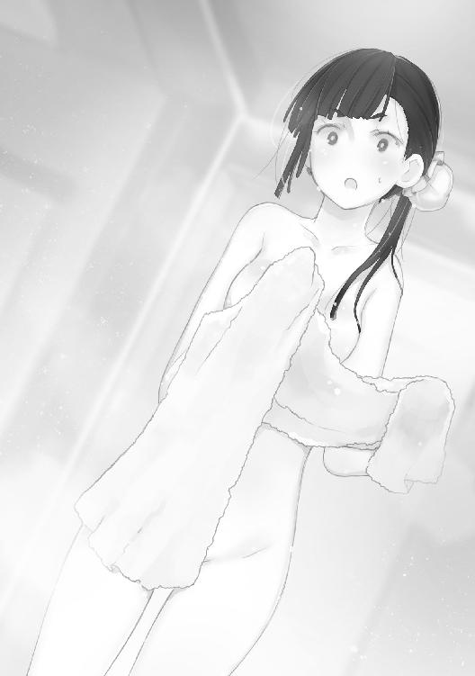
あとでわかったのだが、慧玲もまた寝ぼけて自分の部屋だと思い込み、寝起きのべたつく肌をすっきり洗い流したいとシャワールームへ向かったのだ。
どの部屋も同じ規格サイズの間取りであるのが災いした。
かくして、自分の部屋で寝ていたと思った慧玲はベッドからサニタリーへ直行。その途中で下着などを脱ぎ散らかす。
いっぽうユーリは、寝るまでいっしょにいたアビゲイルや慧玲をおぼえていながら、これまた目覚めたあとは記憶が混乱し、なのに危機に対しては傭兵的嗅覚で対応したから、
「なにやってるんだ」
「なに、してるのよっ！」
こんなことに。
そして、とりあえず危険ではない、と覚醒した頭でユーリが認識すると、では目の前の異性の裸身をどう扱えばいいのか、と次の意識にチェンジし、それはみるみる、ユーリの表情を強張らせる。
頬が熱くなるのを感じながら、
（そうだ。目を背け......）
るべきだ。そう思ったときには、別の理由で頬が灼熱した。
「見るなっ！ バカぁぁああああっ！」
ドカッ！
目前に迫って来た足の裏を正確に把握しながら、ガードポジションを取れなかったのは、やはり動転していたから。
加えて、ガードしたらそこからの流れで反撃までがワンセットだから、全裸の慧玲を相手にそれはためらわれた、ということか。
結果。
「ぐぁっ！」
強烈な蹴りをユーリは顔面に受けて、そのまま後ろへ吹っ飛ぶことになった。
５
「......なんだったんだ、あれ」
何十回目かの、昨晩の記憶を反芻しながらユーリ。
蹴りを受けた頬、というよりアゴはまだ少々痛む。それを振り払うように、ユーリは次のマシン、三角筋を鍛えるマシンのシートに、腰を下ろした。
頭の上にぶら下がるバーを、やや腰を浮かして両手でつかむ。
「ん！」
力を込めようとしたそのとき、
「よぉ！ やってるな！」
どんっ！ 背中を叩かれた。
それも軽くではなく、思わずバーを離しそうになるほど、肺から空気が絞り出されるくらいの衝撃だ。
「なんっ......！」
だ！ と振り返ると、そこに立っていたのは、
「感心じゃないか。二日酔いで昼まで寝てるかと思ったら」
アビゲイルだ。筋肉質の身体を強調するような、ぴっちりしたトレーニングスーツに身を包んでいる。
「だから、ジュースで酔うかよ！ だいたいオレの部屋で勝手に寝るし、いつの間にかいなくなるし！」
（そのあとひどい目にあったんだぞ！）
とまでは言わずにおさめたが、アビゲイルは、
「ハハハハッ！ 楽しんだだろ、それでいいのさ！」
豪快に笑う。
なんだか、慧玲との顛末まですっかりわかっている、あるいは予想がついた、とでもいうようだ。
やっぱり文句を言おう、と思ったユーリだが、そのまえに、
「アビー、そのジャケット」
ぴっちりしたスウェットスーツの上、裾の短いハーフジャケットを、アビゲイルは前を開いて着ている。
そのジャケットに描かれているマークとデザイン画。
「マンティ......コア？」
図案化されているが、翼の生えたライオンのような絵と文字が。
「ああ、そうさ。このフィットネスジムの名前だからな」
とアビゲイル。ユーリが見覚えがあると思ったのも無理はない。不慣れな中、ベースを出てすぐ目に入ったジムに、とりあえずゲストで飛び込んだ。
身体を動かして汗を流したかったからだが、ドアや受付の壁にもたしかに、このマークが描かれていた。
「じゃあ、アビーはここの職員なのか」
まさか、のつもりで聞くと、
「そうさ。トレーナーをやってる、チーフでな。おまえの登録したフィジカルデータも、ほら」
と、手のひらサイズのスマート端末を取り出して見せる。その画面に、ゲスト登録時に身体スキャンで取ったユーリのデータが示されていた。
「うーん、ちょっと肺活量が少ないな。持続力に欠けるんじゃないか。もっと有酸素運動をしたほうがいい。おっ、ちょうどエアロビクスのレッスンが始まるところだ。そっちに交じって一時間ほど動いてみるといい」
勝手に端末からユーリの予定を変えようとするから、
「お、おい！ ちょっと待て、待ってくれ！ いや、よくわからないんだが、アビーはその......傭兵だろ、あの中隊の」
傭兵、というところでユーリは声を潜めた。
だがアビゲイルは、とくに気にするふうもない。
「ああ、うん。そのとおりさ」
「だったらなんで、こんなところでフィットネスのトレーナーなんか。まさかアルバイトかなんかなのか」
ユーリの疑問は正しい。
ブラストパイロットで傭兵で、しかもシャフィーラの中隊に所属しているアビゲイルが昼間こうしてフィットネスジムのトレーナーをしているなんて、ふつう考えられない。
だがアビゲイルの答えは、さらに驚くものだった。
「アルバイト？ パートタイムのことか。違う。あたしはこのジムの正規の職員さ。勤務時間には配慮してもらってるけどね」
「でもそれじゃ」
「言いたいことはわかるよ。まだ教えてなかったっけ。このマーク......」
襟元につけられた、例のマークをつかんで見せる。
「マンティコア、か。ライオンの身体にコウモリの羽、サソリのシッポ、想像上のキメラ獣だな」
「このジムの名前で、このビルのテナント、ほかにカフェだとか、ネイルやマッサージルームもある、そういうのがすべて、マンティコアの名前で運営されてる。つまりグループ企業って感じさ」
「そうなのか。でもそれとこれとは」
「わからないか？ あたしたちの中隊のコードネームも、マンティコアだ」
「はぁ？ え......それって」
今度こそ混乱するユーリ。
アビゲイルは笑って、
「傭兵中隊も、グループのひとつってこと。企業なんだよ。フィットネスジムやカフェと同じ、ブラスト中隊もな」
「なん、だって」
まだ納得できないユーリに、これ以上の説明は無用、とばかり、
「エアロビのクラスに放り込んでおいたからな。五分後にＢルームでスタートだ。ほら、行った行った！」
背中を、バンッ！ 叩く。
「え！ いや、どういうことだ。だから、痛いって！ ......エアロビとかマジかんべん、おい、聞いてんのか、アビー！」
「いいからいいから、始まっちまうぞ。しかたない、あたしが連れてってやるよ」
ユーリの手をがっちりとつかんで、ずんずん歩くアビゲイル。
しかしもっともユーリが聞きたかったことは、アビゲイルに連れられていったんフィットネスルームを出たところでわかった。
「あっ！」
「あら」
そこにちょうどいたのは、
「よぉ、カイラ！ カフェのほうは繁盛してるのかい」
アビゲイルが呼びかける、カイラシュだった。
「え、カイラ......？」
最初、ユーリがわからなかったのは、アビゲイル同様、その服装、というかコスチュームだ。
「ええ、おかげさまで、ランチのお客様が並んでくださっているくらい」
答えるカイラシュの姿は、
「メイド、さん......カフェメイド、なのか」
思わず見つめるユーリ。
その言葉どおり、白基調のウェイトレス、あるいはメイドふうコスチュームを身にまとったカイラシュ。
手には銀のトレーを持ち、半袖超ミニのワンピースはピンク。胸の部分が大きく空いている。
深く谷間を刻んだカイラシュの胸の肌が丸見えだった。
たっぷりのフリルをたくわえたエプロンと、ヘッドドレス。
確かにどこからどう見ても、
「よく似合ってるぜ、メイドコス！」
アビゲイルが囃す。
そのうえ、あっけにとられているユーリをさらに驚かせる人物が進み出て来た。ひと目見て、
「ほぁ、えっ!?」
つい変な声が出るユーリ。
「なにをしている。通れないのでどいてくれないか」
シャフィーラだった。それも、
「ほーお、今日はシャフィーラも駆り出されるほどの忙しさか」
アビゲイルが驚く。その姿はカイラシュ同様、やはりメイドコスチュームだ。
「中隊、長......まで？」
「中隊長はやめろ。いまはカフェ・マンティコアのキャストウェイトレスだ」
その言葉が裏付けるように、シャフィーラのコスチュームも基本、カイラシュと同じ。
ただし、ピンクではなく黒のワンピースで、モノトーンのシックなカラーはシャフィーラの褐色の肌ともよく似合っていた。
「どうなってるんだ、この部隊......」
悪夢でも見たように天を仰ぐユーリを後目に、
「それじゃ、ユーリさん、ごきげんよう」
「おまえもランチするなら、あとでカフェに来るといい」
そう言い残すと、カイラシュとシャフィーラがカフェのほうへと向かっていく。
シャフィーラの腰に回したカイラシュの手が、この職種では先輩、と意味しているのかもしれなかった。
ふたりの背中を見送るように眺めながら、
「もう何もわからない......」
ぼやくユーリ。
「簡単なことさ、言ったろ？ このビルまるごとが、マンティコアっていう企業グループの持ち物だし、テナントもだいたいそうだ。そしてあたしたちは、その構成員で、一種の社員だ」
「会社員、だったのか」
「ああ。あたしがフィットネスジムに主に詰めてるのは、持ち場っていうか所属部署みたいなもんだ。異動もあるし、できるし、さっきみたいに、忙しければシャフィーラだってヘルプに入るときもある」
「中隊長だぞ。緊急事態が起こったらどうする。出撃するんじゃないのか」
「おいおいユーリ、あたしたちは警察や消防じゃないんだ。マグメルから警備だの拠点攻略だのをグロス受けすることはあっても、そのへんは期日だの要件だのがきっちり決まってる。街でブラストが急に暴れ出したって、あたしたちの仕事じゃない」
アビゲイルの言葉は整然として正論だ。
「まぁ、そうかも、だけど」
「比較的長期の作戦で出払ってるときは、交替のスタッフが入ってくれる。ショップやジムも維持できるようになってるのさ」
「ようは、二足のワラジってことなのか」
ユーリが言うと、
「それもある。形としてはそう見えるよな。でもシャフィーラの考えはもっと別にあると思う。このシステムを作ったのがシャフィーラなんだ」
「シャフィーラが」
「うん。傭兵が個別にマグメルに登録して、ミッションごとに集められたり、終われば解散したり、一匹オオカミを気取るのもいい。けど、そうじゃないアプローチだってあるはずさ」
「それがこの、会社みたいな、兼業システムなのか」
「可笑しいか。笑うかい？ けどさ、社会とコミットしてるってのはいいもんだよ。傭兵稼業以外でね」
「だからって、カフェメイドとか......」
「なんだっていいのさ。あたしのジムトレーナーでもね。身体を動かす仕事じゃなくてもいい。でもシャフィーラはきっと、こう言ってるんだと思う。......傭兵以外の仕事をおぼえろ、ってね」
アビゲイルの言葉は、ユーリをハッとさせる。
「傭兵、以外の」
つい、オウム返しで繰り返すユーリに、
「そうだと思う。戦う以外に、何かできることがあるはずだ、ってな。そのためには、まずやってみることだ。なんだって、自分でその場に身を置いて、やってみなくちゃわからないからな」
とアビゲイル。
「それで、このシステムを」
「あたしたち傭兵が自立するってことでもある。マグメルなんかと対等に、とまではいかなくとも、立場は強くなるだろ？ つまりは、自分を高く売るってことでもある。もし条件で合意しなくても、カフェやフィットネスジム経営でやっていければ、な」
ここまで言われて、ユーリも納得した。
「そう、か」
自分の中でシャフィーラと、この中隊が、居場所を得たように感じた。それはつまり、ユーリ自身の居場所だ。
耐性者として、いまの争いの時代の先の居場所を探す、このマンティコアのプロジェクトがストン、と腹に収まって来る。
「わかったかい。わかんなくてもいいけどな。それで、ユーリ、おまえは何をやるんだい？」
もう手は引っ張られていなかったが、ふたりで歩きながらアビゲイルが言う。
「え、やっぱりオレもやるのか」
「当然だろ。別にここの仕事じゃなくても、自分で作ったっていい。ま、ゆっくり考えるんだな」
「そうか、そうだな」
（傭兵以外の仕事、か......）
耐性者であれば、まともな企業に採用されるなどほとんど考えられなかったし、アルバイトさえユーリはしたことがない。
もっとも、
（生きるため、金を稼ぐためにはなんだってしてきたからな。それが「仕事」だったのかもな）
そんなユーリが見つけたのが「傭兵」。
いまでは、これ以外考えられない。
いつから傭兵が天職のようになったのか。さほど楽しくも、やりがいも、まして誇りなどはない。
（いや、待てよ）
ある。ただひとつ。
ＢＲに搭乗し、そのコクピットに収まるとき。
シートに身を沈め、ＨＭＤを装着するとき。コンソールの操縦スティックを軽く握り、両脚をペダルに乗せかける、そのとき。
ユーリの意識は、まさに高揚する。
深層意識までが、ＢＲと一体化するのがわかる。
ＢＲのマニピュレーターはユーリの手であり、脚部はユーリの脚だ。その手がつかむ各種アームズは、力の延長となって敵に徹甲弾を叩き込む。
その瞬間。
『おっ、ぉぉおおおおっ!!』
口には出さなくとも、全身の血が沸騰するのがわかる。
いや、血ではない。
（ニュードだ。オレの中を流れる、潜在するニュードが、そいつを求めてる。そいつとひとつになって、解放されるのを......）
想像し、思い出すだけで、ユーリは全身が熱くなる。
身体の中心がうずき、火照って、何かが溢れ出すのさえ感じる。
いますぐにＢＲに乗り込み、飛び出し、「敵」をこの手で撃ち......、
「ほい、なに考えてんだ」
ぽんっ！ 頭を叩かれた。
アビゲイルが持っていたスマート端末で、頭に乗せかけるようにユーリの頭を叩いたのだ。
たちまち、醒める。
身体から熱が失われて行く。
ニュードの「灯」が、暗く消えて行った。
「いや、なんでも、ない」
アビゲイルはきっと一瞬の変化をわかっていたのだろう。しかし何も触れずに、
「考えておけよ。いや、考えてみるんだ。傭兵以外の仕事ってのをな。それをやってる自分っていうのもな」
それだけ言うと、軽く手を振って離れて行く。振り返らなかった。
「おい、あの......なんだよ、えっと、どうだったっけ」
目の前に、防音扉がある。「スタジオＢ」のプレートも。
「ちっ、エアロビなんざ、オレがなんで......」
きびすを返そうとして、思いとどまった。
（いいかも、な。なんでも初めてやってみるのは、いいかも、だ）
改めて、エアロビスタジオに入ろうとして、ふと横を見ると、
「ぁっ」
「え」
通路を横切ろうとした少女と目が合う。
６
「慧、玲？」
「ユーリ、あ、あんた！」
慧玲だった。
朝の一件がよみがえって、つい防御の構えを取りそうになるユーリ。慧玲のハイキックを警戒した。
しかし、それはないようだ。
「なん、だ、その......!?」
理由はどうやら慧玲の姿にある。
手も脚も、その付け根まで露出したうえ、ボディーもヘソの辺りをたっぷりと見せている。
ようはセパレートの水着のようなのだが、違うのは、ボトムは超ミニフレアのスカートになっているし、トップも要所要所にフリルがついている。
「慧玲も、メイドか」
「違う！ アイドルよ、アイドル！」
アイドル、と自分で言って、慧玲はパッ、と頬を赤らめる。それが気に入らないのか、ムッ、と顔をしかめた。
フリルやフレアスカートなど、ついさっき見たカイラシュとシャフィーラのメイド・ウェイトレスと共通点も多い。
しかし確かにメイドコスとは、どこか違う。
さまざまに散らしたビビッドな色使いなど、人工的な華やかさがある。
「アイドル......？」
そういえば、慧玲のいつものお団子ヘアにもキャッチーなアクセサリーがつけられている。
「なんで......」
「なんで、って思ってる？ いいじゃない！」
「仕事、か？」
「そうよ、仕事、なの！」
アイドルが仕事。
ユーリはまた戸惑うが、
「アイドルって......」
「言っておくけど、ブラストのシステム状態じゃないからね！」
「いや、そこまでは。てかスペル違うし」
期せずしてボケまで飛び出す慧玲だが、顔を赤らめながらもユーリをにらんだまま。ユーリのほうもなぜか動けない。
ようやく、
「てことは、つまり......歌ったり、踊ったり、握手したり、ってやつか。慧玲が」
ユーリが言うと、慧玲が話しにくそうに返す。
「握手ってなによ！ ......そ、それもあるけど。あ、あたしは、慧玲は、べつにどこかのオフィスに所属してるわけじゃないし、自分で企画して、自分で活動してるんだから！」
「自分で。へえ」
つまりは、インディーズアイドル、地下アイドル。
そういえば、いまはエアロビスタジオでも、この「スタジオＢ」はもともとフリースペース。
ここでいつもは慧玲がアイドル活動として、ファンイベントをしているのだろう。
「だから、なに！」
「わ、わかった。アイドルか。いいよな。それが慧玲の選んだ仕事だ、ってことだ」
（マジ、なんでもありだな......）
少々引きながらのユーリの答えに、さらなる反発が来ると思いきや、
「ぇ......」
慧玲はむしろ戸惑い、見つめる。ユーリは、
「どうした。いいと思うぜ。アビーにも聞いたがな、傭兵だけじゃない、戦うだけじゃない、仕事ってもんがあるんだ。なんだっていい。そうだろ」
「ユーリ......」
慧玲の顔はまだ怒っている、ムスッとした表情のままだったが、その瞳はどこか潤んでいるように見えた。
「あ、そうか！」
急にユーリは思い出す。
「なに？」
「いや、だからあれだろ、アイドルって水着とかにもなるんだよな」
「まぁ、ないこともないけど......それがどうかしたの？」
「そのせいなんだ。ほら、慧玲って、何にもなかったし。日ごろから準備してるんだな、って」
「は？ なんのこと？ 慧玲の何がないっていうの。準備って」
「なにって、今朝オレを蹴っただろ？ そのときに、見え......」
慧玲のアイドル活動、と聞いて、パッ、と思い出したこと。
今朝まともに浴びた慧玲のハイキック。
瞬間見えた、慧玲の裸の脚の付け根。そのときは、ショックや痛さで考える余裕もなかったし、忘れていた。
アイドル、水着、準備、と繋がって、つい口に出してしまったのだ。
いっぽう慧玲も、ピンと来ていた。
なにしろ身に覚えのあることだから、そこはわかる。
わかると同時に、みるみる顔が真っ赤に染まっていく。
「あ、あ、あんたね......」
「あ！ いや、違う！」
「なにが違うのよ。見たんでしょ、見たのね、慧玲の......」
「ま、待て！ そうだ......思い出したっ！ 暗くてよく見えなかったんだ。慧玲が、そこんところ、剃っ......」
しかしユーリの言葉は最後まで聞こえなかった。
またしても、アイドルコスの超ミニなどものともしない慧玲のハイキックが、ユーリのアゴ先にヒットしたからだ。
「ほぐぁっ！」
倒れるユーリ。
その前で仁王立ちしながらも涙目の慧玲。
「この、バカぁぁああっ！」
ビルの外まで響き、道行く人が思わず振り返る大声が響いたという。
「ふんっ！」
そのままかぶりを振ると、大股で去っていく慧玲。
その後ろ姿を眺めながら、
「なん、だよ......ったく！」
今日二度目のアゴのダメージに耐えながら、そう吐き出すしかないユーリがいた。
しかし今朝といい、とっさにスウェイバックして蹴りの中心点をずらし、脳震盪を免れたのは、傭兵の訓練の賜物、とも言えるのだが。
「ありえねえ......」
やはり、そういう問題ではないようだった。
１
「......ミッションの概要は以上だ」
頭の中で蘇るシャフィーラの言葉を反芻しながら、ユーリはＨＭＤに表示されるマップと、目標を示す光点を見つめている。
一月一日。
（やれやれ、年明け早々からミッションとはな）
聞かされていたとはいえ、やはり重さは残る。
新年も祝日も、季節の機微すらも傭兵には無縁。カレンダーの数字は文字通りの数字に過ぎないと知りつつも。
降下十分まえ。
全員がＢＲのコクピットに収まったまま、その時を待つ。
密閉度の高いコクピット内でさえ、断続的に響いてくるターボファンの咆哮とローター音。
ＧＲＦの大型輸送ヘリにコンテナごと搭載されているのは、マンティコア中隊各自のＢＲだ。
ユーリには新たにガルムが与えられていた。
ＢＲメーカー・ベンノ社の最新鋭ＢＲ。まだ正規には配備されていない。
開発に当たっては、ナクシャトラ社のヤクシャがある意味参考になったらしい。ナクシャトラとベンノは協業関係にあるが、ベンノは打倒ヤクシャを目指してガルムを開発したという。
トップクラスボーダーに人気の軽量高速ＢＲヤクシャ。
そのヤクシャの爆発的スピードにはやや劣るものの、ガルムは持久力に優れている。
ヤクシャといえば、リオンの乗機でもある。
ユーリの新機体がガルムというのも、ちょっとした因縁ではありあそうだ。
また、こうした新鋭機に乗れるのも、マンティコア中隊が一種の実験中隊であるゆえんかもしれない。
他に、慧玲の狙撃兵装のシュライク、重火力兵装のアビゲイルのランドバルクＡＴ、支援兵装のカイラシュのディスカス。
加えて、シャフィーラのＥ．Ｄ．Ｇ．。
ガルム以外のＢＲは、元の機体を主体としながらも、それぞれかなりカスタマイズされた、一種のハイブリッド機体だ。
ハイブリッド機体はキメラとも言う。
（似合ってるかも、な......）
ユーリは新しくあつらえたパイロットスーツの肩につけられた、中隊のシンボルに視線を落とした。
そこにプリントされている図柄。
人面のライオン。背中にはコウモリの翼をたくわえ、尾は節足動物のサソリ。
マンティコア。
伝説の幻獣はまさに、さまざまな動物のパーツを集めたキメラ（合成獣）だ。
各員のＢＲ機体もそうだし、こうして、まるでバラバラな五人が同じ中隊に所属し、ミッションを行うなど、そんなところもキメラに近い。
もっとも、ミッションごとにさまざまな傭兵をエディットし、ひとつの部隊をそのたびに作る、
「そっちのほうがよっぽどキマイラかも、な」
従来のマグメルなどによる傭兵システムをそう評したユーリに、
『なに？ 何か言った!?』
コクピットに響く、やけに尖った声。
「なんでもない。ひとり言だ」
『だったら黙っててよね！ 降下まえは、ちょっとナーバスなんだから！ だいたいなんで慧玲があんたとなんて組まなくちゃならないのよ。ほんっと、信じられない！』
答えるユーリに、声の主、慧玲が噛みつく。
しかしユーリにしても、そのへんは同感で、
（なんでオレのバディーが......）
むすっ、と口を結ばざるを得ない。
ミッション自体は、すでにスケジュールに入っていた。ツーマンセルのバディーが慧玲だと聞かされたのは、昨日の夜だ。
『いつもはわたしがバックアップ、慧玲がフロントだ。明日のミッションでは、ユーリ、おまえが慧玲と組んでバックアップを務めるように』
慧玲には別に通知したのか、ユーリだけがシャフィーラに呼ばれ、告げられた。
こんなとき、抗うのは趣味じゃない。
どうせ誰かと組まなくてはならないのだし、好き嫌いでバディーを選んでいたらキリがないからだ。
とはいえ、
「......わ、わかった」
としか言えない精神状態。
慧玲とは、この中隊に配属されてからいろんな意味で繋がりが深い。おもに、ハイキック二発を食らう関係の濃密さ、と言おうか。
そんなだから、
『しかもあんたが慧玲のバックアップだなんて、意味わかんない！ ぜんっぜん、わかんないんだから！』
まだ聞こえてくる通信に、
「おいおい、ナーバスだから話しかけんなとか、言ってたのはどっちだよ。......一方的にしゃべる分にはいいのか」
ついつぶやいて、それが慧玲に聞こえていなかったことに、胸をなでおろす。
それにしても、ブラストどうしの通信はオープンだから、全員に聞こえているはずなのに、シャフィーラやカイラシュから意見はない。
慧玲の、いつものことなのかもしれない。
と思ったら、
『ん～......くぉぉ......すはぁ～』
聞こえて来たのは、どう考えても寝息。これには、
『アビー、アビー、あと五分で降下です。そろそろ起きてくださいね』
バディーのカイラシュが口を出す。とはいえその声は、苦笑するカイラシュの表情が伝わって来そうだ。
『......ほぁ！ ふはぁ......もう食べられないよ、カイラ』
しかし次に届いたのは、アビゲイルの寝言のようなセリフ。
これには、
「おいおい、大物過ぎるだろ」
ついユーリもつぶやくと、
『なんてな！ ジョークだよジョーク！ ははっ！ かかっただろ、みんな！』
とたん、アビゲイルの声。
『でも居眠りしていたのはほんとうですよね』
『それはまぁ、な。このコクピット、眠くなるんだ。なんでかなー。狭さがちょうどいいのかもなぁ。はは！ ははははっ！』
スピーカーからアビゲイルの豪快な笑い声。
「なん......だよ」
つられるようにユーリもため息。かぶせるように、
『まったく、なんて呑気なの！ 降下だってのに、なんで寝てられるのよ。ほんっ、と信じられない！ 慧玲なんてずっとお腹痛いっていうのに！』
『んぁ？ パイロットスーツの下にオムツしておいたか。忘れんなよ、慧玲』
『だからぁ！ そうじゃないってばぁ！ バカぁ！』
次々響いてくる声がかまびすしい。
いや、かしましい、というのか。
こんなふうに、降下まえのコンテナが騒々しい会話に満ちているなんて初めてだ。
（お......）
ユーリは気づいた。
自身の緊張が、融雪のように消えている。
どころか、なんだか心が浮き立つような、そんな感じさえある。
以前にも、出撃まえの昂揚感はあった。
しかしそれは、やがて飛び込む戦場の緊張やピーキーな感覚、硝煙の臭い、激発のショックや装甲版に当たる弾片の、そしてなにより、これから見るであろう破壊の光景を想像してのことだった。
こんなにも、
（なごんでる？ オレが？ すぐにミッションが始まるっていうのに）
『降下だ』
シャフィーラの声で、ユーリは我に返る。
同時に、手元のモニターに赤く「CAUTION」の文字表示が灯る。
身構える間もなく、輸送ヘリが速度を落とす。
つんのめるように空中に停止した。
続いてコンテナのドアが開く。各ＢＲを拘束したトレーが機体の外側へと迫り出す。
ＢＲのメインカメラモードにしてあったＨＭＤの画像が、暗闇からみるみる明るく、光に包まれる。
まぶしい光はモニターが調節してくれる。一瞬、目がくらむほどと思えた外光は、一面の曇天だった。
（風が）
湿った風が、コクピットの中にまで入って来る。
何重ものフィルターを通した換気ファンの風量を超えるはずがないのに、ユーリはコクピットの中に風を感じた。
これがＥＵＳＴの輸送機なら、コンテナごと機体内の床に敷かれたレールを滑り、有無を言わさず空中へ放り出される。
いっしゅんの無重力状態のあと、コンテナ下部に装備された逆噴射ロケットで強烈に減速する。
そして着地の衝撃だ。
どっちがいいというものではなかった。
ＧＲＦの大型ヘリも、ツインローターが作り出す、微妙なシンクロ。ゆらぎが、空中制止時には独特の感覚になって込み上げてくる。
ようするに、酔いそうになる。
が、それもコンマ数秒のもの。モニターが、
『DROPPED』
を表示したと思ったら、もうＢＲはヘリを離れていた。
２
『行くわよ！』
聞こえて来たのは慧玲の声。しかし一瞬早く、ユーリたちは空中へと押し出される。
ＯＫをインプットしておけば空中射出はヘリ側のタイミングで行われる。おかげで慧玲の声は、
『ぉぁ、ぁぁあああ～ん！』
妙な尾ひれがついた。
『ヒャッハーーーーー！』
歓声を上げているのはアビゲイルだ。
シャフィーラ、カイラシュともに、声は出さない。
重さが消えたような感覚。続いて、地表に向かって落ちて行く落下の加速感も、機体ブースターの対地降下逆噴射によってすぐに終わる。
襟首をつかまれ、強引に引っ張り上げられるようだ。
こんなときに、舌を噛みやすい。
ユーリは意識して口を結んでいたが、
「ぅっ！」
ドスッ！ 着地の突き上げに、つい声が漏れる。アスファルトなどではない、土の地面だから思ったよりソフトだ。
同時にあらゆる重さがよみがえる。
軽量のガルムでも、武装を入れるとおよそ十数トンにも達するＢＲ。その中心にいる自分を、再び強く意識した。
『全員、応答しろ』
無事を確認するため、シャフィーラの声が響く。
『はい。こちらカイラ、問題ありません』
『アビー、問題なし！』
『慧玲よ！ 着地もぴったり、決まったわ！』
「......ユーリ、異常なしだ」
すでに中隊は扇状に散開していた。
大型輸送ヘリは、すぐに全速力で上昇、退避にかかっている。直ちに危険が感じられなくとも、それが作戦仕様なのだ。
モニター越し、約二キロ先にプラントが見えた。正確には、
『残骸だな......』
アビゲイルの言うとおり、放棄されて久しい希少金属の鉱山なのだ。露天掘りで深く傷つけられた地表は、そのまま地球の痘痕か傷口のようにも見える。
途中、監視塔のようなタワーと、倉庫や精製所の建物がかなり大規模に残っている。
しかしどちらも無人で、そうなってから十年は経過していた。
ふだんは立入禁止に指定されているこのプラント跡にニュードの反応が認められたのは、ある意味幸運とも言うべきものだった。
「誰も立ち退きの必要もないしな」
誰に言うともなく、ユーリがつぶやく。
モニターをセンサーに切り替えると、露天掘りでできた大穴のあちこち、それに一部や施設の中にも、ニュード結晶の反応が見られた。
『ブリーフィングのとおり、ニュード結晶の規模を確認、測定し、ＧＲＦの当該担当セクションにデータを送信、報告する。それが今回のミッションだ』
コクピットにシャフィーラの声。
例によってマグメルを通して、比較的急に入ったミッションだった。
『なによ、こんなの、楽勝じゃない！』
そう言う慧玲の言葉が軽口に聞こえない程度に、確かに楽なミッションだとユーリも思う。
ニュード結晶の反応はセンサーで捉えている。現物も簡単に特定できるし、あとは、
（学者の仕事みたいなもんだ。学者先生の仕事をしやすくするのがオレたちの任務、か）
ＧＲＦとＥＵＳＴの抗争に駆り出されるだけが傭兵の仕事ではないということだ。
ミッション終了まで、予定時間二時間と見積もられていた。
「行こうか、慧......」
ユーリが言おうとしたときだ。
『行くわよ！ ほら、なにボーッ、としてんの。ほんと、トロいんだから』
すでに慧玲機が横を通り抜けていく。
たしかに慧玲がフロントだから、そのフォーメーションは間違いではない。少し離れた隣でも、アビゲイルが先行していた。
『晩飯はビーフがいいな！ ひさしぶりにルーターズで五ポンドのステーキ、たいらげるぞぉ！』
アビゲイルの言葉に、
「一ポンドでかんべんだ」
応えるでもなくつぶやくユーリ。五ポンドは二キロを超えている。
『あらあらぁ、アビーは食いしん坊ですね。それじゃぁ、いちばん仕事の遅い人の奢りということでしょうか』
とカイラシュ。
「だいたいそんなに肉を食ったら、こっちがブタになっちまう」
『なぁに？ 慧玲のこと、いまブタって言わなかった!?』
「言ってない言ってない！ ......子ブタちゃんなんて、言ってないぜ」
『はぁ!? あんたねぇ！』
『ここから私語は禁ずる。各自、集中しろ』
案の定、戒めるシャフィーラの声が届いて、スピーカーは沈黙する。
モードを切り替えれば外の、ほんとうの風の音が聞こえてくる。
外気温は二十七度。
日差しのある場所では、動けば汗ばむ程度の陽気だ。
しかしエアコンに管理されたコクピット内は二十四度、湿度四十パーセントに保たれている。
戦闘などでパイロットの発散する熱が高まれば、クーリングが働く。
外気もエアフィルターで厳重に濾過されている。
放射能や細菌はパイロットを守るのはもちろん、ニュード粒子も軽減させる。
ＢＲを駆るパイロットはほぼニュード耐性者だというのに。
（ご苦労なこった）
そうした「清潔」な環境で、ユーリたちブラストパイロットは戦う。外がどんなに硝煙や破片や、血や肉で汚れていても、パイロットにはいっさい及ばない。
清潔な戦い。
清潔な戦争。
しかしそれは、パイロットたる人間にではなく、ＢＲのメカニクスが欲している環境なのだから、皮肉だった。
『予定どおり、アビーとカイラの第１小隊は採掘跡へ、慧玲とユーリの第２小隊は管理棟へ向かえ』
シャフィーラからの通信だ。
そのシャフィーラは、高所にポジショニングして全体を警戒する。
『了解しました』
『了解ぃ！』
カイラシュとアビゲイルが離れて行く。
小隊というより、分隊のほうがしっくり来るたった二機だけの編隊だが、いつものミッションのような八機も十機もいるよりも、よほど頼もしい気がする。
それはユーリのほうも同じで、
『あたしたちも行くわよ！ ユーリ、慧玲に続いて！』
ブースターを巧みに噴かせて、あっという間に目標へ飛んでいく。
「おい、待てって！」
突出する慧玲の後を追う。
シュライクは歩行にも優れたＢＲだが、こうした高低差のある環境ではブースターの使い方がものを言う。
あっという間に管理棟の屋根に上ったシュライクに、
「だいじょうぶなのか。脆くなっているかもしれない。気をつけろよ」
建物下で警戒するユーリのガルム。
『そんなの、強度センサーで確認済みよ！ 設計図もダウンロード済みだし』
慧玲は言うが、コンクリート内の鉄骨芯が腐食などで弱くなっていても、センサーは必ずしも感知しない。
『あとで会いましょ！ 遅れないでよね！』
「やれやれ......こっちの仕事をさっさと片付けるとするか」
進んで行く慧玲機の後ろ姿をモニターしながら、ユーリは施設の入り口に向かって自身のガルムを移動させる。
すでに構造図はデータとしてインプットされている。
しかし十数年まえに放棄された建造物だ。壊れるなどしてどこが通れなくなっているか、実際に行ってみるしかない。
慧玲は、建物全体のマクロなニュード反応をモニターし、粒子を採取している。
ユーリは実際に建物内を移動し、建物全体のニュードレベルマッピングを作り上げればいい。
ニュードセンサーをオンにして慧玲とふたり、手分けしてとにかく行けるところをＢＲで歩き回ればいいのだ。
ニュード粒子の検知、計量はすべて搭載した機器がやってくれる。
「ここは......なんとか通れるな」
半ば変形して、開いたままになっている作業用扉をガルムがくぐり抜ける。
作業用スペースはすべてＢＲが通り抜けのできる広さ、大きさがあるから、動き回るのに基本、困難はない。
入口から数十メートルも進むと照明がないため、すっかり暗闇となる。ＢＲの投光器を点け、足元の障害物センサーも併用して進む。
「通信は......」
感度を上げるが、やはり建物内奥では電波が届かない。
通信ビーコンを途中設置して進む方法もあるが、今回は空中投下ミッションのため、携行されなかった。
予備コンテナに積んで投下するオプションもあったはずだ。
ＧＲＦの大型輸送ヘリはＢＲを六機搭載可能。一機分を降下コンテナとすることはできた。
そうしなかったのはシャフィーラの判断だ。
「そこまでじゃない、ってことか」
『ちょっと？ ユーリ！ 聞こえてる？ 聞こえて......』
慧玲の声も小さくなり、やがて雑音にまぎれてしまう。
ユーリは無線をミュートした。
「予定の作業時間はあと......六十分。十分だ」
先を急ぐことにした。
３
正直、困難はなかった。
ミッションというより、限りなく作業に近い。
「......あとは、このブロックで全部か」
建物内の作業坑道マップがサブモニターに映し出されている。ユーリのＢＲが通過した部分は赤くマーキングされる。
すでに、ほとんどのブロックが赤く点灯していた。
まるで、
「ダンジョンＲＰＧのマップを塗りつぶしてるみたいだな」
誰もが一度は夢中になってプレイしたことのある、ダンジョンタイプのＲＰＧ。
表示は３Ｄだが、こうして２Ｄのマップを手元に、行ったことのない部分がないか確認しながら進むのがふつうだ。
もっともいまでは、たいていナビゲートシステムがあるから、マップ作りも、マップ上の未行動部分も簡単にわかる。
ひと筆書きのように進めばいちばん効率的だが、そうはならないため、同じ部分を何度も歩く羽目になる。
ここでもそれは同じだ。
ＢＲをコマにしたダンジョンゲームの感覚に、ユーリはちょっと笑う。
しかしそれももう終わりだ。
ガルムの快適な乗り心地にも助けられて、障害物の多い廃坑歩きもじつにスムーズに進む。
以前のクーガーに不満はなかったが、こうなると戻るのは厳しいかもしれない。
車に例えて言えば、クーガーが剥き出しのジープやバギーなら、ガルムは革張り内装の高級車といったところか。
「ダンジョンＲＰＧなら、歩いているうちに敵にエンカウントするもんだがな」
幸い、このダンジョンに敵は出ない。出るのは、
「......反応が」
ニュード反応が強くなる。
センサーが、危険レベルまでのニュード粒子を感知していた。
敵は出ないが、
「ニュードはあるみたいだな、たっぷりと」
ちょうど作業坑がＴ字に分かれていた。ユーリはＢＲをニュード反応の強いほうへと向ける。そこに、
「！」
あった。
もう巨大な結晶となって坑道を塞ぐほどに、成長していた。
そこだけ吹き抜けの構造になっているのか、と思ったが違った。
ニュード結晶が天井を貫いている。三フロアほどを貫通しているのだ。もちろん床もそうで、
「こりゃあ、大漁だぜ」
直撃でなければ核攻撃にも耐えられるＢＲのコクピットさえ、汚染の危険にさらされている。
それほどに強いニュード反応。
（ＧＲＦがほうっておかないはずだ。いや、これほどの結晶......）
もうＥＵＳＴだって嗅ぎつけていても不思議はない。
もっと、他の組織が欲しがることも。
ひたいに汗がにじむ。
軽く息苦しさを感じたのと、
「......て思った早々に、お出ましか」
ユーリがそれに気づくのが同時だった。
ＨＭＤのメインモニターに警告表示。動的ターゲットが接近して来る。大きさは、まさしくＢＲほど。
「正真正銘、敵が出て来たか。やっぱりダンジョンＲＰＧだったんだな」
アイロニカルな笑いに、ユーリの口元がゆがむ。
が、ＢＲを探査から戦闘モードに切り替える手は休まない。
戦いに必要ないニュードセンサーや、データ保存ユニットをパージする。ゴトッ......ガ、ン！ 床に落ちたユニットが大きな音を立てた。
この程度で内部データが壊れるほど軍用ユニットはヤワではない。
ことが終わってから、また回収すればいい。
「あいつらを片づけてから、な」
ニュード結晶を避けて、ユーリはＢＲを坑道の壁のくぼみに入れる。
手を伸ばし、その手の一部からさらに、マイクロカメラのセンサーを伸ばして、坑道を見張った。
ＢＲの右上部マニピュレーター、つまりＢＲの右手は銃剣系ウェポンを構える。
カノンブレード。
新たに、実験的にユーリに支給されたものだ。
これだけでは火力不足とも言えるが、この狭い空間では取り回しのほうが優先だ。
ユーリはバックアップ側とはいえ、ロングバレルのライフルやガトリングガンは選びにくい。
敵もまた同じような事情だろう。
そう予想して、モニターを見つめる。
ニュード粒子の濃度が高すぎて、干渉がひどい。ジャミングを受けているように、画面が乱れる。
カメラによる視察をあきらめ、対物センサーの情報をメインに切り替える。
空気密度の変化によって、動く標的を感知するものだ。
（来る......！）
二十メートル、十メートル......敵ＢＲが近づく。
集中し、神経を研ぎ澄ませる。
心臓の鼓動はもちろん、自身の身体の中のさまざまな音が聞こえてくる。手のひらがしっとりと汗で潤う。
しかし意識はきわめてクリアーだ。
対物センサーの表示が近づく。
もうユーリのガルムが潜んでいる壁の凹みの、すぐそばだ。このまま進んで来れば、
（銃撃で一発。いや、三発、叩き込む）
装弾されているニュードランチャー弾の威力は通常弾より三割増しだ。理論上は一発で重量級ＢＲの装甲も破壊できる。
しかし一撃で撃破を期待するほどに、現実は甘くはない。
一発目で敵の機先を制する。
二、三発目で反撃機能を奪う。そこで降伏意思を見せなければ、ソードで敵メインカメラとセンサーを叩きつぶす。
もう敵は二メートルの近さ。凹みのすぐ側だ。
ガンサイト連動モニターのウインドウを見つめながら、ユーリの右手がウェポンコントロールスティックのトリガーを軽く引き絞る。トリガーのゆとり＝「遊び」が終わって、そこから先はすぐに激発する、というところ、
「な、に......!?」
突然、対物センサーが敵ＢＲを見失った。というより、
（跳んだ！）
もうメインカメラで見える。
そのＢＲもまた、ユーリのガルムを感知していた。
あと一歩のところで、ジャンプしつつ飛び出して来た。しかもユーリから見ると、後方に飛びすさっている。
とっさの動きには、マズル追尾システムよりも「手癖」のほうが勝る。
ユーリは「手」でＢＲのカノンブレードの銃口を振る。目分量、手の感覚のマニュアル、フリーモードだ。
だが敵のハンドガンの銃口もまた、ガルムを完全に射界に収めていた。
これほどのＢＲの身の軽さ。
（まずいっ！）
敵が見えない。
表面装甲をリアルタイムで色彩変化させる、特殊な迷彩装置だ。
さらに格闘系チップを使い、タックル、リアインパクト、ニーキックなどで攻撃して来るスタイルだろう。
加えてハンドガン。
一発の威力は圧倒的に劣るから、この距離なら致命傷はない。が、前面装甲がボロボロになるほど弾を浴びれば反撃もおぼつかない。
近い分だけ敵のウェポンに状況が味方している。
だが戦闘モードをとったガルムの反応速度は速い。クーガーとは桁違いだ。
さっきまでの高級車の心地よさがウソのように失せて、フレームだけのホットロッドに乗っているようなリニア感。
大出力ニュードモーターの荒々しいパワーが来る。
（回避......いや、一発でも！）
ニュードランチャー弾を撃ち込む。
が、
「なに!?」
トリガーを絞り込もうとしたユーリの指は、すんでのところで力を抜いた。
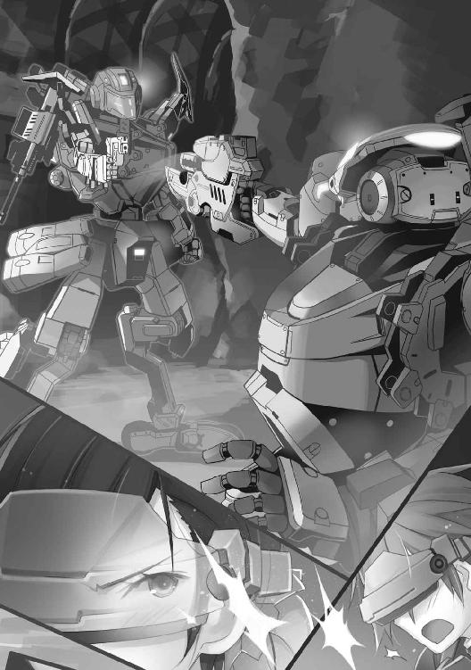
それは向こうも同じのようで、ハンドガンの銃口をこちらへ向けたまま、ついに発射することなく着地する。
４
滑りながら止まったＢＲから、
『何よ、何なの！ 何やってるのよ！』
慧玲の尖った声が、こんなにやさしく聞こえたことはない。
なんのことはない、敵ＢＲと見えていたのは慧玲のシュライクだったのだ。
「おどかすな、よ......ふぅ」
ユーリも息を吐き出しながら、そこには安堵感が否めない。
『もう少しで撃つところだったじゃない。まったく、危ないんだから！』
聞こえて来る慧玲の言葉は、そのままユーリのセリフでもあった。
それにしても、
「さすがだな。もう少しで相打ちだった」
お互いにトリガーを引くのをすんでのところで回避したからだが、ユーリの言葉には別のニュアンスがある。
待ち伏せ攻撃のユーリが圧倒的に有利だったのを、慧玲はとっさの機動でひっくり返した。
やられるかも、との危機感さえユーリに与えた。
動かずにいたユーリのガルムは対物センサーにもかかりにくい。
慧玲の動きは、「読み」と反射と、それを導き出した判断の賜物であるはずだからだ。
『そんなの、とうぜんでしょ！ 誰だと思ってるの！ ふふん、まぁ、これであんたも、慧玲を少しは尊敬したかしら！ いいのよ、もっと尊敬しても！ 少しはあんたにも、ＢＲ戦ってものを教えてあげてもいいんだから！』
慧玲の声が弾んでいる。
ニュアンスは伝わったようだ。
「そうだな、とにかく無事でよかった。ミッションのほうも十分データは取れたしな」
『だいたい、慧玲から離れ過ぎなのよね。坑道じゃ無線も通じないし、そんなことだからあやうく同士討ちするところだったじゃない。敵味方識別ビーコンまで切ってるなんて、ありえない！ 信じられないわよ』
まだ続く慧玲の楽しそうな声はいいのだが、ある部分にユーリは引っかかった。
コクピット内のモニターで確認する。
ハッ、と顔を上げた。
「ビーコンは」
『は？ なぁに、識別ビーコン、いまごろＯＮにしたって遅いんだから』
「違う！ ずっとＯＮのままだ。切ろうとすれば警告が出るから、うっかりＯＦＦにすることは考えられない。それに、こっちからも慧玲のビーコンは確認できていない」
『なによ、どういうこと？ ニュード粒子が濃すぎて、ビーコンが機能しなかったのじゃない？』
「いや、対物センサーも動いてる。ここまで接近して、それはない」
『じゃあ......』
戸惑いがある。
同時に、その原因も類推できるのが、いっそう不安を呼び込んで来る。
慧玲も、確認したようだ。お互いのビーコン検知装置だけが故障するなどということは考えられない。
とすれば、
「敵が」
『いるっていうの？ 慧玲たちに同士討ちをさせようとした』
「あわよくば、な。それよりももっと......」
（まさか、このミッション自体が敵の罠か？）
だがユーリがその考えを冷静に吟味する余裕はなかった。
迫って来ている。
おそらくは確実に。
その者は、敵味方識別ビーコンを無効化するジャマーを、あらかじめ坑道内に仕掛けておいたはずだ。
そうして同士討ちを誘う。
もしくはもっと、迫って来る機体の正体を隠蔽し、混乱させるためか。
『反応あり！ これって......』
慧玲が対物センサーの反応を訴える。
同時にそれはユーリのコクピットでも確認できていた。
対物センサーもまたニュード粒子の影響を受けている。反応を示すということはそれだけ、
（近い！）
果たして、モニターには坑道正面から迫る二機のＢＲ反応が。
『出るわよ！』
とっさに慧玲が飛び出した。
「待てよ！ 狭いトンネルで二機を相手に正面攻撃とか」
（正気かよ！）
ユーリが口走ったのも道理。
このような、ＢＲが二体、かろうじてすれ違える程度の広さしかない坑道で戦うなら、なんといっても待ち伏せしかない。
ユーリが慧玲にやった戦い方だ。
実際、敵が重火力兵装だった場合、ふたり並んでＢＲが致命的ダメージを負いかねない。
『あんたと同じやり方じゃ、相打ちにしかならないでしょ！』
慧玲の声が響く。
「おまえが相手だったからだろ！」
と言い返したいのをこらえて、ユーリは慧玲のシュライクに続く。
『バックアップ、わかってるわよね！』
「もうやってる！」
今度はそう返しながら、ユーリはガルムをバックアップポジションへ、カノンブレードを射撃モードで構える。
『そぉらぁぁあああっ！ 後悔するわよぉおお！』
慧玲が叫ぶ。
シュライクの動きは巧み、というより度肝を抜いた。
迷彩装置で姿を消すや、坑道壁面へ斜めに突進する。と思うとそのまま壁面を駆け上がる。さらに天井まで半ば達すると、大きく天井板を蹴り出している。
まるでアクロバットアクションのように、螺旋を立体的に描く機動。
生身でも少林寺拳法を極めている、と豪語していた慧玲のブラスト格闘術が冴える。
（あの動き、クイックステップチップか）
ユーリが考えているうちにも、シュライクは敵ＢＲとの差を一気に詰めるとタックルを敢行する。ほぼ天井からのタックルだ。
しかし敵ＢＲはすんでのところで、これをかわす。
とはいえ、もう射撃姿勢は乱れているから手持ちの重火力は撃てない。その隙をついて、慧玲のシュライクが次々と拳突き、足技を繰り出す。
『そらそらそら！ どうなの！ どうなのよっ!!』
慧玲の勢いに押され、防戦いっぽうの敵ＢＲはかろうじて後退を続けるしかない。ツーマンセルの僚機が、援護の銃弾をばら蒔く。
だがシュライクの攻撃を受け続けていた敵が、わずかな余裕から、
「来るぞ！」
こっちへ向かって放った物体が、ユーリの声と同時に爆発する。
爆音。そして爆風。
しかし物理攻撃ではない。
一瞬、コクピットモニターがすべて、青紫色の砂嵐と化す。ほぼ視認不可能だ。
「ＥＣＭグレネードか、くそっ！」
それは約五秒間、電子装置に干渉し、おもに視界を奪うジャミングボムだ。
次いでブブブブ！ ガンガンガン、ドンッ！
弾丸を撃ち放つ機械音、激発音と、コンクリートが破砕し、飛び散る音が混じる。
敵ＢＲのサブマシンガンだ。
『きゃぁあああっ！』
悲鳴を上げる慧玲。
何発かが着弾したらしい。とっさにユーリのガルムが飛びつくように押し倒す。
「ぉぉおおおおおおあ！」
ジャミングが収まるのも待たず、ユーリはカノンブレードのトリガーを引く。手撃ちで弾をばらまく。
「......はぁ、はぁ、は、ぁ」
モニターの視界が戻って、ようやくガルムが身を起こした。が、敵ＢＲ二機は後退したあとだった。
「あんなのに引っかかるとは、な」
『追うわよ！』
いつの間にか、こちらも機体を起こしていた慧玲が言う。
「待て。深追いするのは危険だ！」
『なに言ってるの！ 敵なのよ！ 追いかけて、とどめを刺すの！』
「とどめ、って、敵がなんだかもわかってないんだぞ」
『そんなの、ＥＵＳＴに決まってる！ あの巨大なニュード結晶を見たでしょう？ ヤツらも嗅ぎつけて、奪いに来たのよ！』
たしかに、一瞬見えた敵はＥＵＳＴのもののようにも見えた。機体は汎用のエンフォーサーのようだ。
いまのユーリたちはＧＲＦとして動いている。ＧＲＦのあるところ、ＥＵＳＴも現れる道理。
とどのつまりはニュードの奪い合いだ。
「オレたちの任務は敵の撃破じゃない！ いったん外へ出て、第二小隊と合流しよう」
呼びかけるが、
『なにぬるいこと言ってんのよ！ やれるときにやらなきゃ！ あたしたち、傭兵なのよ！』
傭兵なのよ！
慧玲の言葉がユーリの意識に刺さる。
傭兵だから、スコアを稼がなくてはいけない？ 傭兵だから敵に情けをかける必要はない？
傭兵だから、正規軍とは違うから、だから......、
（何だって、言うんだ！）
自分の中でいままで納得もし、このマンティコア中隊に可能性も感じ始めていた。
しかし、
「傭兵は傭兵......それ以上でも以下でもないってこと、かよ！」
心に被せていた蓋が内圧で開くような、塗り固めようとしていた膠が剥がれるような感覚がある。
希望めいたものに、自分を甘やかしていたのか。
（しょせん、オレは......！）
だが、いまやるべきは、
「待て！ 戻れ慧玲！ 何かおかしい！ こんな......」
簡単に敵が逃亡......撤退したこともだ。だいたい敵ＢＲに致命弾を与えられていないのも妙といえば妙だ。
あらかじめ、周到にジャマーを仕掛けてくるほどの敵。こちらの予定行動が筒抜けになっていたと考えてもおかしくない。
ばくぜんとした不安が締め付けてくる。
これまでは、直感に従うことのほうが正しかった。傭兵としての経験から導き出されたもの、あるいはカン、に。
それもまた、
（傭兵か。どこまで行っても）
歯がゆいもの、やりきれないもの、イラつく気持ちを抑えながら、ユーリは周囲を警戒する。
しかし慧玲は、
『ついて来るの、来ないの？ いまならまだ敵を楽々捕捉できるわ！ あんたは慧玲のバックアップじゃないの！』
それだけ言い残すと、煮えきらない、と見たユーリを後目に薄暗い坑道の奥へと飛び込んで行く。
「待て、まだ！」
言いかけた、ときだ。
ユーリの背後で、何かが弾けた。
寸前、予感があった。ユーリはとっさにＢＲの姿勢をひねり、カノンブレードを向けようとさえした。
が、爆発のほうが強い。それも、
「結晶が！」
フロアを貫くほどに成長したニュード結晶が、弾けるように爆発した。
破片がシャワーのように叩きつける。
ガルムの装甲を容赦なく打ち据えた。強烈な爆風もあって、吹き飛ばされ、床に擦りつけられる。
「ぅぅ......うぉ！」
だがユーリにはわかった。
ニュード結晶が爆発するわけがない。
（グレネードか、ロケット......いや！）
ＢＲによる攻撃だ。逃げたのとはまた別の。
『きゃぁああ！ 何よ、何なのぉ!?』
爆発は慧玲のシュライクも壁に打ち付けたらしい。
「ダメだ！ 来るな、警戒しろ！」
ガルムを「起立」操作しながら、ユーリはすばやくカメラで全周を視察する。対物センサーも見つけていた。
「あれ、だ......！」
まだ収まりきらない爆発煙の向こう、ゆらりっ、と蠢く影が、ＢＲの姿となって現れる。
煙をまとい、かきわけるように進み出るそのＢＲに、ユーリは見覚えがあった。
忘れるわけがない。
「あいつだ。あのとき、の」
真紅のＢＲ。
いまなら、よりはっきりと見える。
ヤクシャ弐と改のパーツをカスタマイズしただけではない。屹立する頭部の一本角など、もっと尖って、禍々しい姿を見せつけてくる。
半ば乾いた血のような濃い赤が、それをさらに強調していた。
ユーリの脳裏に一瞬でよみがえる記憶。
浪速特市での、四条重工本社警護ミッション。
謎のコンテナの中に眠っていた少女......、
（クユラの......！）
またヤツが来た。あのときに続いて、また！
真紅のＢＲのパイロット、リオンの顔を、モニターに映った表情をユーリははっきりと思い出す。
「ヤツの狙いはニュード結晶なんかじゃない。ないはずだ。だとしたら、なんだ？」
（あのとき、ヤツらはクユラを手に入れようとして果たせなかった。いまもそうなら、じゃあクユラはどこに......）
ユーリの思考が目まぐるしく回転する。その間にも、
『ちょっと、何なのそいつ......きゃぁあっ！』
慧玲がシュライクを戻そうとした。ユーリとの距離を縮めようとする。が、坑道の向こうからの銃撃に見舞われた。
「慧玲！ 無事か！」
やはり、というか罠だったのだ。
坑道の向こうからは、新手のＢＲが二機、射撃しながら接近して来る。さらに最初に撃破したはずの二機もいる。
あのまま慧玲が深追いしていたら、挟み撃ちにあって確実に潰されていただろう。
『心配なんてしないで！ それよりそいつ、何なの！ また、来る......！』
慧玲に言われずとも、ユーリにも見えていた。
真紅のヤクシャに続いて、別のＢＲ、セイバーが姿を現している。
（これで六機。敵は六機、こっちは二機。狭い坑道の中で、完全に囲まれてる。兵装は？ 強襲、重火力、狙撃、支援......勢ぞろいだ。アウトだ。超アウトじゃないか）
「は、はは！ ははははは！」
『は？ 何で笑ってるのよ！ ちょっと、ユーリ!?』
慧玲の声がする。
が、ユーリの意識は全方位に拡散して最高の緊張へと集中して行く。
コクピットが自分の身体の一部になり、ＢＲの手足であるマニピュレーターのすみずみまでも感覚が伸びる。
一体感。
ＢＲと身体が一体、同一になる感覚。
「これだ......」
『えっ？』
還って来た。ユーリがＢＲに乗る理由。ＢＲパイロットとなった動機。すべてがここに集約されている。
「ニュードが、そうさせるんだ」
『ユーリ？ あんた、何して......』
「ニュードが、燃えてるんだよ。オレの中のニュードがな。血管を通って指先まで、身体のすみずみまでも、粒子を運んでる。だからオレは......オレがＢＲなんだ！」
なんだろう。
ひさびさに感じる。
迷いの中で、もしかしたらつかみかけていたもの。その代わりに失いかけていたものがあるとしたら。
（オレが傭兵でなくなったら......ＢＲに乗らない、ただのガキになったら、それでどうなる。何になるってんだ。オレは......！）
「ニュードの業火に焼かれやがれ！」
ユーリはＢＲをその場で回転させると、一気に加速した。
５
最後に現れた敵セイバーへまっすぐに突っ込む。
『ユーリ!?』
あきらかな無謀。
特攻といってもいいほどの無防備な攻撃だ。
ユーリたちは三方から囲まれていたし、背中を向けることになったのは、あのリオンのヤクシャだ。
絶対に撃たれる。そう思う間もなく、
「......ちぃ！」
ヤクシャがまるで、そう舌打ちしたように動いた。と、その指示か、背後に控えた重火力装備のＢＲが、構えたウェポンのトリガーを絞る。
ドシッ！ 重々しい発射音とともに撃ち出される重砲弾。
ＢＲの背中から肩にかけてマウントする重装備だ。しかし重装砲系は曲射弾道で遠距離へ榴弾などを飛ばす武装のはず。
しかしこんな坑道で曲射弾道が使えるはずがない。
特殊砲弾による直接照準射撃だ。
一瞬のうちにユーリがそこまで観察し、読んでいたのは当たった。
重装砲系の砲弾初速は遅い。
ユーリの背後から砲弾が迫る。
照準は正確だった。
元より、遮蔽物もない一直線。それも距離は百メートルもないのだから、外しようがない。
当然だが、いくら初速が遅いとはいえ、ＢＲのホイールダッシュ程度とは比較にならない。発射音を聞いたらもう逃れようがない。
どうするか。
「このぉぉおおおっ!!」
腰部ブースターを噴かす。全力噴射だ。
重砲の発射音を聞いてからではない。その直前に、操作を終えている。
これはもう、カンとか読みとかいうレベルでもない。
そうなるに違いない、という予測行動だ。
相手がプロの、最高クラスの傭兵と信じるほど、答えもまた確実となる。
だからユーリがこのタイミングでブースターオンにしたのは必然だ。
しかも、角度を限界までの俯角で。
ジャンプするのではない。砲弾から逃れるために加速するのでもない。
上から押しつぶすようなブースターの角度と推力。まるでのめるように、その場に突っ伏すガルム。
どこか、ヘッドスライディングにも似た姿勢となる。
その直上、かすめるように飛び過ぎていく砲弾。
見えるはずがない。だがユーリは追い越していく砲弾をはっきりと感じた。
ドシッ！ 着弾というより、空気を震わせる衝撃波。
ガルムの向こう、敵ＢＲに砲弾がぶち当たる。
それはもう、ぶち当たるという表現が的を射ている。
大口径榴弾の、それも装薬を大幅に増したカスタマイズ弾だ。
（突き刺すんじゃなかったんだ。表面から粉々にぶっ飛ばすんだ！）
ユーリの目前、突如破裂したように粉々になったニュード結晶塊。
高初速の徹甲榴弾による、射撃だと最初は思った。
亜音速で飛来した突入体が、結晶表面さえ液状化させて内部へ侵徹。そして爆発する。それゆえの、あの結晶爆発なのだと。
しかし違った。
敵ＢＲの重装砲を見た瞬間、ユーリはそれを悟った。戦術は決まった。
そして、
「やった、か!?」
カスタマイズされた砲弾は、ＢＲの前面装甲さえその物理衝撃で紙のように破る。
そして爆発。
爆発力も、並の榴弾の数倍だ。
文字どおり、粉々になるセイバー。
こんどこそ爆発音が響き渡る。音とさえ認識できない衝撃、爆風が狭い坑道を吹き抜ける。
『きゃぁぁああああっ！』
慧玲の声が響いた。
しかしとっさにＢＲに対爆姿勢を取らせている。
「来い！」
ユーリが叫んだ。
後ろは見ない。前のめりに倒れ、滑るガルムを、スピードを十分保ったまま起き上がらせる。そのまま走り続ける。
ホイールダッシュと歩行を巧みに使い、吹き飛ばされたセイバーの脇を抜ける。ユーリの後を慧玲が追った。
『いきなりなんて、聞いてないわよ！ やるまえに少しは教えなさいよぉ！』
思ったとおり、慧玲のシュライクは追従して来ている。
「このまま出口へ向かうぞ！」
『だから！ 話聞きなさいってばぁ！』
文句を言いながらも慧玲は、威嚇射撃を繰り返しながら、後方の警戒と確保を怠らない。こんなところは、どこまでもプロの傭兵なのだ。
（傭兵が何かになる？ 別の仕事を見つけるだって？ オレが傭兵をやめる......傭兵でなくなる、そのときは......）
「オレが、オレでなくなるときだ！」
あえて口に出す。言いきると、心の中に風が吹き抜けるような割り切りの良さがあった。いっぽうで、チクッ、と刺すような痛みも感じる。
『なぁに？ 何言ってるのよ！』
あいかわらず慧玲は後方を固めながらついてくる。これでは慧玲のほうがバックアップだ。
ユーリもまた前方を警戒しながら、ほぼフルスロットルで進む。
囲まれたとはいえ、包囲環のもっとも弱い部分をぶち破ったなら、むしろ逃走は容易だった。
唯一、恐れるのは、
「重火力兵装に注意しろ、慧玲！」
（あの紅いのはあいつ、リオンだ！ これはあの晩の、あのＢＲ部隊の襲撃だ！ ニュードをかっさらいに来たＥＵＳＴなんかじゃない！ 結晶を粉々にして、気にもしない連中だ！）
さっきの重装砲でまた撃たれたら、直接当たらなくとも最悪、壁に当たって粉砕し、坑道を塞ぐ可能性がある。
『えっ！ 何!? セイバーしか追って来ない、わ、よ......って！ 偉そうに命令しないでよ、ね！』
言葉が途切れたのは、その間、ＢＲのハンドガンを撃ち放っているせいだ。
どうやら、
（あいつは追って来てないのか。どう来る？）
さっきのような、まっすぐ直線で見通しのいい坑道が続いていないのが幸いした。
だが油断はできない。道なりに、ほぼジグザグに逃げながら、
「だらだら追いかけて来るなんざ、あいつのキャラじゃないってな。どうする？ オレなら......」
ユーリの頭をかすめる。
坑道の出口（入口）に先回りして、待ち伏せ攻撃......。
「慧玲！ ポジションを代われ！」
ガルムを停止させる。出口はすぐそこだった。
『なによ、慧玲を盾にする気!?』
文句を言いながら、慧玲はユーリを追い越して、
「停まれ！」
『わかってるわよ！』
シュライクを停止させる。
いっぽう慧玲と位置を入れ替え、後方を向いたユーリは、カノンブレードの銃のトリガーを、追って来るセイバー二機目がけて引き絞る。
ドン！ ドッ！ 重厚な発射音が坑道内に響く。
と思うと、セイバー二機は前面装甲と頭部を吹っ飛ばされて擱座、その場で停止した。
（パイロットは......いや、そんなことより）
パイロットが脱出したようには見えなかった。
ユーリはその件をすぐに頭から追い出す。慧玲に向かって、
「出口の向こうに、おそらく」
『さっきのヤツがいるのね。赤いのや、そうでないのが』
「ああ。三機撃破したが、残りは三機、それ以上かもしれない。やれるとは言わない。けど......」
『やるしかないじゃない！ 慧玲が出るわ！』
「いいのか。フロントが真っ先に」
（狙われるぞ）
それはやむを得ないことだ。よくて被弾、中破。当たりどころが悪ければ......。
『そっちのカノンブレードじゃ取り回しも発射速度も向いてない。慧玲が迷彩で距離を詰めるわ！ 補助武装のスタングレネードで、一瞬でも牽制できれば』
「ああ。迷彩はあとどれくらい使える？」
尋ねた。しかし答えは予想がついている。
『残り少ないわ。迷彩が使えるのは一瞬だけね。でも、一機や二機なら倒して見せる！』
機体特性からいっても、格闘術にしても、フロントはシュライクしかありえない。しかしユーリは、
（あれ、こいつ......慧玲の夢、って）
不意に蘇る、込み上げてくる。
本部のビルで見た、慧玲のアイドルコス姿。あれが、
「慧玲のやりたいこと、夢......傭兵じゃない仕事......」
『なに言ってるの？ 出るわよ、ほら！』
「待てよ！ 慧玲、おまえ、ほんとうはアイドルになりたいんじゃなかったのか」
ユーリが言うと、
『そうよ。なに？』
「いや、だから、こんなところでケガでもしたら」
ケガ、に留めたが、もちろんそれ以上のダメージもあり得る。つまりは、アイドルなど夢と消える。
『だから、なんなの？ たしかにアイドルは慧玲の夢だけれど、同時に傭兵の慧玲は、この場面で最善を尽くすわ！』
慧玲はしかし、あたりまえのように返した。
「アイドルで、同時に傭兵......だと」
慧玲がアイドルを目指している、インディーズアイドルを傭兵以外の仕事にしている、と知ったときより、むしろ驚きを感じたかもしれない。
それが「両立」というものなら、マンティコア中隊の彼女たちは、中途半端に傭兵やスポーツインストラクターをやっているのではなく、まして傭兵で食えなくなったときの保険ではさらになく、
「どっちも本気の、どっちも命がけってことか」
『時間がないわ！ 三秒後に出る！ ......一、二』
慧玲のカウントに、ユーリは改めてカノンブレードを構える。
良くて半々。いや、
（オレがうまくやれば、慧玲は無事に戻れる。アイドルだって続けられるんだ。もっとメジャーなアイドルだって、なれるかもな。オレが慧玲を守る。守って......）
そこまで連想して、ユーリは驚く。
（オレが、守る？ 慧玲を、オレが）
守ろうとしている。
これまでだって、バディーを守って来た。守られてもいた。
だがそれは、ミッション達成のために必要だったから、必然的にそうして来ただけのこと。
こんなふうに、相手の夢を叶えたいとか、無駄にしないため、なんてものではなかったはず、なのに。
『三！』
慧玲のシュライクが飛び出す。
いい動きだ。軽々と、まるで重さを感じさせない。迷彩をオンに。シュライクがかき消える。
当然だがまったくの透明になったわけではなく、わかっていれば多少は目で追える。しかしすぐに振りきられる。まして敵には、とうてい捉えられない。
やっぱり慧玲がフォワードで正解だ。
慧玲がスタングレネードを放つ。
敵の目前で弾ける。
スタングレネードは強力な妨害電波でＢＲの各種センサーを一瞬無効化するものだ。
思ったとおり、まともに電磁波のジャミングを受けた敵ＢＲの動きが止まる。
すかさずユーリがトリガーを絞る。
ドンッ！ ドシッ！ 重い撃発音ととも銃弾が敵セイバーの装甲を貫く。そのままユーリもガルムを坑道から飛び出させる。
しかし、
「バカな！ 後ろに......！」
たったいまユーリが撃破したＢＲのすぐ後ろに、もう一機がいた。重なり合っていたのは偶然なのか。
慧玲のスタングレネードも、そのせいで効かなかった？
そうとわかっていれば、冷静に二機目を射撃した。
しかしファイア・アンド・ムーブメントは本能的に刷り込まれている。慧玲をバックアップするためにも、次の敵を求めてポジションを移動した。
（間に合わ、ね、ぇ！）
急いでカノンブレードを構える。
慧玲は？
『こっちよ！ 慧玲を見なさい、ってぇのぉ！』
すでに迷彩効果が切れている。やはり一瞬だったのだ。
しかし派手に暴れ、ハンドガンの弾をばら撒く。牽制する。翻弄する。ユーリを助けるために敵を引き付けようとする。
ユーリが逃した二機目が、狙いを慧玲へと定めるのが見えた。
「慧玲っ！ 逃げろ！」
叫びかけるのが精一杯だった。当たらないとわかっていて、ユーリはカノンブレードのトリガーを引き絞る。
『えっ』
戸惑った慧玲の声がスピーカーに届いた。
小さく口を開けた表情までが見えるような気がした。
しかし、
「なにっ？」
ド、ド、ドッ、ドッ！ ドンッ、ドンッ、ズシャッ！ 撃発音ごとに、敵ＢＲが弾着の衝撃を受ける。
破片が飛び散る。地を這うような火球が命中し、派手な火柱が上がった。
「......アビー!? カイラ！」
尾根のように見える露天掘りの土砂の山に一機、手前の遮蔽物の向こうに一機。
『何だぁ？ 苦戦してるのかユーリ、ハハハッ、ハハハハッ！』
『ふふふ、月並みですけれど、助けに来ました』
アビゲイルのランドバルクと、カイラシュのディスカスだ。
火器を振って、サインを送ってきていた。
ユーリの分と合わせて、瞬く間に敵ＢＲの二機が撃破された。
残りの二機は後退する。
『やったわ！ 見た？ ユーリ、敵が......』
慧玲の弾んだ声が響く。しかしユーリは、
「あいつはどこだ。赤いのは......くそっ、どこにいる！」
必死にリオンのヤクシャを捜していた。たったいま逃れた目の前の窮地も、爽快な気分を運ぶどころか、
（まずい、なにかまずいぞ......！）
不安が胸を締め付けてくる。果たして、
『きゃぁあっ！』
ガゴッ、バカンッ！ 爆発に混じって、思いきり金属をひしゃげ、ねじ曲げ、ねじ切ったような音が響く。
その一瞬まえ、ユーリは空気を切り裂いて飛ぶ砲弾を視界の隅にとらえていた。
「慧玲......！」
６
慧玲のシュライクの肩から先がなかった。胴体の一部もろとも、ごっそりと持っていかれていた。
ヤクシャだ。
別の出口から坑道を出たのか、ユーリたちの死角に位置していたのだ。
構えているのは、ＬＥ―ブリッツァー。
両刃の刀身を持つ片手剣のような武器で、その刀身から高圧のニュード粒子を飛ばすことができる。
『後ろよ、ユーリ!!』
それでもまだ、慧玲は残った右手が握りしめたハンドガンを撃ち放つ。銃弾はユーリをかすめてその後方へ飛ぶ。
そこにリオンのヤクシャがいた。
ＬＥ―ブリッツァーはニュード粒子の充填に時間がかかる。
そのため、ヤクシャはサイドアームとしてサブマシンガンも装備していた。だが、そのＭ99サーペントを引き抜く間もなく、
「のぉらぁぁあああっ!!」
間近にユーリのガルムが迫って来ていた。
しかし銃弾を撃つのではない。ソード部分で思いきり斬りかかる。
『ぬぅっ!?』
これにはリオンも戸惑う。
ハンドガンを警戒して抜いたサーペントが宙を舞う。
「よくも、慧玲を！」
その慧玲の、擱座する寸前に撃ち放ったハンドガンの一撃があったからこそ、ユーリはリオンにここまで肉薄することができた。
慧玲機は、遮蔽物の向こうに崩れたのか、もう見えない。
「あいつをケガでもさせてみろ！ ただじゃおかないぞ、この、このっ！」
二度、三度、袈裟懸け、逆袈裟とソードで斬りつけ、姿勢が乱れたところへ、突きを放った。コクピット下の、一番重量のかかる腰部ジョイント機構だ。
しかしヤクシャも、そう簡単には倒れない。
逆にガルムの腕を取ると固めて来る。ガギッ、ン！ 頭突きするように頭部どうしがぶつかる。いや、ぶつけられた。
『この程度か！』
回線が割り込んで来る。まえと同じだ。モニターに強制的にウインドウが開き、リオンの顔がユーリをにらむ。
「こっちのセリフだ！ なぜ攻撃して来る！ オレはおまえに用なんてこれっぽっちもないんだぜ！」
『取り乱しているな。僚機がやられた程度で。私にはリオンという名がある。おまえではない！』
「知るかよ！」
『私は知っているぞ。貴様はユーリ！ ユーライア・ヒースだな』
「ひとの名前を気安く呼ぶんじゃねえ！ この銀髪野郎が！」
ユーリはガルムの脚を上げると、足裏をヤクシャの腰に当て、思いきり突き放す。反動でヤクシャから逃れた。
と思うと、
「隙ありだぜ！」
跳び退いた、と見せて、着地の寸前にブースターを噴かす。
減速するためではない。弾かれるように逆加速し、ヤクシャへ突進する。
『何っ!?』
この動きにリオンは不意を衝かれた。
懐へ飛び込まれる。
ガルムのカノンブレードの切っ先が喉元へ迫っていた。
「そら、首がなくなるぜ！」
しかしリオンも並のボーダーではない。
『貴様がそうなら、わたしは......！』
とっさに機体をかわす。半身となってブレードをやり過ごし、サブマシンガンを拾い上げる。
「させるかよ！」
カノンブレードでユーリが対抗する。
このポジションからは、当たるとは思えない。しかし、
『このっ！』
ヤクシャもまたさらに姿勢が乱れ、Ｍ99サーペントを撃てなくなる。
「まだ終わってないぜ！」
かわされたユーリは、機体が交錯した、と見えた瞬間、再び腰部ブースターの噴射で反転。
またもカノンブレードをヤクシャの腹へ、こんどは突き出すのではなく、身体ごと体当たりしつつ突き立てる。
『こい、つ！ 野良犬のような動きをっ！』
「だったらどうした！ あいにく、ＢＲのドッグファイトはお上品じゃないんでな！ 真っぷたつになるか、それとも......鉛弾喰らいやがれ！」
トリガーを絞った。
カノンブレードが火を噴く。
このとき、リオンのヤクシャが回避に動いていたら、致命的ダメージを免れなかっただろう。
だがリオンは、
『それが、貴様の、甘さだっ！』
むしろ踏み込む。
自らカノンブレードにＢＲの身を押し付ける。がっちりと押さえた。
ブレードはヤクシャの機体にめり込むが、そこはもっとも装甲の厚いコクピット付近だ。
腰部ジョイントにダメージがあれば、機動そのものが不可能になる。
自らのコクピットを危険にさらしてもガルムのカノンブレードを止めた、リオンの機転と豪胆。
そのうえ、動き回るガルムを完全につかみ留めた。
「離せ！ この！ こ......！」
『貴様こそ、終わりだ！』
言い合いのさなかにも、リオンのヤクシャはガルムのカノンブレードの柄を押さえているし、ＬＥ―ブリッツァーの次弾もチャージしようとしている。
ユーリのガルムもまたカノンブレードでとどめを刺すべく、刃を押し込もうとしていた。
またも力くらべとなる。
だが、
『もういい。そこまでだ』
ソードが突き付けられる。
ユーリのガルムにも、リオンのヤクシャにも、その「首筋」にリヒトメッサーが押し当てられた。
ちょっとでも動いたら、センサー系を集約したＢＲの頭部が落とされるだろう。そうなればもちろん、反撃などできるはずがない。
『貴様はっ！』
「シャフィーラ!?」
リオンの叫び。ユーリの言葉が示すとおり、ふたりのＢＲに刃を突き付けているのは、シャフィーラのＥ．Ｄ．Ｇ．だった。
『そのくらいでいいだろう。だいたい、刺突でバレルが変形している。このまま撃てば筒内爆発を起こすぞ、ユーリ。それに、リオンと言ったか』
ユーリとリオンの無線の会話を傍聴していたのだろう。シャフィーラがリオンの名を呼んだ。
『シャフィーラと言ったか、女、聞き憶えはあるが......勝ったつもりか！ この程度で』
『無駄に力を使うな。勝ったつもりもなければ、おまえを捕虜にしたいわけでもない。それより、おまえの求めているもの、ここへ来た理由は、そうではないはず』
シャフィーラの言葉に、リオンが小さく息を呑むのが伝わる。
それはユーリにも伝わって、
（なんだ、この感じ......）
別の感覚を呼び覚ました。
しかし初めてではない。確かに一度経験した、あのときの奇妙な、しかしどこか懐かしささえも伴って......、
『クユラ......』
つぶやいたのはリオンだった。
それを裏付けるように、シャフィーラが言う。
『そうだ。おまえの欲しがっているもの、目的は......』
Ｅ．Ｄ．Ｇ．がブレードを退いた。
機体をわずかに後退させると、ユーリとリオンの視界が広がる。坑道のある管理施設のほう、その向こうに、
（あれは......ＢＲか、スペクター、いや、見たこともない）
まったく新しいフォルムを見せるＢＲ。
どっしりとした重量感。ボディーを包むエッジの立った装甲板が、いかにも重装甲を思わせるヘビー級ＢＲがたたずんでいる。
こっちをまっすぐに向いて、しかしどこも見ていない、そんなふうに見える。不思議な空気をまとっていた。しかし、
（クユラ......！）
ユーリには確信めいたものがあった。
そんなＢＲは、クユラにしかあやつれない。クユラがそのコクピットにいるからこそ、あのＢＲはああしている。
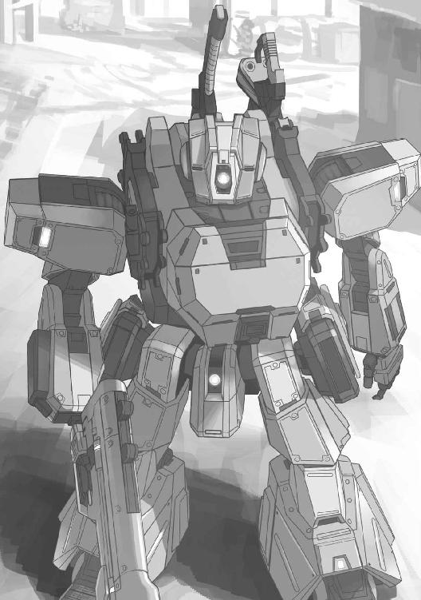
「いったい、あれは!?」
ユーリはシャフィーラに尋ねる。
『見てのとおりだ。そしてこれが、このミッションの目的だったようだ』
「なんだって、また！」
陽動だったのか。ユーリが感情を強めようとすると、
『勘違いをするな。私も降下一分まえに告げられた。新たな機体テストを、な。そのパイロットが誰かなど、問題ではない』
「機体、テストだって」
ユーリの感覚は、そのままリオンにも共通していた。いや、より強く作用する。
『クユラ！ そこにいるのだな、いま......！』
駆け寄ろうと、ヤクシャを近づけようとする。ユーリのガルムからは、もうすでに離れていた。
「あれには、あのＢＲには......！」
『そうだ。乗っているようだな。おまえたちがクユラと呼ぶ......その者が。あのアイアンフォートには』
シャフィーラの言葉はユーリの感覚をいまさらながら裏付ける。
アイアンフォートと呼ばれる新型ＢＲのコクピットに収まっているのは、まさしくクユラだった。
パイロットスーツに身を包み、ＨＭＤを頭にマウントしたその姿は、まぎれもないＢＲパイロットのそれだ。
蝋のように白い肌が、コクピット内のさまざまな計器のＬＥＤの彩りを映す。
シルバーの髪が、ときおり明るく輝いた。
その表情までは見えないが、コクピット内ビューに通信を接続したユーリは、
「クユラ......」
あのときの少女の面影、存在感をそこに、確実に見出していた。
ＢＲを見るなり直感したとはいえ、こうして画像を見せられると、そこには大きな感情の動揺を感じずにはいられない。
なにより、
（あのクユラが、あのときの......女が、どうしてＢＲに乗っている？ ＢＲを動かしてる。おまえは、いったい......）
だがユーリよりも、もっと心を揺さぶられていたのは、
『クユラ。いま、行くぞ。おまえをそこから出してやろう。おまえを、わたしが......！』
リオンだった。
つねに冷静で精強なリオンだが、クユラのことだけは違う顔を見せる。
クユラのＢＲに近づくヤクシャ。もうその距離は十メートルもない。「手」を差し出す。アイアンフォートの手を取ろうと、
『......』
ズヴュン......！ 空気が震える音が響いた。
クユラ機がその手にしたニュードライフルを撃ち放っていた。
むろん、その狙いは、
『な、に!?』
リオン機である。
高速で射出されたニュード粒子の塊はリオン機の頭部に命中し、無残にこれを吹き飛ばす。
『うっ......！』
それでも突進をやめないリオン機は、次弾までのリロードの間にクユラ機の至近に飛び込む。
ぶつかるように、機体と機体が接触した。
『聞こえるか、クユラ、回線を開け！』
リオンは強制的にクユラ機の通信に割り込んだ。
クユラのＨＭＤにリオンの顔がウインドウで開く。これでクユラが回線を開くのに応じれば、リオンのほうにもクユラの顔が映る。
果たしてクユラは、
『......』
手を伸ばすと、回線オンのスイッチに触れた。
リオンのモニターに、クユラの姿が映る。ただし、ＨＭＤをつけたままで、顔はわずかに口元程度しか見えない。
それでもリオンは、
『クユラ、間違いない！』
自らのＨＭＤを剥ぎ取ってカメラを見つめる。サブモニターに表示したクユラの姿に、
『顔を見せるんだ。クユラ、そのヘッドセットを取って。わたしに顔を......！』
呼びかける。
やや間があったあと、クユラはコンソールに置いていた手を上げ、自らのＨＭＤに触れた。ゆっくりと外すと、コクピットカメラの前にその素顔をさらす。
眉にかかったシルバーの前髪。
まばたきする目の、ルビーレッドの瞳がまっすぐに見つめて来る。
『クユラ』
リオンが、モニターのクユラに手を触れる。
その頬を指でなぞりながら、
『そのままだ。あのときの......！』
ともすれば感情がこみ上げるのを抑えているかのようなリオンに対して、クユラはずっと無表情だった。
その目がカメラを見ているのか、カメラを通してリオンを見つめているのかさえ、わからない。
リオン機は、クユラ機に接触しているというより、抱きしめているように見えた。
『わからないか、思い出せ。わたしはおまえの側にいた。わたしとおまえは、同じセルから生まれた』
リオンの言葉は、ユーリにも聞こえた。
「何を言っているんだ。あいつ、リオンは......」
だがユーリにも、まるでリオンのその言葉が引き鉄のように、湧き起こって来る感情がある。
（クユラの、小さいころ......その横顔を、オレは、見ながら）
なぜなのか。
「記憶」がよみがえって来る。
幼いクユラが、振り向く。
ユーリを見上げる。その手と、手をつなぐ。
小さな指は、一生懸命に握りしめているのに、まるでユーリの手をくすぐっているみたいで......、
「あの、とき」
まだ小さいクユラは前髪を切り揃えられている。その顔が夕陽に染まる。大きな瞳が、あふれるオレンジ色の太陽を湛えていた。
（そうだ。ずっとクユラといっしょにいた。クユラは、オレの......）
『思い出したか、クユラ。おまえは、わたしの......！』
リオンの声が聞こえる。
ユーリはまるで自分が話しかけている錯覚に陥った。
気づいて、
「あい、つ！」
機体を発進させようとした。リオンとクユラのもとへ。ふたりを引き離さなくては、ふたりを引き離してでも......。
『リオ、ン』
クユラの唇が動いた。
小さく、つぶやく。
『そうだ！ クユラ、思い出したのだな！ わたしたちは......』
ガジュッ......。
肉に食い込むような鈍い、深い感触が伝わる。
その想像どおり、リオン機の胸にリヒトメッサー系のショートソードが深く食い込んでいた。
刃にあたるエッジの分子を振動させて複合素材をも斬り裂くソードは、ヤクシャの装甲をやすやすと貫く。
コクピット前面ハッチを、まるで軟質素材でもあるかのように押し斬ると、ソードは内部のコントロール危機類を粉砕しながらリオンに迫る。
『ぉぉぉおああっ！』
サブモニターから飛び出して来たような切っ先が、リオンの頬をかすめて、かろうじて止まった。
ジジジジジ......。まだエッジの分子が振動し、熱を放って白化している。
リオンの頬から血が溢れる。
「おい、だいじょうぶか！ リオン！」
呼びかけたのは、ユーリだった。
『き、貴様......！』
装甲の裂け目から見える、ユーリのガルムをリオンがにらむ。しかしリオンにもわかっていた。
ショートソードを振るったのはクユラ機だ。
そしてソードがリオンの身体を真っぷたつにしなかったのは、すんでのところでユーリがクユラ機の腕を押さえたからだった。
『なぜだ、クユラ！ わたしがわからないのか。......まだ、真に目覚めてはいないということか。それとも、ヤツらに何かされたのか。そうなのだな！ やはり、あいつらを許してはいけなかったのだ！』
『あいつらって誰だよ。そういうのが多すぎるんだぜ、おまえらの話は！ スッキリ話せよ！』
ユーリの言葉に、
『わからないのか。知らない......そうだな、そうだとも！ おまえはただ偶然、あの場所にいただけの通りすがりだ。クユラともともと何の関わりもない。ただの、無関係の、他人だからな！』
なぜそこまで強調するのか、反発するリオン。
しかし当のクユラは、
『......』
無言で、なにも答えない。
モニターに映る顔も、少しも表情が変わっていなかった。
「おい、どうなってる！ クユラはいったい」
『わかった。いまはまだ早い。そういうことだ。しかしクユラ、おまえの状態もこれでわかった。いずれ、改めて迎えに来るとしよう。わたしはいつでも、おまえを取り戻すことができる。それまで、預けよう。わたしの......花嫁よ！』
リオンのひと言は、ユーリを打ちのめす。
「花、嫁......だと。おい！ 聞いてんのか、オレの話を！ 花嫁ってなんだ？ おまえとクユラは、どういう......まさか、うっ！」
ユーリは、すんでのところで機体を離した。
リオン機がＭ99サーペントを連射しながら、後ずさる。瞬間、ユーリは気づいたが、もう少しで致命的なダメージを受けるところだった。
頭部を失っただけでなく、コクピットにも重大なダメージを負いながら、ヤクシャの動きは速い。
ヤクシャの本来の機動性もさることながら、リオンの操作で、あっという間に遠ざかっていく。
とはいえ、
「逃がすか！ 洗いざらい吐いてもらうぜ！ クユラのこと......おまえとクユラの関係とかをな！」
追いかけるユーリ。
しかしガルムが施設の屋根を超えたところで、
「ぅわっ！」
稜線を超えて、猛烈な射撃を浴びた。
撃っているのは、
「セイバー、二機か！ まだいやがったのか！」
考えてみれば、坑道の外にもＢＲを待機させていないはずはなかった。
それらは身を隠しながら、リオンの退路を確保していたのだろう。だが、
「このエリアから出られると思ったのか！ シャフィーラ！ アビー！ カイラも、奴らの足を止めろ......」
追うのを諦めていないユーリだったが、すぐにそれが不可能なことを悟る。
稜線の向こう、ＢＲが浮かび上がった、と思うと、
「ワフトローダーだ、って!?」
小型のＢＲ搭載型航空プラットホーム。
ＢＲを搭載して、ＶＴＯＬ機動までできる強襲戦闘兵器だ。小型とは言っても、並の戦闘機よりもよほどボリュームがある。
「あんなものまで用意してたのかよ！」
ワフトローダーは二機。
一機には中破したリオン機とセイバーが乗っている。ユーリのガルムをかすめるように飛び来ると、
「のわっ！」
ガトリング砲の一斉射までお見舞いして来た。
直上を通り過ぎるワフトローダー。
振り向きざまに、ユーリがライフルを撃ち放とうとするが、もう豆粒ほどに離れてしまっていた。
「......行っちまったか。まぁ、撤退の手段を確保してないわけはないからな」
ガルムが空を仰ぐ。
もうワフトローダーは二機とも見えない。
どこかでさらに大型の輸送機とランデブーし、収容されて撤収するのか。
（あいつには聞きたいことがいっぱいあったんだぜ）
「いや......」
姿勢を変えて、振り返る。
そこにまだ、クユラのＢＲがたたずんでいた。
夢ではない。
あの中にクユラがいる。それを感じる。
「そうだな。聞くんなら」
クユラに聞けばいい。直接。それだけではない。
緊張が解けると同時に、不意に思い出した。
「あー！ 慧玲！」
リオンのＬＥ―ブリッツァーで撃破され、擱座したままの慧玲機。致命傷ではないと思うが、無線が故障したのか、あれきり声を聞いていない。
「慧玲！ だいじょうぶか！」
走り寄ろうとするユーリ。その慧玲はといえば、
『ちょ、っと！ 何やってるのよ！ 早く助けなさいよ！ もぉ！ 無線は調子悪いし、コクピットハッチは開かないし、エマージェンシーエグジットも使えないって、どういうこと!? 欠陥品なの？ ああもう、暑い！ 窒息しちゃう！ そのまえに、肌がべとべとして死んじゃう！ 早く開けて！ ここを開けてってば！ ユーリ！ あんた、そこにいるんでしょう、あたしのバディーなら......！』
ダメージによる故障で、手動でも開かなくなった慧玲機のハッチをこじ開けるのに二十分。
その間ずっと、ハッチが開いてからもたっぷり三十分以上、ユーリは小言を聞かされることになったのだった。
「......とんでもないお荷物を背負い込んだのかもしれないな」
シャフィーラがつぶやく。
コクピットハッチを開け、ＨＭＤも持ち上げて、裸眼で見つめるのは夕陽を浴びて動かないクユラ機だ。
「爆弾かも、しれませんね」
いつの間にか寄り添うようにＢＲを止めたカイラシュが、同じようにコクピットを開けて言う。
「ユーリが」
言いかけて、シャフィーラの言葉が途切れる。
カイラシュもあえてその続きをうながしはしない。代わりに、
「でもいいではありませんか。見守りましょう。なるようにしかなりません。......人の、心は、ね」
「人の心は......そうだな」
夕陽が丘の稜線に差し掛かって、最後の眩しい光を投げかけて来る。残ったＢＲたちがシルエットに染まりつつあった。
１
「名前は？」
「......クユラ」
「クユラか、名字はなんだ？」
「クユラ」
「それは名前、ファーストネームだ。ファミリーネームを聞いている」
「クユラ」
「......もういい」
テーブルを挟んで、シャフィーラとクユラが向かい合う。
しかしここは中隊本部ビルの地下にあるシャフィーラの部屋ではなかった。
テーブルも、脚の短い、いわゆる座卓だし、床もコンクリートやフローリングではなく畳だ。
壁は漆喰だったり襖だったり、床の間もあり、縁側からは小川の流れる庭が望める。
時折聞こえるのは、鹿威しの音だ。
こんなだから、畳の上に直接腰を下ろしたシャフィーラとクユラが、いつもの軍服と、ＢＲパイロットスーツというのはいかにもミスマッチ、をもはや通り越して、奇妙と言うほかない。
「けっきょく何もわからないというのだな。派遣資料を見ても、身体データ以外は空白のままだ。出身、経歴、家族、それに住所もすべて、ナシ。これでよくマグメルの審査を通ったものだ。......ただし、傭兵としての適性はオールＳ、か」
シャフィーラは手元のタブレットでクユラの資料らしきものを見るが、お手上げだ、というように小さくため息を漏らす。
伊豆・伊東の温泉旅館。
ここにマンティコア中隊は「駐屯」している。
廃坑でのニュード鉱脈探査ミッション、さらにリオンのＢＲ隊との戦闘から三日が過ぎていた。
その間、マンティコア中隊は浪速特市のベースへ戻ることなく留め置かれ、さらに今日、この伊東へ移動して来たのだ。
「......」
シャフィーラの問いに、クユラはいっこうに表情を変えない。
「わかった。これ以上は意味がないようだな。それに......おまえたち」
シャフィーラが視線を向けるのは部屋の向こうの、廊下へ通ずる襖だ。
うっすらと開いている。
シャフィーラが見つめ続けていると、観念したように襖が開いた。
「へっへへ、見つかっちまったか！ でもほら、まぁ、新人がどんなのか、興味があるだろ、なぁ、慧玲」
「だから！ どうして慧玲がこんなことしなくちゃならないの？ 興味なんてないわよ。アビーが無理やりまた引っ張って来たんじゃない！」
そこにいたのはもちろん、アビゲイルと慧玲。
「なに言ってんだ。自分から耳を当てて聞いてたじゃないか」
「アビーが隙間を独り占めして見えなかったからでしょお！ せっかく来たんだから、話くらい......しかたなくよ、しかたなく！」
隠す気もないアビゲイルと、顔を赤くして否定する慧玲。
そのふたりを背中に、振り向きもしないクユラ。
そんなクユラをまた、シャフィーラはながめていたが、
「終わりだ」
「は？ 終わりって？」
クユラに代わって尋ねるのはアビゲイルだ。
「尋問......質問は終わりということだ。いろいろ聞き出そうとはしてみたが、本人も何も知らないようなのでな。時間の無駄なようだ。無駄なことはしないのが私の主義だ。よって、クユラ、おまえについての調査、詮索は今後いっさい中止......というよりは、無駄、ということだ」
「じゃあ」
とは、クユラ。
「好きにしろ。中隊の規則、ミッションなどの義務を果たせば、あとは勝手に好きなことをしていい。あとは」
「あとは？」
「わたしの命令に従うことは、中隊の規則に含まれる。そこで私の命令だ。追って指示があるまで、着替えて待機。待機中は通信デバイスを携行し、十分以内に出頭できる範囲内に......ようするに、この町で適当に遊んでいろ、だ」
シャフィーラが言い終わらないうちに、
「おい、聞いたかクユラ。クユラっていうんだろ？ 来いよ。せっかく温泉に来たんだ。ジャパニーズな風呂っていうのに入らないとな。入ったことないんだろ？ あたしもないんだ。ハハッ！ ハハハハッ！」
アビゲイルがもう部屋に入り込んで、クユラの手を取る。
「温泉......？」
「おう！ 行こうぜ！ その暑苦しいパイロットスーツも脱がないとな。たまげたぜ。あの戦いのあと倒れて、今朝までずっと眠ってたんだってな。なおさら風呂でさっぱりしないとな」
「これしかない、の。でも、これならいっぱい、ある」
「そのへんもあたしが見繕ってやるよ。とにかく、行くぞ。じゃあシャフィーラ、この子、しばらく借りるからな！」
「壊さない程度に、な」
というシャフィーラの言葉も、アビゲイルには聞こえたかどうか。
「そら、行くぞ行くぞ！ まずは露天風呂ってのに行ってみようぜ！ お湯が白いんだってよ！ なぁ、慧玲！」
「だから、なんで慧玲がいっしょなのよ！ 慧玲はひとりで行くから、ほうっておいて......わ、わかったわよ！ どうせこの無口女もいっしょなんでしょ！ はいはい、行くわよ、行きますからぁ！」
やがて慧玲も伴って、嵐のような一団が去っていくと、畳敷きの部屋にはふさわしい静謐が戻った。
カコン！ 鹿威しの音も、よく通る。
そこへ、
「あらあら、えらく騒々しいことでしたねぇ」
別の襖が開いて、出て来たのはカイラシュだ。すでに浴衣に着替えている。
じつはふた間続きの部屋で、奥の部屋は寝室として使う造りだ。シャフィーラとカイラシュの部屋だった。
「ああ。いまはこれでいい。それにしても」
「なぜスパ......温泉、たしかにそう思いましたけれど。でも初めてですが、とてもいいところですね」
シャフィーラのとなりに腰を下ろすカイラシュ。
きちんと正座はできないのか、横に崩した座り方で片手を畳につく。もう片方の手で、アップにした髪のほつれをかきあげた。
「まったくだ。それもあのミッションから間を開けずの移動だったからな。どうやらマグメルは、クユラをしばらく隠したかったらしいが」
「こんな温泉地で、隠すことなんてできるのでしょうか。この旅館は貸し切りですけれど、街は人目もありますし。でももしかしたら、そのほうがかえって目につきにくいのかもしれませんね」
「そういう計算もわかるが......しばらくは保養もかねて、この地でゆっくりするしかないようだ。クユラがチームに馴染むのか、そうしたことも、おいおいわかるだろう」
「ええ」
カイラシュは微笑むと、シャフィーラの手に手をかさねる。
迷ったように一拍間があったが、シャフィーラもまたカイラシュの手の指に指をからませる。
「そうとなったら、シャフィーラもその無粋な軍服を脱いだほうがいいですね」
「これはわたしの制服のようなものだ」
「傭兵としてはそうでしょうけれど、いまは温泉でゆっくりしているのですから。まだお湯にも入っていないのでしょう？ この部屋の縁側にしつらえられているお風呂が、ふたりでも余裕で入れますよ」
「それは、あとから入ろうと思っていた」
「なら、いまどうです？ わたしももう一度、入ります」
「いまは......」
「クユラはアビーたちに預けて、なにか今することがあります？」
「いや、ないが」
「だったら......はい」
カイラシュが先に身を起こして、手を差し伸べる。その手をとって、シャフィーラが立ち上がった。
「しかた、ないな」
褐色の肌の、頬がほんのり赤く染まっていた。
「温泉ってなんだ。だいたい温泉って」
ぶつぶつ言いながら湯に浸かっているのはユーリだ。
ひと気のない大浴場。
本来、百人ほどが一度に入っても余裕のある広さだ。
湯船も大きなものだけで、三つもあり、ほかにジャグジー、水風呂、サウナ、打たせ湯、低温風呂などがそろっている。
ユーリが全部の風呂を試したあとも、他の客は誰ひとり入って来ない。
「旅館全部が貸し切りってわけか。団体ツアーか、オレたちは。にしても、唐突過ぎるだろ。いちおう訓練ってことみたいだが。だいたい何でオレだけ別便なんだ」
ちゃぽん......。たっぷりのお湯をすくっては、こぼす。汗の浮かんだ額を手の甲でぬぐって、
「これじゃただの温泉旅行だぞ、こんなの。こんな......！」
誰に対してなのか、ひとしきり訴えたあと、急にテンションが切れたように、
「まぁ、いいかもな、たまには」
吐き出すユーリ。
目を閉じる。
「......いい湯だ。ちくしょう」
２
「どうだ、いい湯だろう！ ハハハハッ！」
アビゲイルの声はエコーがついたように反響する。もともと大きな声が、もっと響くようだ。
こちらは女湯。
小屋掛けの露天風呂で、眼下には渓流が一望できる眺めの良さ。石造りの湯船の端、もたれるようにアビゲイルが湯に浸かっている。
話しかけている相手といえば、
「......」
すぐ近くにクユラ。そして少し離れて、
「なんで慧玲が......ぁ、でもいいお湯」
慧玲が、それぞれ白濁した湯に肩まで身を沈めている。
無造作に頭の上で結んだ髪を揺らしながら、アビゲイルはクユラに向き直る。
「それで、あのリオンってＢＲのパイロットは、クユラ、おまえのなんなんだ？ ユーリとも、なんかあったんだろ」
問うと、クユラもまた、アビゲイルを真っ直ぐに見つめる。
「リオン......わからない」
「でも撃ったよな。コクピット直撃のソードは、ユーリが止めなかったら確実に殺してたぞ」
まるでなんでもない、スイーツや世間話のように言うアビゲイル。慧玲は、背中を向けながら聞き耳を立てている。
「殺す......ううん」
「ううん、って、わからないのか。シャフィーラの言ってたとおりだな。ま、いい。あたしのは単なる興味だ。詰問でも尋問でもないさ、強いて言えば、うーん、ゴシップ、かな。ハハハハ！」
「よくないわよっ！」
アビゲイルが笑って受け流そうとするところ、突然割って入って来るのは慧玲だ。クユラの眼前に立ちはだかり、
「あんたまさか、ユーリと何かあったんじゃ......」
肩をつかみかからんばかりに迫る。
が、当のクユラは、
「何かって、何」
どこまでも無表情。マイペースとこれを言うならマイペースのきわみ。
「おい、なんだ慧玲。興味なかったんじゃないのか。ひとりで入浴したいから構うなってさっき」
いらだつ慧玲だが、アビゲイルが口をはさむと、
「それはそれ、これはこれでしょお！ この際、はっきりさせておきたいのよね。わけありとか意味深とか、イヤじゃない！」
「そうか、あたしはどうでも」
「慧玲がイヤなの！ ユーリとかどうでもいいけど、この無表情、無感情女となにかあったんなら、そういうふたりが隊にいるっていうのは、同じミッションを戦う中隊の一員としては......！」
「なんだ慧玲、おまえユーリのこと、好きなのか」
「はぁぁああああ!?」
大きな慧玲の目がさらにふた回りほど大きく見開かれ、アビゲイルを凝視する。しかしあまりにショックだったのか、舌が震えて言葉が出てこない。
やがてようやく、
「な、な、何！ 何言っちゃってるのよぉぉおお！ どうしてあたしが、慧玲が、ユーリなんかのこと。......それは、慧玲のアイドルのこととか、認めてくれたり、戦いでは守ってくれたし、年下のくせして、慧玲を叱ったり......で、でも、慧玲だってあいつのこと、助けたんだから！」
「ほおー。ほお、ほお、その執着ぶりは、好きってヤツだろ。恋か。それとももう、キスくらいしちゃってるのかぁ？」
一転、冷やかしモードのアビゲイル。ニヤニヤと歯を剥き出す。楽しくてしかたないというふうだ。
「き、キスとか！ するわけないでしょお！ アイドルにそういうの、ＮＧなんだから！ 恋愛禁止よ！ 誰ともキスなんて」
「ありゃ、じゃあまだ慧玲は生娘ってわけか」
「き、き......!!」
「さっきから〝き〟ばっかりだな」
「きむ！ すめとか！ そ、そんなわけないじゃない！」
「えっ、じゃあもうユーリと」
「......!!」
わざと真剣な表情を向けるアビゲイル。
慧玲はみるみる赤くなると、わなわなと全身を震わせた。もともと湯に浸かって、ピンクに上気した肌が、びっくりするほど朱に染まる。
「どうした、だいじょうぶか」
「ば......」
「ほお」
「ば、バカぁぁああああああああ!!」
なぜか進退窮まった慧玲が、思いきり両手で湯の水面を叩く。バシャァ！ 大きな湯の水柱が上がった。
「うわ、やめ！」
「......！」
飛沫を顔いっぱいに浴びるアビゲイルとクユラ。湯船の中、思わず立ち上がるふたり。
「だから！ 慧玲とユーリはなんでもなくて、じゃなくて！ 慧玲が聞きたいのは、あんたとユーリがどういう......」
慧玲はそこまで言ってクユラを見る。
ちょうど手が届くほどの距離で向かい合うふたり。
慧玲が見つめる。その視線が、頭まで浴びた湯で濡れたクユラの髪から、顔へ、そしてその下へと降りて行く。
そこで止まった。
「あら」
じっと見つめる。穴のあくほど見つめる。
「......？」
クユラは手で顔も身体も隠さない。
慧玲の視線はあきらかに、水面から上のクユラの裸身に、とくにその胸に集中していた。
「ふっ」
息が漏れる。
慧玲の口の端が、小さく持ち上がった。なぜか勝利を確信したような自信が表情に表れる、みなぎる。
「？」
クユラのほうは、さっぱりわからないというふうだ。
もともと表情にとぼしく、自分から発言することのないクユラだが、直感はするどい。それでも慧玲の意図がわからない。
「ふふーん、まぁ、そうね。あんた、幾つだったかしら」
「十五」
「十五歳？」
「たぶん」
「そう！ まだお子様ね！ 慧玲よりふたつも年下だもの、しかたないわね！」
確かめるように自身の裸身を見下ろすと、さらに確信を得たようにうなずく。得意げに、ふんっ、と顔を振ると、慧玲の跳ねたような髪が揺れた。
急に余裕が出て来た慧玲だが、
「いきなりお湯をかけるなって、ほうら！」
がっちりとアビゲイルにつかまれる。
横抱きのような軽い羽交い絞めで、ふたりの裸身が密着する。健康的なアビゲイルの小麦色の肌と、対照的な慧玲の白い肌。
とくに、ぶつかりあうように混じり合った胸では、筋肉質とはいえトップ九十センチＦカップのアビゲイルに対して、Ｃカップを超えるかどうかの慧玲の胸は、どう見てもつつましやかだ。
「あ、アビー！ あんたは関係ないじゃない！ あたしとクユラの問題なんだから！」
「ほぉー、てことはやっぱりだ。慧玲とクユラの間にはユーリがいるんだろ？ だから問題なんだよな。こういうの、なんだっけな。えーと......トライアングル！ 三角関係、だったか！」
「三角......関係」
「ば、バカ！ ありえないっていうの！ だから違うってば！ ユーリの、あいつのこともそうだし、だいたいアビーには関係ないって、さっきから......！」
「あたしには関係ないって？ なんでそう言えるのさ。あたしだって、ユーリのことをちょっとは気にしてるんだぜ」
アビゲイルがニッ、と歯を剥き出す。
「え、まさか！」
焦る慧玲。まったくノーマークだったところから、とんだ伏兵が現れた、そんな驚きを隠せない。
「隙あり、だぞ、慧玲」
すっ、とアビゲイルが腕を慧玲の首にからませる。もともと羽交い絞めっぽかったのが、本格的な絞め技に変化する。
「ちょ、っと！ やめ......ぁああっ、痛たたたたた！」
「ハハハ、ハハハハッ！ だいたい、生娘は自分たちだけ、っていうのも気に入らないよな。なんであたしがハナから除外されてるのさ。そこんところも、反省してもらなわいとなぁ」
「ええっ？ 何なの！ 痛っ、痛い！ 痛いってばぁ！」
どうやらアビゲイルの最後のところの言葉は、聞こえていなかった慧玲だ。
「......楽しそう」
そのころのユーリ。
「ん、ん、く......ふぁーっ！」
男湯の脱衣場。
タオルを腰に巻いたままで、買ったばかりの飲み物をいっき飲みしていた。しだいに角度がつくうちに、腰に手を無意識に当てている。
飲み干して瓶を眺める。
「フルーツ牛乳か。けっこういけるじゃないか。ん？ 無果汁......」
複雑な思いが込み上げる。
「ま、いい」
空の瓶を自販機の隣の専用ゴミ入れに捨てると、
「午後はミーティングがあったっけか。にしてもまだ時間があるな。もうひとっ風呂浴びるにも、風呂は全部の種類に入ったし」
ふと横を見ると、『露天風呂』の看板。
「ここから通じてるのか？ 露天ってことは外に造られてるんだな。あんな大きな浴槽を外にも」
欧米にも野外に設けられたジャグジーなどはあるが、何十人もが一度に入れる大型の湯船はない。
「行ってみるしかないだろ！」
確信すると、露天風呂へ通じる暖簾をくぐって、通路を降りて行くユーリ。
３
「痛い、アビー、痛いからぁ！ 離してよぉ！」
「ハッハハ！ ギブアップ？ だいたいあたしのこと、最初から除外してる慧玲が悪いんだからな！」
「......」
悲鳴を上げる慧玲。笑うアビゲイル。ふたりの前でたたずむクユラ。
とうぜん、露天風呂の湯船の中だ。
貸し切り状態とはいえ、プロレスでいうところのコブラツイストあるいはグレープヴァインの形に裸身をからめあっている美少女ふたりというのは、そうとう異様だ。
もちろん本気でアビゲイルが技をかければ、慧玲は軽く窒息状態に陥ってしまうだろうから、かなり手加減している。
それでもかなりの苦痛のはずだが、
「そういえば、もうユーリとは直接話したのか」
と、クユラに向ける。
「......ユーリ、ううん」
「ちょっと、なにふたりで話し始めてるのよ！ 慧玲を離して！」
「いや、いちおうクユラとユーリはここまで隔離されてただろ。隔離って、言うと大げさだけどな。ユーリだけ別便で来たってのは、そういうことなんだろうし」
「えっ、もうあいつが来てるの？ って、痛たたっ！」
「来たんじゃないか。もっとも、部屋も棟違いだし、晩飯のときくらいしか会わないかもな」
あいかわらず、コブラツイストを掛けながら、掛けられながらの器用な会話。
そのふたりを前にして、
「......ユーリ、来てる」
つぶやくクユラ。
「そら来てるだろ。もうひとっ風呂浴びてるころかもな」
「来てる。近い」
アビゲイルの言葉にクユラはそう言うと、視線を巡らせた。クユラが目を向けたのは、露天風呂の端にある、小さな扉だ。
湯船のその先、植栽で細く折れ曲がった向こうに、萱を張った扉があった。草庵の入口のようなこの扉が、クユラの見つめる先で、開いた。
開けたのは、
「おおっ！ ほんとに露天風呂だ！ すごい開放感と景色じゃないか。こんなふうになってたのか！」
言いながら出てくる、その人、ユーリだった。
腰に濡れたタオルを巻いただけ。そのタオルも、さっそく湯船に入ろうとして、自分から取り去ってしまっている。
果たして、ちょうど腰まで浸かったあたりで、
「ユーリ」
「ぇ、ユーリって......ぇぇぇええええ!?」
「あっ、おい、マジかよ」
三人が気づく。いや、クユラはもっと早く気づいていたが。
そしてユーリも、
「へぇ、いい湯で......はっ!?」
気づいた。
三人とひとりが、向かい合う。固まる。
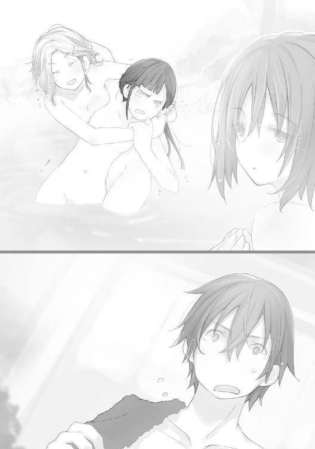
その距離、およそ人ひとりの身長分。およそ、二メートル。
「ここ、女湯だった、のか......いや、そんなことどこにも書いて」
うわごとのようにつぶやく中にも、ユーリの目をとらえたのは、
（クユラ......！）
コブラツイスト組からひとり離れて、ユーリを見つめている。しかしその姿は、同じく全裸。
しかしそれが、ユーリの脳裏にあのときの光景を蘇らせていた。
四条重工本社警護ミッションの夜。
大破したコンテナ車の中、カプセルの中に入っていた少女。透明カプセルの中、たっぷり封入された保護液のせいか、素肌も青白く見えた。
小さな波に洗われるようにシルバーの髪がたゆたう。
あのときのクユラと、いま目の前で湯船から半身を露わにしているクユラとが、ユーリの意識の中で重なり合う。
「クユ......」
しかしごく間近に、コブラツイスト組のふたりも。
ついまたそちらにも目が行ってしまい、
「え、えっと。これ、って、どういう......」
言っていいのかもわからず、それだけ口にするのが精一杯のユーリに、
「まぁ、な！ なんていうか、温泉健康法っていうのかな！ ハハハッ！」
「そ、そう！ そうよ！ こうやってふたりひと組で、関節とか筋肉を伸ばすの、って......そんなわけないじゃない！ きゃぁぁああああっ！」
取り繕おうとするアビゲイルに慧玲だったが、もはやバツの悪さと羞恥は限界を超えて、悲鳴に変わる。
「ぉ、ちょい、待て......！」
「待たないわよ！ なに見てんのよ！ こっち見ないで！ バカぁぁぁああああっ！」
「おい慧玲、暴れるな、って、うわっ！」
バシャッ！ 慧玲が思いきり抵抗したせいか、コブラツイストは崩れて、アビゲイルごと湯の中に没した。
「だいじょうぶ、なのか......ぇ」
いちおう心配すべきか、迷うユーリ。その胸に、
「......」
クユラが、身を寄せていた。
というよりももう、抱き付いていた、が近い。ユーリの首や背中にこそ腕を回してはいなかったが、ぴったりと素肌が密着している。
「おま、え......クユラ」
「ユーリ」
クユラはユーリの肩に顔を埋めながら、まぶたを閉じている。
間に挟むものもなく押し付けられた肌は、クユラの胸の控えめな丸みと感触を伝えてくる。
（これって、クユラの）
トクッ、トクッ、トクン......。規則正しく打つ胸の鼓動までも。
そのときユーリは思った。
（生きてる......人間、だ）
あたりまえのことなのに、それがひどく新鮮で、驚きを伴い、また震えるほどうれしい。
触れ合った肌からは、確実に体温までもが伝わる。温泉の湯で温められた、火照った肌が心地よい。
「ユーリ」
「クユラ......」
クユラがわずかに身体を離し、ユーリに顔を向ける。ごく間近で向かい合う。少し仰向いたクユラの顔と、やや見下ろすようなユーリが、視線を合わせる。
真っ直ぐに見つめ合う。
お互いの瞳に相手の顔が視線までもわかるほどに、はっきりと映る。
「ユー......」
クユラの唇が動いて、何かを待つようにほころんだ。
再び目蓋が閉じて、長い睫が震えると......、
「こぉぉらぁぁあああ！ 何してんのよ、あんたたちはぁぁあああっ！」
ゴポァッ！ とつぜん、足元の湯が大きく盛り上がったと思うと、中から飛び出して来たのは、
「うわ、慧玲!?」
「慧玲じゃないわよ！ 何してんだって、のよぉおお！」
叫びざま、慧玲の鋭いスピニングトゥキックが繰り出される。下から切り裂くように円弧を描き、ユーリとクユラを襲う。
「......」
クユラはしかし、なんでもなかったように半歩下がって回避。ユーリは、
「くぉわっ！」
見事に慧玲のかかとが頬にヒット。
そのまま頭を湯に叩きつけられるように転倒した。
ザッパァッ！ 派手な水柱が広範に上がり、湯船全体に大きな波がうねった。
「お、おい、慧玲っ」
飛沫を手で受けながら言うアビゲイルも、
「ふんっ！」
キックのあと、湯船の中、仁王立ちの慧玲も、
「コポコポコポ......」
湯に顔をつっぷしたまま、動かないユーリに気づく。うつぶせのまま、ぷかぁ......水面に浮かび上がって来た。
「えっ、ちょっと......ユーリ、何ふざけてんのよ、ユーリ!?」
「やばくないか。おい、生きてるかー、って、お、っと」
ザバァ......！ ユーリを引っ張り上げるアビゲイル。背中から抱え上げる。
「ちょ、っと！ ちょっとってば！ ユーリ、だいじょうぶなの？ ふざけてないで、目を開けなさいよね！」
蹴った当の慧玲も、急に心配になってユーリを揺さぶる。
しばらくして、
「ぷは、ぁ......！」
ごぽっ、口から湯を吐きつつ、目覚めるユーリ。
いつの間にかクユラは、その姿を露天風呂から消していた。
４
午後のミーティングにもクユラは姿を見せなかった。
そうするうちに、もう夕食の時間になる。
いかにも温泉旅館らしく、大広間に膳が並べられての夕食。
「広いディナールームだな。あたしたちには広すぎるみたいだ」
アビゲイルの言うとおり、百人は入れるような畳敷きの広間の端に、ちんまりと六人分の膳が向かい合うように並べられているのは、なんともおかしな光景ではある。
そのうえ席についているのは、クユラを除いて五人だけ。
全員が浴衣と羽織の温泉スタイルだった。
「まぁ、いろんなお料理が少しずつ食べられるスタイルなのですね。色もきれいで楽しいです」
「そうだな。それにしてもこのチョップスティック......箸、というのは」
「箸なら慧玲は子供のころから使ってるから、得意なんだから！ ......ちょ、っと！ ユーリ、なに突き刺してるのよ！ 行儀が悪いわね！」
早々に慧玲が、向かいの膳のユーリにつっこむ。
そのユーリはといえば、
「こんな鑓みたいな細いスティックが二本なんて、ものがつかめるわけないだろ。フォークみたいに、こう......」
どすっ、肉に箸を突き立てると、口へ運ぶ。
「ひぃっ！ なによそれ、信じられない！ 寒気がするわ！ こう......こう持って、挟むように。違うわよ！ こう......！」
かいがいしくユーリに箸の使い方を教える慧玲。眉をしかめながらも、どこか、というより全面的に楽しそうだ。
「弟でもできたつもりかよ、慧玲は」
わざと聞こえるように言うアビゲイルにも、
「慧玲の弟なら、もーっとかわいげがあるに決まってるけど、ね！」
と笑うだけ。
しばらくは旅館の懐石料理に舌鼓を打つ時間が流れていたが、
「クユラはどうした」
とうとう、シャフィーラがそこに触れる。
「それが、風呂から上がったあと、誰も見てないんだよな」
「正確には、お風呂でひと悶着あった、その最中に見失ったのよね」
「ひと悶着？ どうしたのですか？」
アビゲイルと慧玲の言葉に、カイラシュが反応する。かんたんにアビゲイルが説明すると、
「ユーリ、あなたはそれでいいのですか？」
水を向けられたユーリは、
「わからない」
とひと言。慧玲に教えられて、ようやく使えるようになった箸で料理を口に運びながら答える。
「慧玲の教えかたがいいからよね！ まだしばらくヘタでもいいのに......ぇ、なんでもない！ なんでもないったら！」
頬に朱を走らせた慧玲があわてて口を押さえる中、
「わからない？ でも、あまり心配していないようですけれど」
カイラシュがさらにうながした。
「心配、というより、彼女......クユラと話もしていない。オレだけ別便で来たし、さっきの露天風呂で会って、すぐにまたいなくなって、で時間もなかった。けど」
「けど」
「きっとその辺にいる。遠くへは行ってないから、旅館のどこかだ」
「わかるのですか」
「わかる、と言うと変な能力みたいに思われるかもな。そういうのとは違うが、なんとなくわかる、気がするっていうのか」
「じゃあ、ユーリのその能力......じゃないのか、とにかくその『センス』でもって、あの子、クユラがいまどこにいるか、捜し出せばいいじゃないか」
アビゲイルの言葉には、
「そんな簡単じゃない。探知機みたいなもんじゃない。感じが大きくなったから場所が近いとか、そんなに便利にわからないよ」
「なんだ。使えねえな」
「いや、ふつう使えないだろ、そんなふうには」
ユーリがいったん言葉を切る。少し間をおいて、
「えー、っと、なんでもなさそうだ」
「なんでもない、って」
「無事だってこと。少なくとも、危険が差し迫ってる感じじゃない。のんびりおだやか、っていうのかな。昼寝してるのかもしれないし」
「昼寝って、そんなこともわかるのか。やっぱすごくないか」
「だから、すごくないって。ビーコンみたいに役に立つわけじゃないし」
「いや、やっぱりスゲぇよ、な！ 慧玲」
あいかわらずアビゲイルとの会話は噛み合わないが、そうやってまた水を向けられた慧玲は、
「そうね、それだけじゃやっぱりよくわからないけど、なんだか......うらやましいって言うか」
「うらやましい？」
「ち、違うの！ そんなんじゃない！ ......だって、姿が見えなくたって、わかるんでしょう。それだけ想われてるってことじゃない」
「ほーら、やっぱり！」
「そうじゃないってば！ 想うって、恋愛のだけじゃなくて！ あるでしょう、無二の親友とか家族の繋がりとか、そういう、お互いに想い合っているから、伝わる、感じるっていうのかな。ぁん、もぉ、慧玲、なに言ってるのしら！」
自分で言いながら、もどかしく顔をしかめる。
「......そうですね。超能力みたいなものでなくて、もしかしたらみんな持っている、そんな感覚なのかもしれませんね」
「親友や家族、か。たしかに、母親には子供のことがある程度、そんなふうにわかるのかもしれないし。不思議はないかもな」
カイラシュ、アビゲイルも納得する。慧玲の言いたいことは伝わっていた。
「家族か」
めずらしくシャフィーラがそう言って嘆息した。
しばらく、誰が話すでもない時間が過ぎ、食器と箸の触れ合うかすかな音だけが響いた。やがて、
「まぁ、ここにいる五人みんな、家族なんてあってないようなもんだからなぁ」
「アビー」
「あたしは孤児院育ちだし、シャフィーラは内戦で家族が殺されて、カイラシュは親から売られたんだよな」
「アビー、ぃ！」
「慧玲は大スターの芸能人の両親が麻薬で......」
「ちょっと、アビー！」
とうとうカイラシュと慧玲ににらまれて、アビゲイルは口を閉じざるを得ない。
「なんだよ、どうせみんな知ってることだし、ユーリ、おまえもそんな、似たようなもんなんだろ」
アビゲイルに振られて、ユーリはむしろ、
「......みんな、そうなのか」
驚きを隠せない。
どこからどう見ても隙のないシャフィーラにそんな過去があったとは。カイラシュの身の上も本人から想像すらできない。
慧玲のアイドル志向の源泉は理解できた気がするものの、やはり悲劇だ。アビゲイルなど、さらりと言うが典型的な児童の不幸と言える。
耐性者ゆえの差別・迫害が重なっているとしても、やはり過酷な境遇を超えて来たのだ。
「オレは......」
言いかけたユーリに、
「いいっていいって。おおかた......酒浸りの父親のせいでまともな教育も受けられず、酷使された母親は死んで、酒を買ってこい、と父親に酒瓶で殴られそうになる。酒代をかせぐため犯罪に手を染め、いつしか貧民街の少年ギャング団のボスに成り上がり......まぁ、そんなとこだろ」
「ああ」
「そら、当たった！ て、おい、ほんとにそうなのか」
調子にのってまくしたてたアビゲイルだが、あっさりユーリが肯定するので逆に拍子抜けする。
「だいたい合ってる。ギャング団のボス、にはならなかったな。だいたい少年ギャング団ってなんだよ、マンガじゃないぞ」
「お、おい！ ほんとにほんとか。いまのストーリーで」
「だから、本当だって」
「な......んだ。ひねりのないヤツだな」
アビゲイルはようやく言うが、言うに困ってのセリフに聞こえた。
「ユーリ、あんたって」
慧玲も声を掛けようとして言葉を探している。
「ほらほら、いけませんよぉ。わたしたちは、いまに生きてる。いま、みんなとこうしている。いまがあるから、わたしたちがいる。でしょ？」
小首をかしげる、笑顔のカイラシュ。
しかしそのカイラシュも、かつて親に売られたというそのバックグラウンドは、一度知ってしまうと忘れられそうにない。
「そうだな。傷をなめ合う気はない」
シャフィーラが箸を置くと、身を起こす。
「過去を詮索する気もないし興味もない」
ユーリを見ると、
「クユラは、貴様に任せる。以上だ」
立ち上がり、背を向ける。大広間を出て行くシャフィーラに、すぐにカイラシュが続いた。
「それじゃあユーリさん、お願いしますね」
「......マジ、か」
５
大広間での夕食のあと、ユーリがあちこちをさまよっていたのは、慧玲たちから逃れるためもあったかもしれない。
ひとりでいると、気を利かせたアビゲイルが連れ出そうとしてくれるだろう。それも悪くないが、いまは少し離れたい。
いっしょにいる、側にいる、そうしたことの心地よさとわずらわしさ。
仲間のいる心強さも、心が浮き立つような楽しさも、わかり始めていた。
なによりユーリはいま、この中隊にいる。
だがまだ、すべてを受け入れ、受け入れてもらう気にはなれない。
「もしかしたら」
（誰もそんなことは、思っていないのかもしれないけどな）
シャフィーラ、カイラシュ、アビゲイル、慧玲......。
クユラ。
クユラの顔が浮かぶ。浜辺のコンクリートパイルからユーリは腰を上げた。夜空は満点の星を湛えている。
とうに、日付が変わるころに差し掛かっていた。
自分の部屋へ戻ると、
「あー、そうか」
まず布団を敷かなくてはいけないことに気が付いた。
時間になれば旅館の仲居が各部屋の布団を敷いて回るのだが、部屋に入られたくないユーリは断っていたのだ。
こういうとき、ベッドではない日本式の寝具が少しわずらわしい。
「しかたない」
部屋の玄関に通じる襖を閉め、別の面の同じような襖を開ける。
「どっちも同じ柄のドア（襖）で、迷わないのか」
言いながら、詰め込まれた布団の山に手を突っ込む。持ち上げようとして、
（ぅっ！）
奇妙な感触に、声を上げそうになる。手をひっこめ、跳び退いた。
「なん、だ!?」
一歩下がった位置から、押入れの中の布団を見つめるユーリ。
すると、
「......ぅ」
小さく声がして、布団と布団の間から浮かび上がるように、にゅ～っ、とそれが出て来た。
白くて丸い。
表面のきめ細かなクッションのような、丸みを帯びたふたつのものが上下に重なっている。ユーリがとっさに思い浮かべたのは、
（あんこ餅......）
旅館の部屋に案内されたときだ。頼んでもいないのに仲居の女性が日本茶を淹れてくれた。
そのとき、いっしょに出された茶菓子が、白い粉をまぶされた白く丸い餅だった。中にたっぷりの粒あんが入っていた。
もちろん、こんな大きな餅はない。
だから頭の中でクッションと置き換えたのだが、それにしてもこの、もちもち、すべすべした肌質といい......、
「肌質？」
自分で連想し、気づく。
ユーリは押入れに近づき、手を伸ばす。
ぺと、と触れると、あたたかく、吸い付くような絹肌が心地よい。絶妙の丸みが、つい撫でまわしたくなる。が、
「ぅお！」
ずるんっ、とさらに滑り出てくる。もうわかった。
腰から下、腿から上、つまりは人体の下半身の一部だ。
そしてその華奢で丸みを帯びたフォルムは、男ではなく女性、それも少女の身体に間違いない。
最初に布団の間から出て来たのは、ヒップのふたつの山だったのだ。
まるで餅を思わせる、磁器のような肌。といえば、
「クユラ！」
声が聞こえたのか、
「ん」
裸の尻が身じろぎする。グーッ、とのけ反るようにはみ出すと、ついにその胸や首、逆さになった顔までが。
「お、おい！」
そのまま床へ滑り落ちそうになって、あわててユーリが支える。というより、完全に布団から出てしまったクユラを、抱きかかえる形になった。
「なんでこんなところにいる。オレの部屋の、それも」
押入れの中。布団の中、だ。
「......眠くて。気持ちよさそうだったから」
クユラが答えた。
答えるのも意外だった。
（ちゃんと話ができるのか。だったら......）
「聞きたいことが......ぅ！」
勢い込んで問いただそうとして、ユーリは声を飲む。バッ、と顔を背ける。
もちろん、クユラがなにも身につけていないからだ。
生まれたままの裸で、ユーリに抱かれている。裸のクユラを、ユーリは抱いていた。
「なんで！」
言いかけて、クユラが消えたのは露天風呂からだった、と思い出す。あのまま、全裸のまま風呂場の外へ出て行ってしまったのか。
外から鍵をかけられないから、ユーリの部屋の表戸は開いていた。入り込むと、押入れの中へ、布団の中へもぐりこんだ。
「ありえない！ 三歳児だってこんな......」
言いかけてユーリは、じっと見上げて、見つめてくるクユラの瞳を改めて感じる。
三歳児、いや、赤ん坊のように透き通って、無垢な魂がその向こうにあるような気がした。
「だが、しかしだ！」
（なんでオレの部屋がわかった）
だからといって、この状況が許されるわけではない。
着崩したような浴衣姿のユーリが、全裸のクユラを抱えている。
いわゆる「お姫様抱っこ」に近いが、この際そんなことは何の言い訳にもならない。
「どうしたの」
クユラが下から見上げてくる。
相変わらず、その瞳に吸い込まれそうになる。
ふと視線を外すと、白い裸の胸が見えて、
「......ぅぅぅぅぅう！」
ブルブルブル！ 動物のように激しく首を振ったあと、ユーリは目をつむると、
「とにかく、服を着ろ！」
「どうして」
「どうしてって、ふつう......いや、とにかく服を着てくれ！ 着て、ください」
最後は頼み込むかのようになった。そうして、
「わかった」
ようやくのクユラの言葉に、ホッと肩をなでおろすユーリ。
（でも何を着ればいい？ クユラの私服は......アビーや慧玲とたしか同じ部屋だから、そこへ連れて行けば、って、このまま裸のクユラを連れて行くのか!? ダメだダメだ！ それだけはダメだ！ ぁ、いや、何もしてないし何もする気はないけど、でもダメだ！ 誤解が生じる行動はつとめて避けるべきで......）
「ぶつぶつ、何言ってるの」
どうやら口に出していたらしい。
「うああ！ いやなんでもない、なんでもないんだ！ そうだ！ この部屋にまだこの浴衣ってのがあったはずだ。それを着て、着せていけばアビーたちにも言い訳が立つ。なんでオレが言い訳しなくちゃいけないんだ！ いや、この場合とにかくだな」
「おしっこ」
「へ」
意外すぎる言葉を聞いた気がして、ついユーリが固くつぶっていた目蓋を開く。
しかし、
「おしっこ、したい」
聞き間違いではなかった。
少しも悪びれず、恥ずかしがるふうもなく、じっとユーリを見上げて見つめたまま、クユラは生理現象を訴えている。
逆にユーリのほうが赤面するほどだ。
「そうなのか。そうなんだな。じゃあ、浴衣よりまずトイレだ。この部屋にもちゃんとトイレがついてるからな」
クユラを抱いたまま、ユーリは外の廊下へ通じる玄関のほうへいったん出る。横の扉の前でクユラを降ろした。
「ここ」
「トイレだ。ＷＣだよ。日本じゃ、厠とか洗面所とか言うらしいがな。まさか、使い方がわからないって言うんじゃないだろうな。オレが」
一瞬、まだひとりで小用のできない幼児に、大人が抱えてさせる、その姿が浮かんで、ユーリはカーッと頭の中が灼けるように熱くなる。
だがクユラは、
「ひとりで、できる」
あっけなく言うと、裸のままトイレへ入って行った。
「ふぅ......」
額の汗をぬぐうユーリ。
「そうだ。オレは寝ようとして」
こんどこそ押入れから布団をひと組分降ろした。
畳の床に敷きながら、しかしハッとする。
「お、オレは何をやってるんだ。クユラがそこにいるのに、布団なんて敷いて」
元の押入れに押し込もうかと思ったが、
「違う！ まずこの浴衣を」
下の段に畳んで仕舞われていた浴衣を引っ張り出した。
「サイズは、Ｓ、か。すぐにこいつをクユラに着せて、それでもってアビーたちのところへ連れて行くんだ。それでＯＫ。間違いない！」
胸をなで下ろすが、
（それだとまたクユラと話ができない。せっかくふたりきりでいられるのに）
そう思って、いや、と首をまた高速で振る。
「話をするのは、またいつでも機会がある。いまは、身の潔白を証明するのが肝心だろ！」
潔白、と言って、口をギュッと結ぶユーリ。
そうこうするうち、襖の向こうから水を流す音、ドアが開く音がした。
「浴衣を......準備、よし！」
浴衣の襟元を持って広げ、待機するユーリだが、カラッ、と部屋へ通じる襖が開くと、クユラはそのまま入って来るなり、
「眠い」
ユーリがいま敷いた布団へ倒れ込む。
そのまま寝息を立て始めた。
「えっ!? 待て！ 待ってくれ！ 寝るならアビーたちの部屋で！ せめてこれを、浴衣を着てくれ！」
しかしもうクユラには聞こえない。
かすかに開いた花のような唇からは規則正しい息が漏れ、閉じた目蓋には、長い睫が震えていた。
「ダメ、だった......」
ユーリにできるのはもはや、クユラの裸身に掛け布団を掛けてやることくらいだった。
６
「ぅ......」
寝苦しさから目が覚める。
それでもなお身体を動かそうとしたユーリは、のしかかる重みを感じて、わずかに身を起こした。
（なんだ......）
残しておいた小さな灯りの下、ぼんやり赤く浮かび上がる視界。
かろうじてかけた毛布をはぐるとそこに、
「のぉわ！」
小さな白い顔。
もちろんクユラの顔だ。ユーリに抱き付くように密着している。
「まずい！ でもなんで」
思い出した。
けっきょく布団をクユラに取られたユーリは、部屋から出ようとして思いとどまる。
このままクユラをひとりにしておくのは、いろいろとよくない。
（目が覚めたら、またどこかへ行っちまうかもだしな）
かといって、気持ちよさそうに眠っているクユラを起こすのも忍びない。アビゲイルたちに報せるにしても、目覚めたあとでもいいだろう。
では自分は、というと、
「いっしょの布団で寝るわけには絶対いかないし」
幸い布団はもうひと組あったが、クユラの隣に敷くのはためらわれた。
けっきょく部屋の隅にあった座椅子にもたれて、毛布を胸元までかけた。二、三度あくびをするころには、ユーリも寝入ってしまう。
そして、いま。
「クユラ、いつのまに！」
ほとんと座椅子から崩れ落ち、畳の上に寝ていたユーリに、いつのまにかクユラが寄り添い、さらにはのしかかっていた、のが正解らしい。
スマート端末に手を伸ばし、画面を見ると、日付はとうに変わっていた。まだ陽は上っていない。
幸いなことにクユラは浴衣を着ていた。といってもかなり寝乱れてはいたが。
「ぅ、ん......？」
クユラも目を覚ます。眠そうな目をこすって、ユーリを見上げる。
「そうか。浴衣、着たんだな。自分で着られたのか。よかったな。といってもこの現状は......ま、いいか。それともほら、あっちの布団で寝るか？」
ユーリの言葉をクユラはぼんやりと聞いている。
そのうち、また目蓋を閉じたから、やっぱりまだ眠るのか、と思うと、
「あそこに、いたの」
ぽつりと、つぶやく。
「あそこ？ どこだ。誰がいたんだ」
「ユーリ」
「オレが？」
（なんの話だ）
戸惑うユーリ。
かすかな灯りを映すクユラの瞳が、じっとユーリを見つめる。ユーリが、
「四条重工本社の警備で、コンテナの中にいたときのことか。初めて会った」
続けて言うも、クユラは小さく首を振る。
「あそこに......ずっと真っ白だった。明るくて、光だけで、なにも見えなかった」
（どういうことだ。どこにいたって......）
問いたいのを抑えて、クユラの次の言葉を待つ。クユラの唇から、ぽつぽつと、やがてとうとうと流れるように、言葉が溢れ出した。
「......透明な、容器、カプセルの中。いつも、ずっと。ときどき、いろんな人に囲まれて、いろんなチューブを繋がれて、いろんな、ことをされた。痛いの、痺れるの、おかしくなりそうなの、あたたかいの、冷たくて凍えるの、気持ちが悪くて、頭が痛くて、むずむずしたり、刺されるみたいだったり......」
どうやらクユラは、各種の実験に供されていたのだろう。
あのカプセルに封入されていた姿だけでも、まともな扱われ方をしていたとは思えない。しかしいつから、誰によって？
「最初から、か。その、ずっとカプセルの中で」
ユーリの言葉に、また首を振るクユラ。
「そのまえは......きっとまえは、すごく小さくて、よく覚えていない。けど、立ったり、座ったり、寝転がったり、遊んだり、していた......」
「小さいころか。生まれてすぐとか......」
そこまで言って、ユーリの脳裏にも不意にヴィジョンが浮かび上がる。
さまざまな原色をちりばめた、広い部屋。
まだ自力で立つこともおぼつかない、半ば這いずりながら、転げたり笑ったりしていた。そこに、
（いた？ そこにオレがいた？ クユラも、いた、のか？）
混乱する。
こんな景色は初めてだ。しかし手に取るように、たったいま見て来たように、鮮やかに脳裏に蘇る。
そこはどう見ても、人工的に造られたベビールーム、プレイルームだ。
清潔で、数々の玩具にあふれ、つねに保母、あるいは保父と思われるサポートと監視がついている。
そんな場所にいた記憶は、これまでユーリにはなかった。
物心ついたころから、貧しい家で病弱な母が働き、父は酒浸りで怒鳴り、母を殴る。もちろんユーリもさんざんに殴られ、蹴られた。
そんな家庭（と言えるのかどうか）だから、この夢のようなヴィジョンに、一日だっていたとは思えない。
しかし感覚的には、ずいぶん長いことそこで過ごし、遊んでいたように思える。
『だぁー！ きゃっ、きゅっ！』
甘えたような声と、時折混じる赤ん坊特有の甲高い声。口の周りによだれをこぼしながら、赤ん坊のクユラが笑う。
小さな手を差し出す。
その手を握るユーリ。ごく小さな指と指がからみあう。
伝わる、熱とやわらかさと......。
「いた。オレは......そこに！」
流れ込んで来る、確信にも似た記憶。
では、病弱だった母は？ 呑んだくれの父は？ 貧民街で仲間と過ごした日々は？
（どうなる？ オレは確かにそこにもいたはずなのに。そこに......それがオレの過去の生活で......）
いつのまにか、クユラがしっかりと手を握って来ていた。クユラの白くて細い指と指をからめながら、ユーリは混乱する。震える。
同時に、
（あのとき、初めてクユラをコンテナの中で見たときだ。感じた懐かしさと、根拠のない親しみ、もっと......妹のように感じたのは）
「......リオンは、クユラのことを花嫁だと言っていた。あいつは」
「いた」
「やっぱりあそこで、いっしょに遊んでいたのか」
しかしユーリにはその実感がなかった。
赤ん坊のころのこととはいえ、クユラのことはこんなにも鮮明に思い出せるのに。
あそこに、ほかにも誰かが、這い這いから自力で立ち、走り回るくらいの幼児がいたのは確かだから、そのひとりがリオンだったのか。
「違う。リオンは、カプセルに」
「でもそれは、もう少しあとのことじゃないのか。赤ん坊のころはみんなとじゃれあって遊んで、そのあと」
「そう。でもリオンはあそこにいなかった。リオンはずっと、クーの隣にいた。カプセルで、隣り合って、そこから出されて、接続されて、いろんな痛いことを......」
「クー......クユラのことか。それじゃ、リオンとは......」
クユラに施された各種の実験は、リオンにも行われていたらしい。
と言うよりも、何らかの形で接続されるなど、つねにクユラとリオンはひとつの手法、実験の被検体だったようだ。
辛い、苦しい、痛い、それらがすべて、リオンへの感覚と同期し、溶け合い、混じり合って、記憶されていたとしたら。
「ニュード鉱山でリオンを撃ったのは、そのせいなのか」
クユラは答えない。
だがそうした記憶、事実が関係しているのはおそらく間違いない。
「オレは、赤ん坊のころクユラと過ごした、遊んだ。リオンは、もっと大きくなって（五、六歳とか、そのころからか）、クユラと苦しい実験を」
しかしユーリはその後、貧しい少年時代を経て傭兵に。
クユラは、数週間まえ、生体カプセルにまだ閉じ込められていた。
ではリオンは？
「どうなってる。何がどうなって、あいつと、クユラは。クユラと、オレは......」
運命の糸にからめとられていく、あるいはもう、
（三人、からまりあって、そこから出ることもできないとか）
「冗談じゃねえ......！」
思わず、吐き捨てた。
傭兵として自由に生きて来た（その代償も多く払った）つもりが、こんなふうに見えない力で取り込まれていた。
それも、赤ん坊のころに決定づけられていた？
そして三人が、また出会い、集まった。
（これは、何の兆候だ。何かをやらせようって......やらされる前触れなのか。クユラは、オレは......リオンはどうなる。どうなって）
これは偶然か、それとも最初から決定づけられた必然......運命なのか。
「嫌い？」
「ぅ、ん？」
クユラがふたたび目蓋を開いて、ユーリを見ていた。
暗い瞳の奥には、何も見えない。
「ユーリは、嫌い？ クーが、いたらイヤ？ クーといっしょがイヤ、なら......」
「そんなことはない。いたいさ、クユラといっしょに。いや、もう離れてなんていられない。こうなったら」
（とことん、納得するまで、全部わかるまで）
「いっしょ、なの？」
「ああ。いっしょだ。嫌でも、な！」
見つめるクユラと、見返すユーリ。
相手の瞳に映る自身の顔を確かめるように、ふたりの顔と顔が近づく。
そのときだ。
ドゥッ！ 耳をつんざく大音響と振動。老舗旅館の建物がぐらぐらと揺れた。明らかな爆発音だ。それも近い。
とっさに、ユーリは床に突っ伏していた。
「クユラっ！」
見ると、クユラもまた自分から畳に伏せている。
顔を上げる。目が合った。
もはや何の説明も要らない。
無言のまま立ち上がると、状況確認、そして必要な行動へと移る。
旅館のロビーへ降りて行くと、そこにはもう、
「来たか」
シャフィーラほか中隊の全員がそろっていた。ユーリたちもそうだが、みんなすでにパイロットスーツに身を固めている。
「遅いわよ、ユーリ！ って、えっ」
「いっしょだったのか。ほーぉ！」
みるみる表情が曇る慧玲。半ば冷やかしに、目を輝かせるアビゲイル。
ユーリがクユラを伴っていたからだ。
「そんなんじゃない。そんなんじゃ......」
否定するべく言いかけて、押入れに裸で入っていたクユラを思い出し、言葉を濁らせるユーリ。
つい視線を逸らす。
「......」
クユラは相変わらず無言だ。
それを見て、
「な！ 何よ！ 何で口ごもるの！ 何してたのよ！ あんたたちふたりきりで！ ......まさか」
みるみる青ざめる慧玲。
「そうじゃないっての！ てか、そんな場合じゃないだろ。どうなってるんだ。あの爆発は」
ユーリの言葉で、カイラシュが口を開く。
「はい。奇襲です。海からですね。ＢＲが十二機。二個中隊、というところでしょうか。どうやらあの、赤いＢＲもまたいるみたいです」
過不足ない状況説明は、まるで夕飯の献立を言うように、少しも緊張感がない。いつものカイラシュの微笑みもそのままだ。
ＢＲは通常、ニュードを含んだ水に浸かると反応でダメージを負う。だがふつうの水や海水ならば、関節部分などをシーリングすることで行動に支障はない。
「なんだって。ヤツが......リオンが、また」
クユラを見るユーリ。
しかしクユラの表情に変化はない。リオンがまた迫って来ているというのに、感情が強く動くことはないように見える。
「なら、ますますこうしてはいられないはずだ。いますぐ......」
「まぁ、待て」
逸るユーリをシャフィーラが制する。
「待っていられるのか。こうしている間にもヤツらが海から上陸してくる！ すぐにＢＲで展開して防衛線を」
「そのＢＲを、いま運んで来ている。......ぅん？ 来たようだ」
そのことばどおり、旅館の玄関戸のすりガラスをヘッドライトの光がなめる。続いて、前の車止めに、大型のトレーラーが止まった。
トレーラーは六台。
全員分のＢＲが搭載されている。
すぐにトレーラーからの展開が行われる。それらはトレーラーや他のサポート車輛に分乗していた作業員たちによって。
「マグメルか？ こんなところまで」
「さぁ、な。ニュードに関係ない田舎の戦闘でも、彼らにはなにか意味があるのだろう」
「意味が......」
あるとしたら、それは、
（クユラの戦闘データか、くそ！）
怒りがこみ上げるが、だからこそこんなところまで手厚いサポートが施されるのは理解できる。
それにしても、
「まだ敵は来ないのか。爆発からもう五分は経ってる。海からならとっくに上陸しているはずだ」
少し高台になっているこの旅館まで、海岸から車でも十分程度だ。
「あれは敵の損害だ。だから敵のＢＲは十一機か、それ以下になっているだろうな」
とシャフィーラ。
「ぁ？ どういうことだ。てっきり敵の攻撃だとばかり」
「機雷」
ぽつっ、とクユラが漏らした。
それにシャフィーラがうなずき、カイラシュが、
「そのとおりです。この旅館に投宿することが決まって、ただわたくしたちがお風呂に入ったり、なにもせずにいたと思いますか」
笑う。
「て、ことは」
「海中にはパッシブソナーを備えた沈降機雷、背後の山間部には対ＢＲ用地雷が多数設置してある。また、無人ドローンを二十四時間飛ばしてつねに偵察している。衛星からの監視もある」
なんのことはない。
研修、演習という名のただの行楽だと思っていたのが、すっかり旅館の周囲を固めて要塞化していたのだ。
これでは攻めてくる敵も、相応の出血が強いられる。
「ったく、えぐいな。敵が気の毒だぜ」
「ただの遊びじゃないって、慧玲は思ってたけどね！ それに固定武器なんて、一度損害を出して警戒されたら基本おしまいなんだから。最後はＢＲ戦しかないのよね！」
アビゲイルと慧玲が言う。
ちょうど準備が整ったらしい。シャフィーラの端末にシグナルが入った。
「各自搭乗。出る......！」
７
「クユラ、聞えるか」
『......聞こえる』
ＨＭＤのマイクでユーリが呼びかける。クユラが答えた。
二機で間隔を取りながら、右翼を進んでいた。
海岸を散開しつつ、左翼をアビゲイルと慧玲、中央をシャフィーラとカイラシュ、そして右翼をユーリとクユラが固める。
左右を突出させた、大きく開いた「Ｖ」字隊形だ。
ほぼ波打ち際まで来て、
『おかしいな、上陸した形跡がないぜ』
アビゲイルが言う。
『もう海の中で全滅とか？ ヤだ。少しは骨のあるところ、見せてよね！』
慧玲も合わせる。
前回、坑道での戦いで大破した慧玲のＢＲは、Ｂ．Ｕ．Ｚ．に更新されていた。
（いや、違うぞ。なにか......）
ユーリは異様な雰囲気を感じ取る。クユラも同じようで、
『......』
返事はないが、赤外線モードの映像を油断なく見つめていた。
『どうするんだ。海の中へ入るのはナシだよな』
アビゲイルに言われるまでもなく、ＢＲは海中装備はない。水中型、水陸両用型も研究開発されているようだが、まだ実用化はなかった。
では敵ＢＲはどうやって海中から来たのか。
『潜水ポッド、ですね』
とカイラシュ。
潜水艦に搭載され、ＢＲを内蔵したカプセル。射出されると潜航したまま二十ノットほどの速力は出すことができる。
つまり、
『ポッドごと機雷に撃沈された、ってことよね。やっぱり全部、沈んじゃったんじゃない？』
『それにしちゃ、爆発は一回だったぞ』
『だけど』
アビゲイルと慧玲の会話も続く。
ユーリとクユラは砂浜をもう波打ち際まで、ＢＲを進めて来てしまっていた。
「これ以上は行けない。戻るか」
『なにか......』
おかしい。クユラは異変を訴えているようだ。
ユーリもそれは感じる。しかし、
（まだポッドの中にいるとしたら、いったんポッドを海面へ浮上させて、ハッチを開ける手間がある。臨戦態勢のいま、それはないはず。だったら......）
対物センサーも、ニュードセンサーも目立った反応はない。
やはり海からではないのか。すでに上陸しているとして、なぜ攻撃して来ない？ もしかしたら、海からは陽動で、本隊は反対側の山から来るのでは？
さまざまな想像が交錯する。
しかしユーリは、
「ふぅー......」
深く呼吸を繰り返すと、頭の中を整理した。
何か忘れていることがある。きっと何か。
（ヤツらの狙いはなんだ。オレたちを全滅させることか？ 違う。ヤツらの、リオンの一番の狙いは......）
そこまで思い至って、
「クユラ！ 下がれ！ 道路の向こうまで下がって......」
閃いた。同時に、クユラに向かって叫ぶ。
だがその瞬間、
『！』
ズザザ......！ 砂浜の砂が高く噴き上げる。引き換えに、大きな穴が開いて陥没した。その穴の中から、
「ブラストだ！」
二機、飛び出して来た。
穴の中、それも、わざわざ耐ニュードセンサーコーティングの施されたＦＲＰシートをすっぽりかぶって、潜んでいたのだ。
わかってみれば単純な仕掛けだ。砂浜だからできたトリックに近い。
そのうえ、二機のＢＲセイバーは思いがけない機動に出た。
一機がスタングレネードを破裂させる。
さらに、明らかに背面を曝していたユーリのＢＲを狙うことなどなしに、二機で左右から、
『......ぁ!!』
スタングレネードをまともに浴びることとなったクユラ機を、挟み込んだ。
がっちりと、からめとるように組み付く。
「何っ......クユラ！」
ユーリもすぐに敵の意図に気づく。
すぐにカノンブレードを構えるが、クユラ機が近すぎて発砲できない。
そのうえ、
『おまえの相手は、このわたしだ！』
救援に向かおうとするユーリの側面から、リオン機が現れる。やはり砂に潜んでいたのだ。リオンのヤクシャはオーソドックスなアサルトライフルを連射して、ユーリはクユラ機に近づけない。
「じゃまするな！」
『それはこちらのセリフだな』
音声だけだが、リオンが回線を合わせてくる。つまりはマンティコア中隊の全員に聞こえる無線になるが、構う気はないようだ。
『ユーリ！』
『おいだいじょうぶか、ユーリ！』
慧玲、アビゲイルが気づいて叫ぶが、そちらにも敵ＢＲ・セイバーが迫って来ていた。
「囲まれたのか！ くそ、罠に落ちたのは......！」
こっちのほうか。ユーリは歯噛みする。だが同時に、
「くっ......く！」
なんとも言えない高揚感がこみ上げる。
熱く発火するようだ。
「ニュードがオレを満たして来る......身体のすみずみまで！ そうだ。オレが......！）
（ブラストだ！）
不思議なくらい心は身体に連動して、それがユーリを硬い殻で包み、内部に孕む、ＢＲにまで繋がっていく。
その瞬間を感じるとき、
「道を開けろ！ ボディーバッグに入ってここから出て行きたくなかったらな！」
敵ＢＲの動きが不意に遅くなる。
スローモーションとまではいかないが、一瞬止まって見えるときがあった。
だからリオンに対しても、
（いける！）
その思いがあった。
一気にリオン機を突破して、クユラ機を挟み込んでいるＢＲを至近距離から撃ち抜く。
「零距離射撃だ！」
だが、
『甘い甘い甘い！ その程度の動きでわたしをかわせると思う愚かさを、知るがいい！』
リオン機は振りきられるどころか、ぴったりとついて来る。
それだけではない。
「な、にっ！」
ユーリのガルム、その進行方向に着実にライフル弾を撃ち込んで来る。
クユラに向かわせないための、足止めだ。
そのたびにユーリは瞬時に方向転換し、次の機動を取るのだが、そこへもリオン機の弾幕射撃が来る。
「こいつ、オレの進行方向を......！」
（読んでる、のか!?）
これまでこんな感覚はなかった。つねにユーリの反応がまさった。
足が止まると狙い撃たれる。
ジグザグに方向転換しながらリオン機を振りきろうとするが、遮蔽物も基本ない海岸、射撃側が圧倒的に有利だ。
ユーリの武装はカノンブレードだ。発砲するが、目くらまし程度でしかない。
弾をばら撒きながら相手の懐に飛び込めれば。
（いや......！）
ユーリはリオン機に背中を見せると、逃走に移った。
こんなとき、相手はどうしても追いかけてしまう。
自機が優位にあればなおさらだ。
『逃すか！』
リオンも、ユーリ追撃にスロットルを開け、その直後に気づく。だがもう、機体はブースト加速に移ってしまっている。
次の瞬間、リオンの視界が閃光に奪われた。
『なに、ぃ！』
本能的に退避行動にギアを入れる。
爆発の衝撃にヤクシャが大きく機体を傾げながら、跳び退いた。
逃げると見せて、ユーリはハンドグレネードを後方へ放っていた。41型手榴弾。３．５秒後に爆発する。
進路上のハンドグレネードの爆発を、リオンはまともに食らった。
「やったか！ ......いや」
一瞬の爆炎の中から現れたヤクシャが、巧みな機動で逃れるのをリアモニターで見たユーリは、
「そう簡単なわけないよな！ おまえは一流のくそったれだからなぁ！」
コクピットの中で叫んでいた。
だが言いながら、
（一流......それどころじゃないぜ。こいつは違う。ぜんぜん違う）
同時に感じる。
自分と同じものを。そしてもしかしたら、
（クユラと）
同じもの、持っている......？
背中にゾッ、とした悪寒が走る。だが同時に、赤々と滾るものは、むしろ活発に反応しようとユーリを突き動かす。
いっぽうのリオンは、
『うぬっ！』
とうぜんユーリのガルムが、反転、攻めかかって来ると思った。
だから大きく跳び退き、すぐに姿勢を射撃ポジションとした。ハンドグレネードによるダメージはほぼない。
しかし、
「おまえに興味はねえぜ！ ......ないことはないが、あくまでクユラを通しての、ってことだ！」
ガルムはリオン機に畳みかけるのではなく、クユラの救出に向かう。どこまでもユーリの気持ちはクユラに向かっていた。
「クユラ！」
『ユー、リ......！』
ユーリの呼びかけに、クユラの心が色めき立つ。
ＨＭＤのモニターを通して、そんなクユラの表情がユーリにも見える。
（待ってろ！ いま行く！）
ガルムの接近に、クユラ機を押さえつけているセイバー二機が動揺した。ユーリのガルムはフリーだ。一時的にせよ、リオン機を振りきっている。
セイバーはユーリ機に対応しなくてはならない。
クユラ機への拘束がゆるんだ。
それを察知しないクユラではない。
『脱出、する』
ＢＲの出力を解放。
瞬間的にピークパワーを取り出すと、機体を押さえつけている左右の二機をこじ開けるように振り払う。
そのうえクユラは、
『これは、お返し』
敵の装備していた兵装のナイフを、脱出の間際に奪っている。
クユラ機が最初に装備していたロングライフルは拉致同然の中で失われていたから、新たな近接武器を手に入れたことになる。
だが敵セイバーの一機は、クユラの近接戦闘を見ることもなかった。
クユラに気を取られているうち、ユーリのカノンブレードの一撃に、貫かれたからだ。
ドッ、ゴッ！ 弾丸が装甲を貫く音と、内部のメカニズムをその速度と質量で物理的に破壊しながらまた外部へと抜ける音。
二種類の音が戦場に響く。
気が付くともう、セイバーは地面に崩れ落ちている。ただの、元ＢＲだった金属とカーボンなどの塊になっていた。
それを目の当たりにした残り一機のセイバーも、
『じゃま』
クユラのナイフで、一刀のもとに両断される。先に倒されたセイバーの隣に並んで地面に転がる羽目になった。
「おいおい、そのナイフはそんなふうに使うんじゃないんだぜ」
と、駆けつけたユーリ。
狙撃兵装のナイフは、あくまで護身用程度のサイドアームだ。こんなふうに、ＢＲの機体をまるごと断ち切るようなものではない。
ふつう、そんなふうにナイフを扱える者も、ＢＲもない。
『わたしとユーリの間にいてじゃまだったから』
クユラが平然と返す。
「まったくおまえは。バックアップパーソンだとばかり思ってたが、フロントもぜんぜん行けるんだな」
『フロント？ バック？ どっちでもいい。ユーリが好きなほうでいい』
クユラに言われ、
「そ、そうか。うん」
なぜか口ごもるユーリ。
ともあれ、ユーリとクユラがふたたび接触した。
そのためか、リオン機はいったん後退する。
一時は押し込まれていたマンティコア中隊だったが、
「ポイントＤまで下がる！」
シャフィーラの命令のもと、全機がポジションを移動する。後退とみて、押し込んできた敵ＢＲは、
ドドドドッ！ 連続して上がる爆発音に粉砕されるか、遮られる。
『まだ地雷が仕掛けてあったのかい。さすがだな！ シャフィーラ』
アビゲイルの言うとおり。裏をかかれて罠にはまった、と見えたのが、さらに敵を追い込んでいた。
中隊の全機が、目視できる距離まで固まっている。
『ユーリはその無口女を確保したの？ じゃ、じゃあしようがないわね。また慧玲たちの勝ちかしら！』
慧玲の言葉にはどこか複雑そうな響きがある。
しかしいまのユーリには気づかなかった。
「ああ！ 敵は下がってる。クユラは取り戻した！ 敵の狙いはクユラだ。失敗したんだ。これ以上やらせることはない。これ以上、絶対やらせるか！」
言ううちに強い口調になる。
『ユーリ......』
クユラがつぶやく。
『ほーお！』
『まぁ。ユーリも気持ちがずいぶんはっきりと。もう決めたのでしょうか』
アビゲイルとカイラシュが言う中、
『な、なによ。なんだか、感じ悪っ！』
慧玲など、ＢＲが「ふんっ！」とかぶりを振る。
「......」
シャフィーラだけが無言で、敵の次の出方を図っているようだった。
「なぁクユラ」
『ぅん』
「オレはわかったよ」
『なにが』
「おまえのことは、正直ぜんぜんわからない。会って話せばわかると思った。でも話したらよけいに、わからなくなった。いろんなことを思い出したり、頭の中が掻き回されたり、奥の奥にまだ引っかかってるものが出てこなかったり、よけいイライラするところある。けどな」
『......』
「わからなくてもいい。なんとかなればいい。こんないい加減な考え、いままでなかったけど、とにかく、おまえといっしょにいれば、わかることもわからないことも、なんとかなるような気がしてきたんだ。んんっ！ だから、な」
ユーリは咳払いをして、言葉を切った。
こんなことを言うのは初めてだった。
だいたい、何か意味のある確定的なこと以外自分から話をしようとすることはなかった。人の話や問いに応えるときにも、あいまいな態度を好んだ。
なのにこの中隊に来てから、そのあたりがどんどん、変わって来ている。
あげくに、
（こうだ。これじゃまるで）
「だから......」
もう一度、続きを言おうとする。そのとき。
『......ユー、リ』
「ぅ、ん？」
クユラのつぶやきとともに、ユーリは、なにか奇妙な、
（音......か、いや）
聞いたような気がした。戦場の雑音とも、耳鳴りともとれる。ふだんなら気にもしない、錯覚のような......。
しかしどこか、なぜかおぼえのある、懐かしい......。
『ユーリ、後ろ！』
慧玲が叫んだ。
「ぇ」
だが後ろにはクユラ機しかいない。
新たな敵が接近していたら、センサーなどに頼らずともユーリにはわかる。
まして、近接武器の射程、つまり一挙手一投足の間合いに踏み込まれることなどありえない。
なのに、
（何）
刀身が、暗闇に輝くのが見えた。
と思ったら、その刃がガルムの装甲に食い込んでいた。コクピットごと真っぷたつにされる。
それほどの圧力。剣圧を感じる。
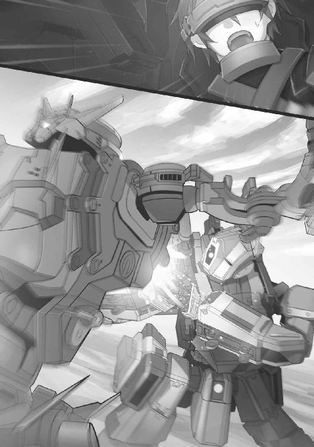
恐怖が、ユーリの身体を満たした。それはいまにも絶叫となって口から迸り出る......、
『きゃぁあああっ！』
だが実際に暗闇に響いたのは、
「慧玲!?」
つんざくような慧玲の悲鳴だった。ユーリは、機体ごと弾き飛ばされる。
地面に叩きつけられたＢＲのメインカメラから見た映像は、
「慧......玲!?」
８
慧玲機もまた、倒れていた。
そのＢＲの背中に、深々と狙撃兵装ナイフが突き立てられている。ナイフを握っているのは、
「クユラ......ウソ、だろ」
クユラ機だ。
ガルムを背後から襲ったクユラに、みずからの機体をぶつけてユーリ機を弾き飛ばした慧玲。
身代わりに、クユラ機のナイフを浴びたのだ。
ソードは頭部ユニットの背後から、半ばほどもまっすぐに突きたてられている。その切っ先は間違いなくコクピットの中まで届いているはずだ。
「慧玲!! クユラ、なぜだっ！」
機体を起こし、クユラ機に向かわせようとするユーリ。
しかしそのまえに、アビゲイル機やカイラシュ機が武器を向けると、クユラ機は大きく跳び退いて退避する。
ソードが支えになっていたのか、引き抜かれたせいで慧玲機はがっくりと崩れ落ちる。慧玲を気遣いながらもユーリは、
「なぜだ！ クユラ、おまえは......」
『その問いには、わたしから答えよう』
叫んだ。だが現れたのは、
「リオン！ おまえが......！」
クユラ機の背後にリオン機が立つ。機体の腰を支え、腕を取り、まるでダンスのパートナーのようだ。
『勘違いをしてもらっては困る。もともとクユラはわれわれのもの。わたしのもとへ還っただけだ』
「何、だと！ クユラに何をした！ 操っているのか。クユラ！ クユラ、聞こえているのか！ オレだ！ ユーリだ。正気を取り戻せ！」
呼びかけるユーリだが、まったく返事がない。
モニター回線はまだかろうじて繋がっているが、ＨＭＤを装着したその表情は凍り付いたようにまったく動かない。
『離れろ、ユーリ！ 何かおかしいぞ！』
擱座した慧玲機についているアビゲイルが言う。
確かにおかしい。何か、というより何もかも。
ユーリはまた一歩、ＢＲの歩を進めた。
すると、
（まただ。音......音楽、いや......）
不意に聞こえる。が、耳を澄ますと、消えてしまうような、そんな......、
『お前にも聞こえるのだな。この音波コードが』
「音波コード、だと」
リオンがカットインで割り込んで来る。モニター上のクユラに重なる。
『あの場に貴様もいたとはな。聞き覚えがあるはずだ。忘れていたのだろうが、わたしたちがいたあの場所に、つねに流れていた、空調と保護液調節のノイズと、時折チェックのために機器が刻む、リズムにも似たある種の音階......』
「何を言ってる！ あの場所って......！」
だがユーリはおぼえている。断片的だが、クユラと話をしたときに蘇った。
（あの、景色......！）
生体カプセルに入った少女を毎日シリンダーに顔がくっつくほどに近づいて見上げていた。
自分と同じくらい幼い少女は、あるとき瞬きをして目蓋を開き、自分を見た。ユーリを見つめた。
（あのときが......トラックの中のカプセルが、初めてじゃなかったんだ。オレを見た。クユラがオレを。オレもクユラを）
『そうしたノイズを音声データとして、トーンとパルスが作られている。この一種の「メロディー」を耳にすると、クユラに施されたプログラムが起動する。クユラのパーソナリティーを、あるべきものへと置き換えるためのな』
「そんなもの、いつのまに」
言いかけて、ユーリは気づく。
クユラをＢＲごと拉致しようとしたセイバーは、ただクユラ機を押さえつけ、羽交い絞めにしていただけでなかった。
クユラ機の装甲に、音声デバイスのユニットを張り付けたのだ。
音は振動で伝わる。
クユラのコクピットは、リオンの言う特定のパルスが生み出す「音楽」で満たされた。
（その「音楽」がトリガーになって、クユラを元の性格、人格に戻すっていうのか。あの無機質な、クユラに）
『それがクユラだ。そう作られた。わたしと同様に、純粋にな。それをおまえが汚した。中途半端に目覚めさせ、イレギュラーな人格をクユラに与えた』
「イレギュラーな？ 違う、あれがクユラの」
『クユラもわたしも、完璧な兵士、ＢＲパイロットとして造られた。ニュード耐性のマッチングも完璧な兵士として』
「完璧な、兵士、だと」
『そうだ。完璧な兵士はおまえなど簡単に凌駕する。凌駕しきっている。三人目がいたとは驚きだったが、街で野良犬のように育った貴様など、わたしとクユラの進む道をたまたま塞いだ雑草に過ぎない。雑草にクユラを導くことなどできない。せいぜい足を汚すだけだ』
耳から流れ込んで来るリオンの言葉が、ユーリの頭蓋内に響く。
もしかしたら、まだ鳴っているその「音楽」が、ユーリにも干渉しているのかもしれない。
「いや......」
（けど、幼いクユラをシリンダーの中に見たあの景色は）
本物だ。本物だと、思いたい。
「クユラ！ いるのか！ 応えろ、オレだ、ユーリだ！」
『やめろユーリ、危険だ！』
進み出ようとするユーリに、シャフィーラが言う。
見るともう、中隊は新たなＢＲに取り囲まれていた。擱座した慧玲機の回収も考えれば、あとは撤収行動に徹するほかない。
だがユーリは、ヤクシャに抱かれたクユラ機を見逃すわけにはいかなかった。
あそこにクユラがいる。まだいる、なら。
「クユラ！ 返事をしろ！」
『無駄なことをするな！ クユラはもう』
だが不思議なことが起こった。
ヤクシャを振り払うようにクユラ機が離れた。
「クユラ！」
ガルムに正対したクユラ機は、ゆっくりとブレードを振りかざす。
（何をやっているんだ。クユラ、まるで）
『ユーリ』
突然、クユラの声が響く。同時にユーリのＨＭＤモニターに、新たなウィンドウが開く。クユラが映っていた。
「クユラ、気が付いたのか。元に戻って......」
『わたしはクユラ。けれどあなたの言うところのクユラではありません。わたしは正しく作られ、正しくプログラミングされた、完全に純粋たる兵士。いずれ、「完全な人類」となる』
「何、言ってんだ。クユラ、正気に戻れ！ いますぐその『音楽』てやつを......！」
ユーリはクユラ機に向かおうとした。
クユラ機に取り付けられているという音声ユニット、それさえ外す、壊すことができれば。
リオンがそれを許すはずがない。
しかしリオン機よりも早く、クユラ機が動く。大きく正確に踏み込み、構えたナイフを袈裟に振り下ろす。
（ク、ユラ......ダメか！）
一歩も動けなかった。
ユーリのガルムの胸部装甲は一刀のもとに両断され、ユーリもろとも真っ二つになる。
はずだった。
「どぁ、っ！」
強い衝撃と爆発。機体が弾き飛ばされる。
クユラ機もまた、間一髪で退避した。
原因は、
『勝手なことは許しません。シャフィーラが退避しろと言っているのです。ユーリ、退きなさい！』
カイラシュだ。
ライフルに備えたグレネード弾を、ユーリ機に発砲したのだ。
角度上、難しかったのと、動きの速すぎるクユラ機を撃つより、確実な方法だったとしても、味方をグレネードで撃つのはかなりの「冒険」だ。
『とうとう味方にまで撃たれるようになったか。野良犬はそうして飼い主にも捨てられるのだな。とどめを刺すのは簡単だが......』
リオンはわずかに何かを推し量ると、
『すでに目的は果たした。わたしの勝ちだ！ 敗北を噛みしめながら、これからの昼と夜を過ごすがいい！』
きびすを返すリオン機。
クユラ機も続く。
かすかに振り返ると、ユーリのガルムを一瞬見つめた。が、
「クユラ！」
いっせいに、あちこちで爆発が起こる。空気が弾けるように空間が爆炎に満たされる。
仕掛けられた地雷ではない。
「ブラストの攻撃じゃない。空からか!? うぁぁああおおおおおっ!!」
空中からの気化熱爆弾。
デイジーカッターと呼ばれる、地表のものすべてを焼き払う爆弾の小型版、威力限定版が投下されたのだ。
投下したのは、リオン側の固定翼機だった。
ＧＰＳと、リオンが送った正確な位置データにより、五千メートル以上の高空から正確にレーザー照準で空爆が可能になる。
苔の生えた通常攻撃が、ＢＲとの連携によって有効性を確保する証明のようなものだ。それこそリオンの狙いどおりだった。
ユーリたちＢＲは、かろうじて地面に伏せるのが精一杯。それでも吹き飛ばされそうになる。
９
爆発が収まっても、戦闘機能のほとんどを奪われていた。
その状態で襲われたらひとたまりもないところだったが、
「......ニュードセンサーも、対物センサーにも反応なし。敵はもう、離れたな」
（クユラも......）
動かなくなったＢＲのハッチを開ける。
幸い電装系は生きていて、ハッチを火薬で吹き飛ばす緊急脱出装置は使わずに済んだ。
「ぅあ......ふ、ぅ」
外へ出ると、もう朝日が海から上って来ていた。
明るくなった空と海岸。
マンティコア中隊のＢＲが影となって、まるで波に洗われる岩のようだ。
「そうだ。慧玲！」
ユーリはガルムのコクピットから這い出ると、一番先に目についた慧玲機へと走った。
「......慧玲」
しかし慧玲のＢＲはもっとも損傷が激しく、はっきりとわかるブレードの傷跡。完全に装甲を貫通してコクピットが一部見えている。
（これじゃもう）
助からない。瞬間的にユーリは感じた。
「すまない、慧玲。オレのために、オレを助けようとしたせいで、おまえを......」
うなだれる。
これまで感じたことのない悔恨とダメージが襲って来て、その場に崩れそうになる。
（そうだ。慧玲には夢があった。アイドルになるっていう夢が。だから傭兵とは別にアイドルの活動も。かつて、両親が芸能の仕事をしていたんだっけな）
「その夢を、オレが奪った。オレが永遠に......」
「はぁ!? ちょっとあんた、慧玲を勝手に殺さないでくれる！」
甲高い声が背後から。
「慧玲、生きて、たのか」
振り返るユーリの前に、パイロットスーツも顔もすっかり汚れた慧玲が立っていた。
「あたりまえでしょ！ 誰だと思ってるの！ そのうえ、慧玲の夢をどうしたこうしたとか、恥ずかしいから、やめてよね！」
赤い顔で、ふんっ！ とかぶりを振る。ツインテールの髪が、ぶんっ！ と揺れた。
「そうだ、それだ。慧玲だ。そういうイラッとするところ、慧玲なんだな、ほんとに」
「なによそれ、ムカつく！ ......まぁ、いいわよ。ユーリ、あんたも慧玲のこと、心配してたみたいって、わかったから」
そう言って慧玲が、片手で髪をかきあげる。その腕に血がにじんでいた。
「だいじょうぶなのか」
「ふん、ちょっとかすったくらいよ。なんでもないわ。それより」
「ぅん？」
「アイドルの夢は、慧玲が自分の力で叶えるの。いい？ 絶対叶えるし、だから死んでなんか、いられないのよ！」
「ああ、ああ。うん。そうだな、了解だ」
深い安堵がこみ上げる。
鼻の根本に熱さを感じると、
「そういうこと！ 夢は別もん！ ってこった！」
「アビー！」
アビゲイルが背後からユーリの肩を、絞り上げるようにつかんだのだ。
例によって顔も身体も煤けているが、負傷はないようだ。
シャフィーラ、カイラシュも、向こうからやって来る。
「ケガはないか、ユーリ」
「負けてしまいましたね。でもみんな元気で、よかったです。あら、だったらもしかして勝ったのかしらぁ」
微笑むカイラシュ。
こんなときも、そのふんわりした空気は変わらない。だからこそ、とてもありがたく思える。
「シャフィーラ......」
「なんだ、ユーリ」
ユーリはシャフィーラのもとに行き、向かい合う。
「オレは......この中隊を出ようと思う」
「ええっ!?」
背後で慧玲の声。ユーリが続ける。
「クユラが、どうやら敵の洗脳みたいなのにかかって、いや、かかっていたのがぶり返したのか、オレを攻撃して、向こうのヘッドといっしょに行ってしまった」
「そのようだな」
「オレはクユラを追う。リオンを倒し、クユラを取り戻す」
「却下」
「短い間だったが......ぁ、あ？」
意表をつかれ、一瞬言葉をなくすユーリ。シャフィーラは、
「除隊して、どうする。どうやってクユラを追うつもりだ」
問い詰める。まっすぐにユーリの目に目線を合わせて離さない。
「それは......傭兵として戦場で」
「フリーの傭兵が戦場など選べない。クユラやリオンを、どうやって追うつもりだ」
「それなら、オレはひとりででも」
「ひとりで何ができる。ブラストはどうする。クルマやバイクではないのだぞ。よしんば中古などで手に入れたとしても、輸送はどうする。補給は？ 河原で遊ぶホビーじゃない。現地までブラストや武装を運ぶ手立ては？」
「そ、それは」
「そういうことだ。おまえがおまえのミッションを全うしたいと思ったら、我が中隊にいるのがいちばんの近道ということだ」
「で、でも、だな！」
「それに何か。除隊するならマグメルに膨大な違約金を払わなくてはならない。今のおまえに払えるのか」
「う、ぅ」
「なら決まりだ」
「待て！ 待ってくれ。つまりその、これはオレとクユラ、あのリオンとの、個人的な繋がりを知りたい、そのための......」
「ユーリ、貴様何か勘違いをしていないか」
「勘違い？」
シャフィーラの口元が、かすかな笑みを乗せる。ユーリに、言った。
「クユラは我が中隊の一員だ。除隊したわけでも、転属になったわけでもない」
「中隊の、一員。この中隊、の」
「それが奪われたのだ。取り戻さずにどうする。マグメルに指示されなくとも、わたしの一念でもなく、仲間が奪われたら取り戻す、当然のことだ」
「仲間......」
「最初に言ったはずだ。『歎きのライオン』となるか、それとも運命を自身で切り開く、そんな傭兵となるのか」
シャフィーラの言葉が、ユーリの内部に響く。ニュードでまだ沸騰した身体が、清浄に還っていく気がした。
「シャフィーラ、オレは」
「そうだよな！ そうこなくちゃ、だ！」
アビゲイルが声を上げる。再びグッ、とユーリの肩をつかむ。
「そうね！ 慧玲もあの無口女にはいろいろ聞いてみたいこともあるし、除隊してなければあたしたちの仲間なのは違いないし、そういうことなら、いいんじゃない。つきあってあげるわよ！」
慧玲もそう言って腕組みし、胸を突き出すように身を反らせる。感謝しなさいよ、の意のようだ。
「どうやらこれで決まりですね。......いいえ、最初から決まっていたのですね」
カイラシュも言う。いつもの笑みとともに。
「みんな。そうか。ありが、と......」
「ただし！」
ありがとう、ユーリは確かにそう言おうとした。
いままでどんなミッションでも、言ったことのない言葉だった。だが言い終えないうちに、慧玲がすごい剣幕で遮る。
「慧玲」
「言っておくわ！ ユーリ、あんた、女の趣味、悪いわよ！」
「あ、はぁ!?」
「だからよ！ まったくもぉ、いくらでもいるじゃない！ なのにあんなのを選ぶなんて。ほんっと、信じられない。呆れちゃうのよね！」
「いや、何か勘違いしてるみたいだけど、オレとクユラは、そんなんじゃない。もしかしたら、兄妹かもしれない」
「ええっ！ そうなの！」
「ああ。オレとリオンとクユラは、もしかしたら......だがリオンは」
「なぁんだ、そうなんだ！ だったら、まぁ......いいんじゃない！」
またも、ユーリの話を最後まで聞かずに、声を上げる慧玲。なぜかその顔が晴れ晴れと輝いている。
「ま、そうだな！ いい女も身近にいっぱいいることだしな！ ゆっくり考えてみろ、なぁ！ ユーリ！」
どん！ と肩を叩かれる。もちろんアビゲイルだ。
「そうですねぇ。趣味は変わらないと言いますけれど、どうなのでしょう」
「検証してみるのもいいかもしれないな」
「アビー！ カイラも、シャフィーラも、いったいどう......」
（なってるんだ？）
混乱するユーリ。
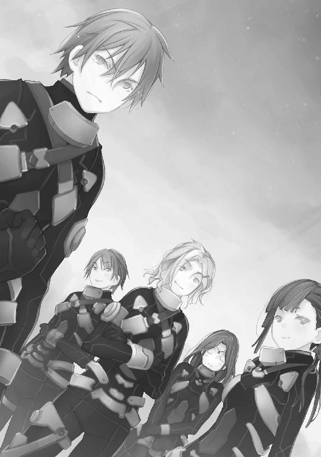
こんなふうに混乱するのもまた、傭兵になってから初めての感覚だった。
戸惑うユーリに、
「来たようだ」
シャフィーラが空をふり仰ぐ。
全員が、朝日の昇る海に顔を向ける。
海からの光を浴びて飛ぶ大型ＶＴＯＬ二機。マンティコア中隊の回収に来た機体が、ローター音を響かせながら迫って来ていた。
10
シャワーブースを出る。
裸身に湯気をまとわせて、クユラは自分のコンパートメントまで足を運ぶところだった。が、
「クユラ。......タオルを、持って来よう」
途中で待っていたリオンと廊下の途中で出会う。驚いて背を向けようとするリオンに、
「構わない」
「いや、それでは」
「要件があるなら言えばいいと思う。服装等は無関係。そもそもあなたとわたしは遺伝子的なマッチングで選ばれたパートナーのはず」
クユラがリオンを見る。
その目に、少しも感情はこもっていない。
「そのとおりだ。それは、うむ。やはりあとにしよう。部屋へ行く」
「もう眠る。プログラム調整のための睡眠に十時間が必要」
「そうか。戻ったばかりで、調整にも時間を要するというわけだ。なら明日、また会おう」
それだけ言うと、リオンは笑顔を見せて、クユラに背を向ける。
廊下を遠ざかっていく後ろ姿を見ながら、
「リオン......」
小さくつぶやいたその唇が、
「ユーリ」
そう続けて、噛みしめるように、口元に力を込めた。
歴史も好きですが、ロボも大好きです。
けっこう長いこと歴史もの（？）を書いていたので、次に書きたいもの、の中にロボットものも大きなウェイトでありました。
なので今回、『ボーダーブレイク』ノヴェライズのお話をいただいたときは正直かなり、やった！ というか、しめた！ というか、そういう気持ちがあったものです。
が、そう簡単ではありませんでした......。
『ボーダーブレイク』、タイトルこそ聞いていたものの、ゲームをプレイしたことはナッシング。
すでにサービス開始から６年以上を経た大作ゲームを、まずは学ぶところから始めなくてはなりませんでした。
膨大な資料を読み込んで世界観を頭に叩き込み、ゲーム自体の固有名詞やアイテムをひたすら覚える。ゲームをプレイするのはもちろん、プレイ動画も山ほど見ました。ネットってすばらしい！
とかやってるうちに、セガさんからある提案をいただきました。
新Ｖｅｒ．のキャラクターふたりの設定の掘り下げとゲーム中のセリフライティングをやらないか、と。
新たに登場する男と女のふたりのプレイヤーキャラは、ノヴェライズの主人公としても設定されています。つまりこれって連動企画、メディアミックスだったのですよ。
毒を食らわば......じゃない、どうせならきっちり設定からやってみたい。というより、ゲームのキャラを借りてくるだけのノヴェライズじゃなくて、ゲームから参加してみたいじゃないか。
考えてみればセガさんは、ぼくがファミコン通信（現・週刊ファミ通）編集部に勤めていたときからの繋がり。昔、Ｒー３６０（知ってる？）の取材に早朝から大鳥居まで行ったもんです、マンガ家の鈴木みそ先生と。
今回、大鳥居にも行きました。駅が地下になってた。間違えて蒲田から空港快速に乗ったら羽田空港国際線ターミナルまで止まりませんでした......。
そんなこんなで、ゲームキャラ設定とセリフライティングというチャンスまで与えてくれたセガさんには大感謝です。それがそのままノヴェライズに持ち越され、キャラメイクも立体的に、モチベーションもダダ上がりです。
世界観とゲーム部分ではキルタイムコミュニケーションの編集Ｈ氏に大いに助けていただきました。というよりこの方、エースボーダー、もとい、ボダブレ廃人なんじゃ......げふんげふっ！
そんな具合に多くの方々と、過去の自分とも出会い、チャンスも協力いただき、何よりぼく自身がボーダーブレイクの世界に惚れこんで、この作品となりました。いまではユーリとクユラが大好きでかわいくて、この先どうなるんだろう、と期待でワクワクしています。
最高のイラストをいただいた、るろお先生、岩間先生には感謝の気持ちしかありません。
そして読者のみなさまに、最大級の御礼を。また、新しいユーリとクユラのストーリーでお会いできることを願って。
すずきあきら
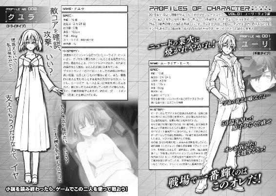
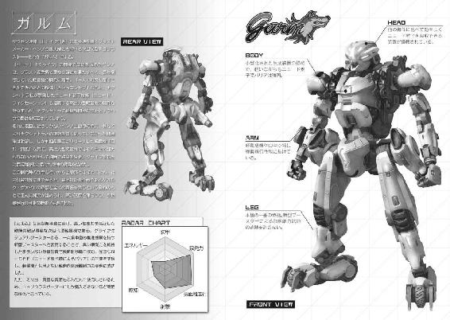
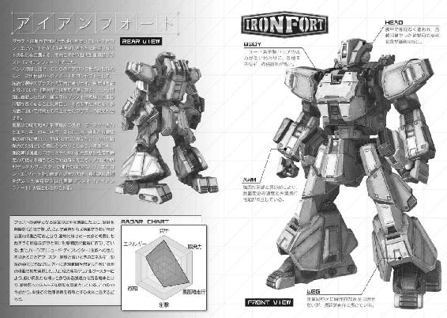
■世界観
▼エイオース（ＥＯＳ）
ＧＲＦが建造した、周回軌道上に存在する巨大施設。異星からの資源採集・研究を目的としていた。ニュードが発見されてからはその研究が行われていたが、西暦2083年、ニュード共振実験の制御失敗により、施設全体を巻き込む大爆発事故が起きる。本体の地球落下は回避されたものの、施設の一部と大量のニュードが地上に落下するとともに、その機能を完全に停止。今も機能停止したまま軌道上を漂っている。
▼シード
周囲のニュードを安定的に増殖させる力を持つ特殊で貴重なニュードである「コアニュード」の素となるニュード。このコアニュードの発生原理は長らく不明とされてきていたが、近年の研究から、特定のニュードが突然変異して発生することがわかってきた。この、突然変異を起こす性質を持つニュードをコアニュードの種、コアシード（通称シード）と呼ばれるようになった。
コアシードは安定的で小型かつ軽量であり、また高値で取引されることから、いつしかボーダーたちの間で新たな代替通貨として流通するようになった。またコアシードにはその純度によって変異のしやすさが異なり、より純度の高いものはライトシード、ナチュラルシード等と呼ばれ、通常のものよりもさらに高値で取引される。
▼ＧＲＦ
特殊環境下での資源採掘や研究開発を円滑に行うための企業同盟を前身とした、国家の枠を越えて活動する科学技術研究組織。正式名称は「Global Resource Federation」。西暦２０３７年に正式に発足され、軌道ステーション「エイオース」の建造や、新物質「ニュード」の発見など、人類にとって多大な貢献を行う。エイオースの爆発事故後、技術者の喪失と、人々に隠していたニュードの毒性が明るみに出たことにより、壊滅的打撃を受けて一時的に活動を停止していたが、十年間で組織を立て直し、ニュード研究を再開した。ニュードの独占的管理と、それを通じての人類全体への支配力掌握を目的に、事故で失われた技術を求めて世界各地に飛散したエイオース片の回収作業とニュードの発掘を行っている。欧州ザクセン連邦（旧ドイツ連邦）の都市「グロースヴァント」に本部が置かれている。
▼ニュード（Ｎｅｗｄ）
復興暦を代表するエネルギー物質。ＧＲＦによる宇宙探査計画の過程で発見された未知の物質で、エネルギーの放出や他物質との融合などの特異な性質を数多く持ち、ブラストの動力源にも使われている。その反面、ニュードの粒子は他物質と接触した際に、その物質を浸蝕・融合してしまう性質がある。この性質を利用して既存の常識外の物質を生み出すことも可能だが、生体細胞などの有機物とも反応する。その場合の多くはニュード硬化と呼ばれる現象を引き起こして細胞の機能が阻害され、最悪の場合は細胞死に至ってしまう。
▼ニュード耐性者
ある種の生体細胞は、ニュードと接触しても融合されず、機能阻害を受けることがない。そういった細胞を持つ者を「ニュード耐性者」と呼ぶ。彼らのほとんどは、生殖細胞に何らかの損傷が発生するのか、子を成すことが極めて難しい。また、定期的なニュード摂取が必要である。
▼ニュード結晶
ニュードは微粒子の集合体であり、通常は一見するとゲル状の液体だが、一定量の熱量を放出するとそれ以上熱量を放出しなくなる。その後は結晶状に硬化して不活性化する。復興暦60年を境に、世界各地のニュード汚染地から地中深くに埋まった結晶が次々と析出する『ニュード・ブロウアウト』現象が発生する。作中の「ニュード結晶」はこの析出されたニュード結晶のことを指す。
▼復興暦（Ｒ．Ｅ．）
エイオースの爆発事故が起きた西暦２０８３年を元年とする新たな年号。甚大な被害を受けた地球の復興を祈願し、この名がつけられた。
▼ボーダー
ブラストランナーに搭乗する傭兵たちの総称。人体に有害であるはずのニュードに対し耐性を持ち、ニュード汚染エリアでも活動できるため、「人間と、人間を超える者の境界線上」「人間の生きられる世界と、汚染された世界の双方で生きる」などの意味をこめた「境界【BORDER】」が本来の由来である。しかし、近年では特に傭兵業を行う者のみを指すことが多く、混同を避けるために単なるニュード耐性保持者のことを「耐性者」と呼ぶようになっている。
▼マグメル
ボーダーの斡旋、派遣を主業務とする民間軍事会社。この分野ではトップシェアを誇っている。復興暦38年に設立し、名称はケルト神話に登場する英霊の楽園に由来する。日本列島、北米大陸などの世界各地に複数の本社が存在しているが、これはマグメルが巨大な戦力を保有していることへの警戒心を解くための分散だと言われている。
稀な才能を持ちながら限られた環境でしか生きられないボーダー達の支援を活動目的としている。しかし、あくまでも営利団体であるため、彼らをＧＲＦおよびＥＵＳＴ各陣営に斡旋することで得られる金銭的利益も活動目的に含まれている。
基本的にＧＲＦとＥＵＳＴの抗争においては中立姿勢を取るが、謎の敵対組織「エイジェン」との戦いではＧＲＦとＥＵＳＴを仲介して旗振り役となっている。ボーダーたちに対してはブラストのカスタマイズやメンテナンスを請け負ったり、武装を購入する窓口も担当するなどの支援を行う。
▼ＥＵＳＴ
地球規模のニュード汚染を引き起こしたＧＲＦを打倒すべく結成された環境団体。正式名称は「Environment Union against Space Threat（宇宙的脅威に対する環境保護機構）」である。
ＧＲＦに比べて規模は小さいが、地球環境の再生を訴える姿勢には支持者も多い。世界規模のニュード汚染の完全除去と、破壊された自然環境の復活、そしてニュード禍を引き起こしたＧＲＦの責任追及と最終的には組織解体を目的に掲げている。特にＧＲＦに対する不信感は根深く、彼らにニュードを委ねれば再度の惨禍に繋がるとして、ＧＲＦのニュード回収作業へ長期にわたる過激な妨害活動を繰り返している。ただし、ニュードに関しては汚染を憎む一方で、エネルギー危機解消のための利用については肯定的姿勢を保っている。
主な活動内容はニュード汚染地でのニュードの除去回収作業と、ＧＲＦの採掘活動の妨害である。いずれもボーダーたちを雇用し、ブラスト部隊を結成した上で作業や作戦にあたっている。なお、回収したニュードは各地の支部で保管され、研究者たちが平和利用や安全な処理の方法を研究している他、商業ルートにも流して莫大な利益を得ている。また、マスメディアやＷＥＢを通じてのＧＲＦへの非難声明なども定期的に行っている。
太平洋の公海上を回遊する武装客船「アナスタシス」を本部としており、そこで生活する指導者「ラーフ」と、少数の幹部の協議によって活動方針が決定される。
■メカニック
▼ブラストランナー
ニュード回収を行うＧＲＦと、それを妨害するＥＵＳＴによる抗争が激化した折、ＴＳＵＭＯＩにより開発された戦闘用ロボット。初期は「戦闘用ブラストウォーカー」と呼ばれていたが、腰部ブースターとラッシングホイール機構により格段の機動力を実現し、戦場を疾走する姿から「ブラストランナー」と呼ばれるようになった。通称「ブラスト」「ＢＲ」。
モデルやカスタマイズで変動するが、全長は約五メートル、重量は十～二十トン。ニュードのエネルギー発生作用を利用した動力システムであるニュード・ドライブ方式の小型モーターを多数内蔵し、それを動力としている。ニュードのエネルギー供給効率は非常に高く、ブラストランナーはミリタリーパワーでの大出力でも連続で一週間以上の稼働を可能とし、通常稼働であれば一ヵ月以上もニュード無補給で稼働し続けられる。この機構により、大容量の燃料タンクを積む必要が消えたが、機体破損時にはモーターから溢れたニュードが急激に外気や光に接触することで発熱・爆散する危険性を伴うようになった。
また、ブラストランナーは大きく分けて頭部、胴部、腕部、脚部の四つのパーツに分かれており、支給されている機体の対応するパーツを組み合わせることで様々なカスタマイズが行える。
さらに、戦場において迅速な状況対応が求められるブラストランナーは、複数の武器を両肩部マウンターに装着し、戦闘中に随時切り替えることができる。この武器の組み合わせを「兵装」と呼ぶ。兵装には「強襲兵装」「重火力兵装」「狙撃兵装」「支援兵装」の四つがある。この兵装の限定により、ブラストランナーに搭載されるコンピューターの処理能力の負荷を低減させ、操作を簡易にしているため、十分な訓練を受けられないままに戦線投入されるボーダーであっても容易に操縦することが可能となっている。
復興暦49年にはコンピューターチップの挿入によるソフトウェア面から機体機能を拡張強化する第二世代ブラストランナー「イクシード・ブラスト」が、復興暦65年には新技術「ＣＩＳフレーム」によるブースターの限界使用と予備弾数の積載、および機体の装甲表面にニュード素子膜を生成し保護する一種のバリア展開装置「ニュード・ディフレクター」の搭載を可能にした第三世代ブラストランナー「Ｆ３ブラスト」が開発される、といった変遷を経ている。
▼チップ
第二世代ブラストランナーから搭載可能となった、ブラストの駆動制御ＯＳを一部書き換えて従来とは違った機能や様々な挙動を追加するコンピューターチップ。専用のソケットをコクピットに用意し、各パーツの制御ＣＰＵの余剰メモリを使用して搭載する。
■企業
▼四条重工
日本の巨大企業集団である四条グループの中核企業。銃器の製造技術に優れ、もともとはブラスト用の武器を製造していたが、ＴＳＵＭＯＩインダストリと技術提携してブラストランナーの製造に参入する。リリース機体は迅牙、雷花、月影。
子会社にマグメル四条保険機構を持ち、救難兵装機によって戦場での救難任務を行っている。この救難兵装用の特殊なブラストや装備の製造も手掛けており、他にもニュード採掘用のプラントやベース、エイオースの一部の製造にも携わった。航空宇宙部門でもズィーメック社と共同でサテライトバンカーの製造と大型太陽発電衛星の復旧に携わっている。
▼ＴＳＵＭＯＩ
正式名称「ＴＳＵＭＯＩインダストリ」。日本に本社を置く老舗ブラストメーカーにして、ブラスト製造の最古参企業である。ブラストランナーだけでなく、その前身である作業用ロボット「ブラストウォーカー」を生み出したメーカーでもある。リリース機体はクーガー、エンフォーサー、セイバー、スペクター。
創業以来、大型機械メーカーとして業績を伸ばしたものの、エネルギー危機の煽りを受けて経営危機に陥っていた。しかし、エイオース建造にあたり、ＧＲＦからの作業用ロボットの大量受注で一気に経営が好転する。エイオース事故後は、ニュード回収を開始したＧＲＦから「不整地での発掘作業用機械」開発の依頼を受け、ブラストウォーカーの開発に成功。ＧＲＦとＥＵＳＴの抗争が勃発してからは、ニュード汚染下で使用可能な兵器の需要を見越して戦闘用ブラストウォーカー＝ブラストランナーの開発に着手し、復興暦35年に初の戦闘用モデル「クーガー」を開発する。当初はＧＲＦに販売されていたクーガーだったが、やがてＥＵＳＴにも裏から流すようになり、ブラスト同士が戦う資源戦争が始まるのだった。
▼ナクシャトラ
ブラストランナー産業業界に突如参入してきた、北欧・ノルド合衆国の新興メーカー。特異な形状の新時代的モデルを得意とするが、その来歴には不明な部分も多い。リリース機体はＥ．Ｄ．Ｇ．、ヤクシャ、ディスカス、Ｂ．Ｕ．Ｚ．、アスラ。
創業以来、作業用ブラスト向けのＡ．Ｉ．やＯＳなどのソフトウェア開発が主流だったが、復興暦43年に完全自社独自モデル「Ｅ．Ｄ．Ｇ．」を発表する。如何にしてブラストの開発技術を得たのかという疑問の声が出る中、その二年後に新モデルの「ヤクシャ」を発表し、非常に総合性能の高い高速軽量機体としてエース級のボーダーの人気を博した。業界内での地位を獲得したナクシャトラは、またも間髪入れずに次のモデル「ディスカス」を発表。やはり新興メーカーにしては高すぎる技術水準が様々な憶測を呼んだ。ブラストランナーをチップによって強化する第二世代ブラストランナーの概念も、ナクシャトラが生んだのではという噂もある。
幹部が表に姿を現したことはなく、実体は謎に包まれている。
▼ベンノ
ザクセン連邦に本拠地を置く兵器メーカー。総合性能の優れた流線型モデルを得意とする。リリース機体はツェーブラ、ケーファー、ヤーデ、ネレイド、グライフ。ガルムはリリースに向け、試験運用を行っている。
大汚染以前から続く兵器メーカーとして砲台や戦車の製造に定評があった同社は、ＴＳＵＭＯＩに大きく遅れる形でブラスト業界への参入を発表し、兵器製造の中で培った弾道制御技術を活かして遠距離攻撃に優れたモデル「ツェーブラ」をリリースする。ボーダーたちに評価されると、そこから間を置かずに新モデル「ケーファー」も発表。続いて、空中浮遊技術「ＶＩＦＯＳ」を保有するズィーメック社や専用武装の開発に武器メーカーのＤＡＡＩ社を交えての三者共同体制のもと、ブラスト搭乗型戦闘兵器「ワフトローダー」の開発に成功し、ＥＵＳＴとＧＲＦへの販売を開始する。さらに低迷する他社に差をつけるべく、異例の「浮遊機動ブラスト」として、小型化したＶＩＦＯＳを搭載した「ネレイド」をリリースした。しかし、極めて高額な開発費に見合うほどの売り上げとはならず、次世代機を開発するための体力を失ったベンノは長い停滞期に入ってしまう。その後、ナクシャトラとの提携を機に、新型装甲を持つ新モデル「ヤーデ」の投入やツェーブラシリーズの画期的な軽量化、そして第三世代ブラストランナーのいち早い開発などにより、新たな時代を築き始めている。
■機体
▼Ｅ．Ｄ．Ｇ．
ナクシャトラ社が初開発したブラストランナー。装甲や機動性を犠牲にして、遠距離からの攻撃に特化した特殊モデル。ナクシャトラのソフト開発技術を活かし、高い索敵性能と射撃補正機能を実装している。特異な角ばった形状は電探対策として採用されたものである。羽のように見えるパーツはカウンターウェイトと放熱板を兼ねている。
ソフトウェア開発が主流だったナクシャトラ社がこのブラストの製造技術をどこから得たのかは謎に包まれている。
▼エンフォーサー
重火力兵装での運用を視野に入れ、クーガーの後継機種として開発されたＴＳＵＭＯＩの中量級ブラストランナー。
▼クーガー
ＴＳＵＭＯＩインダストリが開発した史上初のブラストランナー。性能バランスとコストパフォーマンスが良く、操縦もしやすい初期型のクーガーⅠ型はベストセラーとなり、現在も多数が使用されている。発展型にはクーガーⅡ型、クーガーＳ型、クーガーＮＸがある他、救難任務用の特殊タイプであるクーガーＲ型が存在する。
▼シュライク
エアロン・エアハート社が開発した軽量型ブラストランナー。耐久性と引き換えに機動性が高い。ナクシャトラ社の開発した、同じ軽量級であるヤクシャにシェアが押されているものの、コストの安さや各挙動の硬直の少なさなどから一定のシェアを確保している。
▼スペクター
空挺部隊用ブラストとして開発された、重量型ホバー機体。ＴＳＵＭＯＩ初の重量級にしてホバー搭載機種である。重い機体でありながらも標準的な機動性を確保しており、重火力兵装への適性が高い。
▼セイバー
ＴＳＵＭＯＩインダストリが開発した、隠密任務用の軽量級ブラストランナー。
▼ディスカス
汎用性と、防御性能の両立を目指した中・重量級ブラストランナー。開発はナクシャトラ社。装甲強化を主要駆動部のみにとどめ、挙動への影響を抑えている。シリーズ内の組み合わせによって中量級から重量級までカバーできるのが特徴である。中でもディスカス・エヴォルは従来のニュード・モーターよりも高い出力を得ている。
▼Ｂ．Ｕ．Ｚ．
ナクシャトラが開発した軽量級ブラストランナー。ＶＩＦＯＳを搭載したホバータイプであるが、ＶＩＦＯＳ技術を持たなかったはずのナクシャトラが如何にしてこの機体を開発できたかは謎に包まれている。浮遊機体の高速化を実現させた機動力特化の機体で、防御面には不安があるものの、空中での突出した機動力を活かしきれば特殊なルートでの進撃も可能とする。
▼ヘヴィガード
エアロン・エアハート社が初開発した、装甲特化型の重量級ブラストランナー。ＧＲＦとＥＵＳＴの資源戦争の初期にリリースされ、重火力兵装用で使われることが多かった。他社からも同様のコンセプトを持つ機種は複数登場したものの、今もって重装甲にかけてはトップクラスを誇っている。
随所にＴＳＵＭＯＩインダストリのクーガーに類似している箇所が見られるが、それは模倣ではなく実際にＴＳＵＭＯＩから技術提供を受けたからという説が有力である。ＴＳＵＭＯＩは自社のカスタマイズフォーマットをデファクトスタンダード化するために、常識では考えられないほどの協力を行った。
▼ランドバルク
エアロン・エアハート社が開発した重量級ブラストランナー。大重量装備を積載しての機動性を確保しつつ、重装甲を誇る。長らく新型機をリリースできず停滞していたエアロン・エアハート社だったが、この機体のリリースをもって復活し、怒涛の攻勢を開始した。
▼ヤクシャ
ナクシャトラ社の開発した軽量級ブラストランナー。総合性能の非常に高い機体であり、マグメルはこの機体を特に優秀な戦績を収めたボーダーのみに支給・販売しており、使用できるのはごく一部のボーダーに限られている。同モデルには「ヤクシャ」「ヤクシャ改」「ヤクシャ弐」の三種がある。
■武器
▼アサルトチャージャー
ＤＡＡＩ社が製造した、ブラストランナーの機動性を高める増幅ユニット。ブースト内のジェットエンジンを胴部キャパシスターに蓄積したエネルギーによって出力を一時的にアップして、推進力を飛躍的に向上させる。使用中は通常のブースト以上に機体への負担が大きく、連続使用時間は制限されている。
▼ＥＣＭグレネード
対ブラスト用の電子妨害手榴弾。炸裂すると、電波を撹乱する特殊な金属片を散布し、周辺の機体の電子機能を混乱させる。ＥＣＭの効果中は、ブラストのメインカメラや各種センサーによる索敵機能に大きな制限を受けることとなる。
▼ＶＯＬＴ─ＲＸ
強襲兵装で装備できる、荷電ニュード弾を発射するアサルトライフル。連射速度を強化し、瞬間火力が高いことに加えて射撃時の精度にも優れている。
▼ＬＥ─ブリッツァー
刀身から高圧のニュード粒子を放出する強襲兵装用の近接戦闘装備のひとつ。通常の斬撃に加え、ニュード粒子を高圧充填することで前方に投射することができる。ＬＥは「Licht Entlader（ドイツ語で光線投射機）」の略称である。
▼強化型グレネードランチャー
強襲兵装で装備可能なグレネードランチャー。着弾すると爆発する着発信管を採用している。ただし、弾には安全装置が組み込まれており、射撃直後は着弾しても起爆しない。このモデルは装弾数が一発と少ないが、破壊力には定評があり、41型手榴弾とともにシェアを競っている。
▼サワード・コング
着発信管により着弾すると爆発する、重火力兵装用の汎用ロケットランチャーのうちのひとつ。携行弾数と弾速に難があるものの、その破壊力は絶大である。射撃時は自身を巻き込まないように注意が必要となる。
▼スタングレネード
周囲に機体制御機能を阻害する電磁波を放出し、影響下のブラストを一定時間行動不能にする特殊グレネード。
▼Ｄ１０２アシュヴィン
強襲兵装で使用可能な、二丁同時運用を想定して片手でも扱えるよう小型化されたサブマシンガン。ライフリング転度の大きい最新鋭の銃身により威力が向上されており、瞬間火力は二丁サブマシンガンの中ではトップクラスを誇るが、反動が大きく制御には熟練が必要。
▼デュエルソード
強襲兵装用の近接戦闘用装備のひとつ。長さ約二メートル・重量五百キログラム超の強化硬合金製の刀身に、遠心力をかけることで対象を叩き切る。
▼41型手榴弾
ブラスト用汎用グレネードの、破壊力強化モデル。初期モデルの38型手榴弾より内蔵火薬の量や成分が改良されている。起爆までの時間は延伸したが、凄まじい爆風で広範囲の敵に致命的な損傷を与えることができ、ボーダーの中でも特に人気の高い武器となっている。
▼リヒトメッサー
強襲兵装で装備可能な、ニュード粒子を伴う刀身で斬撃を繰り出す近接格闘用武器。系列武器に、ニュード粒子の出力を強化した「リヒトメッサーⅡ」やさらに超高圧でニュード粒子を放出する「ＬＭ―ジリオス」がある。
▼ロングスピア
強襲兵装用の対ブラスト用刺突系近接武器。ダッシュ移動と併用して繰り出される鋭い突きは攻撃対象に回避の余地を与えない。その使いやすさから、ボーダーたちからの人気が非常に高い武器となっている。
■その他
▼アルドシャウラ
マグメルと敵対する謎の組織「エイジェン」により建造された多脚戦艦タイプの巨大母艦。全長１７６．５メートル、全幅２０７．２メートル、全高１３７．５メートル。二対の剛脚を有し、地上のあらゆる施設、勢力を踏み潰しながら進軍する。シンプルな四脚歩行方式の構造であり、脚部は超大型の打突兵器としても使用されている。巨大母艦にしては小型であるため、機体内に収まりきらなかった補助動力が脚部に設置されており、露出している脆いラジエーターが弱点にもなっている。また、脚部の高速伸縮とブースターの併用により、巨体に見合わない大ジャンプが可能で、戦闘機動能力が高い。地上で戦闘するブラストにとって大きな脅威となっている。
エイジェンがこのように巨大な兵器をどこでどうやって製造しているかは謎に包まれている。かつて兵器メーカーのズィーメック社が多脚タイプの大型兵器を提案したことがあり、何らかの関連性を指摘する声もある。また、搭載されている機能にナクシャトラ社のブラストに搭載されているものと酷似しているものがあり、ナクシャトラも絡んでいるのではないかとの疑惑も浮かんでいる。
▼ワフトローダー
ズィーメック、ベンノ、ＤＡＡＩの三社により共同開発された拠点攻略用戦略兵器。全高６メートル、全長約12メートル。膠着したブラスト戦闘を一気に打開することを目的として開発された巨大戦闘兵器で、大型の空中浮遊技術「ＶＩＦＯＳ」により常時浮遊しており、最高で三機までのブラストランナーを格納することが可能である。格納されたブラストはそれぞれが機体に搭載された火器で強力な攻撃を行うことができ、最大三機のブラストを空挺降下させて強襲する、一種の強襲揚陸艦的な戦術にも適している。
開発に際してはＶＩＦＯＳの技術を持つズィーメックが姿勢制御部分を、ブラスト開発で実績を上げるベンノが機体装甲部分を、ブラスト用武器開発に定評のあるＤＡＡＩ社が搭載火器をそれぞれ担当した。こうして三社協力体制のもとで完成した兵器「ワフトローダー」は、膠着しがちだったブラスト戦場に大きく歓迎され、ＧＲＦ・ＥＵＳＴ両陣営に多数購入されることとなる。戦局の打開を念頭に開発されたそれだが、実際には各戦場に大量に供給されたためにワフトローダー同士の戦闘が起きることも珍しくなく、皮肉にも紛争泥沼化の一因ともなっている。
動物占いではオオカミ。ガンダム占いではRX-78ガンダム。趣味はネコと観葉植物を愛でること。主な著作に『夷皇島学園』シリーズ、『蒼穹の女神』（以上MF文庫J）、『百花繚乱SAMURAI GIRLS』（HJ文庫）、『戦乙女のWWⅠ兵器教室』、同『戦史教室』（以上イカロス出版）など。日本SF作家クラブ会員。
お嬢さんは軽量型が好きですが、機体は重量型が好きです。
初めて筐体に触れたのが、確か初めての市街地Ａ配信の少し前。その砂塵舞う戦場とメカデザイン、世界観に魅せられて一発でどっぷりニュードに浸かって以来、まさかブラストランナーを描かせて頂ける事になる程の付き合いになるとは...。一ボーダーとして、さらなる世界の拡大を楽しみにしております。
レベルアップノベルズ
歎きの獅子と眠れる花嫁
ボーダーブレイク スコードロン・マンティコア
小説 すずきあきら
イラスト るろお 岩間芯
原作 株式会社セガ・インタラクティブ ボーダーブレイク開発チーム
発行 株式会社キルタイムコミュニケーション
〒104-0041 東京都中央区新富1-3-7ヨドコウビル1Ｆ
編集部 TEL 03-3551-6147／FAX 03-3551-6146
販売部 TEL 03-3555-3431／FAX 03-3551-1208
URL http://ktcom.jp/
©SEGA ©Akira Suzuki 2015-2016
当ファイルは、レベルアップノベルズ『歎きの獅子と眠れる花嫁 ボーダーブレイク スコードロン・マンティコア』（2015年12月31日 初版発行）に基づいて作成しております。
※本作品の全部あるいは一部を無断で複製・転載・配信・送信したり、ホームページ上に転載することを禁止します。本作品の内容を無断で改変、改ざん等行うことも禁止します。また、有償・無償にかかわらず本作品を第三者に譲渡することはできません。
※本作品は電子書籍配信用に再編集しております。